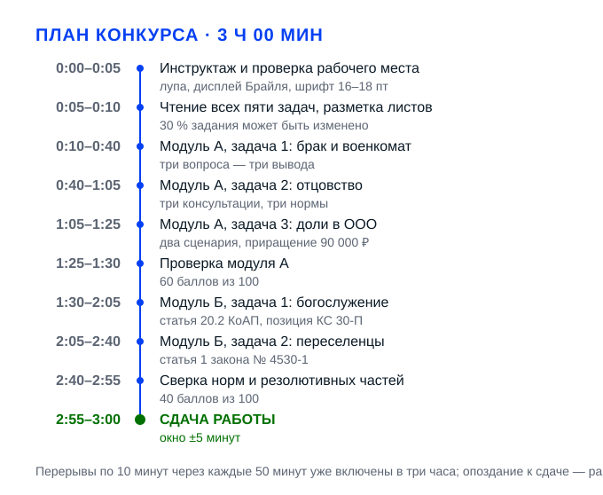
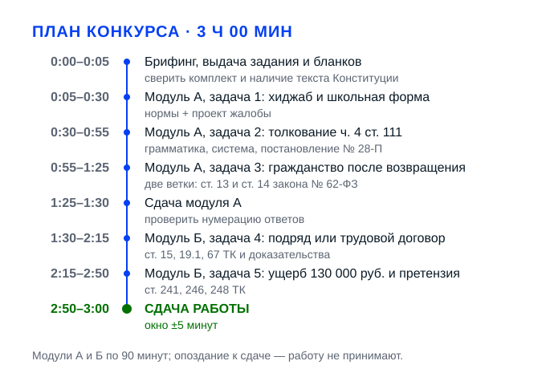
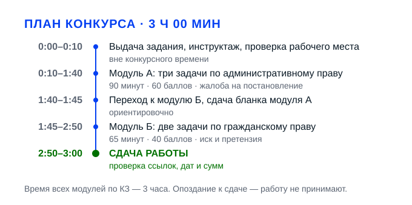

Юриспруденция (Р)
Задания ниже — официальные файлы «Абилимпикс» (источник: abilympics-russia.ru), разложенные по категориям. Решения написаны по тексту задания, регламенту и критериям оценки; в них указано, что именно проверяет эксперт.
Школьник
14–16 лет, базовый уровень заданияВыдержка из официального конкурсного задания: страницы, относящиеся к категории «Школьник» (стр. 5–7 источника).
Пошаговое решение
Категория «Школьники» решает пять практических ситуаций за три часа: модуль А — семейное право (три задачи, 90 минут, 60 баллов из 100), модуль Б — конституционное право (две задачи, 90 минут, 40 баллов). Задания построены на реальных казусах: регистрация брака раньше месяца, установление и оспаривание отцовства, доля в ООО, приобретённая до брака, богослужение без уведомления и ходатайство о статусе вынужденного переселенца. Оценивают два результата: определение подлежащих применению норм и обоснованные выводы с проектами документов, поэтому каждый ответ строится по одной схеме — факты, норма с пунктом, анализ, прямой вывод. Главный риск не в сложности норм, а в потере вопроса: в каждой задаче их два или три, и каждый требует отдельного вывода со своей статьёй. Ещё 30 % задания эксперт вправе изменить, поменяв детали ситуаций или формулировку жалобы, поэтому заучивать ответы бесполезно.

Задача 1. Проверить законность регистрации брака через две неделиМодуль А · 60 баллов на три задачи · 90 минут
Первая задача модуля А проверяет три вещи сразу: знаете ли вы срок заключения брака и порядок его сокращения, понимаете ли, что попадает в актовую запись, и помните ли об обязанности загса сообщать в военный комиссариат. Все три вопроса стоят в одной фабуле, но отвечать на них нужно раздельно, каждый со своей нормой и своим выводом. Здесь же удобно поставить привычку, которая потом сэкономит время в задачах 2 и 3: сначала факты и нормы, потом вывод, и никогда наоборот.
Действие 1.1. Разобрать фабулу и выделить три самостоятельных вопроса
Шаг 1.1.1
Первые пять минут модуля А уходят не на письмо, а на разбор условия: выписываем на черновик участников, события с датами и три вопроса дословно. По задаче 1 в столбик идут Денисов и Карпова, три года фактической совместной жизни, общий ребёнок, не записанный на Денисова, заявление в орган загса Рязани и брак через две недели, смена фамилии военнообязанным Денисовым. Вопросы нумеруем отдельно, чтобы каждый получил собственный вывод и собственную норму.
Критерий «определение подлежащих применению правовых норм» оценивает точность привязки нормы к факту, а не объём текста: если факт не выписан, норма выбирается наугад. Модуль А весит 60 баллов из 100, три задачи делят их между собой, поэтому пропущенный вопрос стоит примерно трети баллов модуля.
В черновике ровно три вопроса, у каждого есть дата или срок, имена и суммы совпадают с условием. Проверьте себя просто: закройте условие и перескажите фабулу по черновику — если пересказ полный и без домыслов, факты выписаны верно.
Типичная ошибка — начать сразу с ответа на первый вопрос и забыть третий: про военкомат вспоминают за минуту до сдачи, и баллы теряются без юридической причины. Вторая ошибка — переписать фабулу целиком, потратив на переписывание десять минут из девяноста.
Эксперт смотрит, есть ли в работе структура «факт — норма — вывод» по каждому вопросу, и проверяет, не пропущен ли вопрос, который в задании стоит последним.
Шаг 1.1.2
Определяем отрасль и круг актов: отношения по заключению брака регулирует глава 3 Семейного кодекса, процедуру регистрации — Федеральный закон от 15.11.1997 № 143-ФЗ «Об актах гражданского состояния», а изменение фамилии военнообязанного тянет за собой Федеральный закон от 28.03.1998 № 53-ФЗ «О воинской обязанности и военной службе». Выписываем эти три акта в шапку ответа, рядом с каждым — статью, которую собираемся применять.
Оценка идёт по двум результатам модуля: определение подлежащих применению норм и обоснованные выводы на их основании. Ссылка на закон без номера и даты читается как пересказ учебника, а не как работа юриста, и снимает баллы именно по первому критерию.
В шапке три акта с датами и номерами, у каждого указана статья. Если хотя бы один акт назван без номера или назван неверно, переписывайте шапку сразу, пока не ушли дальше по тексту. Отдельно проверьте дату закона об актах: 15 ноября 1997 года, а не 1998.
Ссылаться на «Семейный кодекс» без статьи — значит не показать, какую именно норму вы применяете, и эксперт не может засчитать применение права. Ещё хуже — сослаться на Кодекс о браке и семье РСФСР, который не действует с 1996 года.
Эксперт проверяет шапку ответа в первую очередь: по перечню актов видно, понял ли участник, что вопрос о военкомате лежит вне семейного права. Отдельно видно, назван ли Федеральный закон № 53-ФЗ.
Шаг 1.1.3
Размечаем ответ на три части по числу вопросов и в каждой оставляем место под вывод: сначала срок регистрации, затем содержание актовой записи, затем сообщение в военкомат. Под каждую часть отводим примерно по шесть-семь строк, а в конце листа оставляем поле для итоговой фразы, где ответы собраны вместе. Если лист маленький, делите его вертикальными линиями, а не переносите ответы на второй лист: на сдаче два листа легко перепутать.
Задание требует «сформулировать обоснованные выводы», и вывод должен быть отделён от рассуждения: эксперт ищет прямую формулировку «загс был не вправе» или «загс был обязан», а не вылавливает её из середины абзаца. Разметка заранее гарантирует, что все три вывода поместятся на лист.
На листе три части и три места под вывод. Проверьте, что каждая часть начинается с вопроса из условия, а не с общего рассуждения о значении брака. Проверьте также, что под каждый вывод оставлено не меньше трёх строк: вывод из одного слова эксперт не засчитает.
Ответ «сплошным текстом» почти всегда заканчивается тем, что третий вопрос растворён в рассуждении и не имеет вывода, а без вывода часть баллов не ставится независимо от правильности анализа. Третий вопрос в такой работе почти всегда остаётся без ответа.
Эксперт оценивает работу по вопросам, а не по абзацам: разметка позволяет ему быстро найти вывод по каждому пункту и не заподозрить пропуск. Разметку он видит ещё до чтения текста.
Действие 1.2. Проверить срок заключения брака по статье 11 СК РФ
Шаг 1.2.1
Берём пункт 1 статьи 11 Семейного кодекса и выписываем правило целиком: брак заключается в личном присутствии по истечении месяца и не позднее двенадцати месяцев со дня подачи заявления. Тут же записываем пункт 2 статьи 27 Федерального закона № 143-ФЗ, который повторяет тот же месячный срок для регистрации. Считаем по фабуле: заявление подано, брак зарегистрирован через четырнадцать дней, то есть месяц не истёк.
Без точной формулировки срока невозможно ответить на вопрос «вправе ли был загс»: именно месяц является тем рубежом, до которого регистрация допустима только по специальному основанию. Норма из двух актов сразу показывает, что срок установлен и семейным, и регистрационным законом, поэтому обойти его нельзя.
В ответе названы оба акта и оба срока: месяц и двенадцать месяцев. Пересчитайте даты по фабуле ещё раз и убедитесь, что четырнадцать дней меньше месяца при любом способе подсчёта. Если получается больше месяца, значит вы считаете от другой даты.
Ошибка — назвать только месячный срок и забыть верхнюю границу в двенадцать месяцев: формулировка «по истечении месяца» без второй половины нормы считается неполной. Вторая ошибка — считать месяц со дня регистрации, а не со дня подачи заявления.
Эксперт проверяет, воспроизведён ли срок полностью и посчитан ли он от подачи заявления — это первый маркер того, что участник читал норму, а не помнил её приблизительно.
Шаг 1.2.2
Разводим два основания досрочной регистрации, которые легко перепутать: уважительные причины позволяют загсу разрешить брак до истечения месяца, а особые обстоятельства — беременность, рождение ребёнка, непосредственная угроза жизни одной из сторон и другие подобные — позволяют заключить брак в день подачи заявления. Проверяем по фабуле, есть ли здесь особая срочность: ребёнок уже рождён и ему не меньше трёх лет, угрозы жизни нет, призыв не объявлен.
Ответ на первый вопрос зависит от того, какое основание применялось: если уважительная причина, загс мог сократить срок, но обязан был принять об этом отдельное решение; если особое обстоятельство, брак регистрируется в день подачи. Совместное проживание в течение трёх лет само по себе не создаёт ни того, ни другого основания.
В ответе названы оба основания и сказано, почему ни одно из них в чистом виде не подходит. Проверьте формулировку: уважительные причины — это про сокращение срока, особые обстоятельства — про день подачи, и путать их нельзя.
Самая частая ошибка — написать, что наличие общего ребёнка автоматически даёт право на регистрацию в день подачи. Ребёнок, рождённый за три года до заявления, не создаёт той срочности, ради которой норма существует, и такой вывод снимает баллы за аргументацию.
Эксперт смотрит, различает ли участник два основания и ссылается ли при этом на пункт 1 статьи 11 СК РФ, а не на общие слова о «жизненных обстоятельствах».
Шаг 1.2.3
Формулируем вывод по первому вопросу с оговоркой, которая и отличает полный ответ от половинчатого: загс не вправе был регистрировать брак через две недели, если не принимал решения о сокращении срока по уважительным причинам, и в любом случае обязан был зафиксировать основание сокращения в документах. Дописываем, что нарушение процедурного срока само по себе не делает брак недействительным, поскольку перечень оснований недействительности закрыт статьями 12–14 и 27 СК РФ.
Вывод без оговорки о недействительности выглядит юридически незрелым: читатель вправе спросить, а что теперь с браком. Статья 27 СК РФ действительно не называет нарушение срока среди оснований недействительности, и это показывает, что участник понимает разницу между незаконным действием должностного лица и судьбой самой записи.
Вывод сформулирован одной фразой и содержит и оценку действий загса, и судьбу брака. Проверьте, что в выводе есть слова «не вправе» или «вправе только при условии» — без них ответ на вопрос не дан. Слова «не вправе» должны стоять именно в выводе.
Категоричное «брак недействителен» — грубая ошибка: недействительность наступает по решению суда и по основаниям статьи 27 СК РФ, а не автоматически из-за спешки загса. Обратная ошибка — ответить только «загс нарушил срок» и не сказать, что с браком.
Эксперт ищет в выводе оговорку о последствиях: именно она показывает, что участник различает процедуру и действительность брака. В задачах о браке это различение встречается почти каждый год.
Шаг 1.2.4
Дописываем второй абзац о том, как заявление оформляется: статья 26 Федерального закона № 143-ФЗ требует совместного заявления, а дату и время регистрации вступающие выбирают сами из доступных интервалов. Отмечаем, что сокращение срока оформляется по совместному заявлению, то есть инициатива должна исходить от самих вступающих в брак, а не от работника загса.
Эта деталь закрывает вопрос о том, кто мог инициировать досрочную регистрацию: если заявления о сокращении срока не было, у загса не было и основания, а значит вывод о незаконности становится доказанным, а не предположительным. Кроме того, так ответ становится проверяемым по документам загса.
В ответе сказано, чьё заявление требуется и что дата выбирается вступающими. Если формулировка «по совместному заявлению» отсутствует, добавьте её — она стоит одной строки, но меняет вес вывода. Дата должна быть выбрана из интервалов, предложенных загсом.
Писать, что загс «мог сам сократить срок», — значит приписать органу регистрации несвойственную ему инициативу. Норма говорит о совместном заявлении, и подмена субъекта ломает всю аргументацию. Вывод после такой подмены не выдерживает проверки.
Эксперт отмечает такие детали как признак работы с текстом закона: они не украшают ответ, а делают вывод доказуемым. Он также смотрит, назван ли орган, который вправе сократить срок, — сам загс по месту регистрации.
Действие 1.3. Ответить про актовую запись и военкомат
Шаг 1.3.1
Открываем статью 29 Федерального закона № 143-ФЗ и выписываем состав записи акта о заключении брака: реквизиты записи, фамилия до и после брака, имя, отчество, дата и место рождения, возраст, гражданство, семейное положение, место жительства, документ о прекращении предыдущего брака, дата заключения брака и документы, удостоверяющие личности. Отдельно подчёркиваем строку про национальность, образование и количество общих несовершеннолетних детей.
Второй вопрос задачи проверяет знание конкретного состава записи: без перечня невозможно сказать, входит ли туда ребёнок. В норме есть прямая оговорка «вносятся по желанию лиц, заключивших брак», и именно она даёт ответ, а не рассуждение о защите интересов детей.
В черновике перечислены элементы записи и отдельно отмечено, что сведения о детях вносятся по желанию. Проверьте, что вы не приписали норме обязательность, которой в ней нет. Если в черновике написано «обязательно», вернитесь к тексту статьи 29 и прочитайте абзац до конца.
Ответ «да, должно быть указано» звучит логично, но противоречит тексту статьи 29: обязательного указания общих детей там нет. Такая ошибка стоит баллов сразу по двум критериям — и по знанию нормы, и по обоснованности вывода.
Эксперт сверяет ответ с текстом статьи 29 и смотрит, заметил ли участник оговорку о волеизъявлении супругов. Если участник пишет «обязательно», это видно сразу: в норме стоит оговорка о желании супругов, и её нельзя не заметить.
Шаг 1.3.2
Формулируем вывод по второму вопросу: указывать наличие общего ребёнка не обязательно, сведения о количестве общих несовершеннолетних детей вносятся только по желанию лиц, заключивших брак, и отказ от таких сведений не является нарушением. Добавляем, что при желании супруги вправе заявить эти сведения, и тогда они попадут в запись на общих основаниях.
Точная формулировка вывода важна потому, что вопрос сформулирован как «должно ли быть указано»: правильный ответ — «не обязательно, но возможно по желанию». Такая редакция показывает, что участник прочитал оговорку нормы и понимает разницу между обязательным и факультативным элементом записи.
В выводе есть и «не обязательно», и «по желанию». Если осталась только одна половина, ответ читается как категоричный и теряет точность. Проверьте ещё, что вывод не противоречит первому ответу: там вы говорите о нарушении срока, а здесь — об отсутствии нарушения, и это разные вещи.
Писать, что загс обязан внести сведения о ребёнке, — значит выдумать норму. Обратная ошибка — сказать, что такие сведения не вносятся вовсе: они вносятся, но по желанию супругов. Обе крайности одинаково стоят баллов по критерию знания нормы.
Эксперт проверяет, воспроизведена ли оговорка «по желанию» дословно по смыслу: это единственный признак, по которому видно знание статьи 29. Оговорка стоит в самом конце абзаца нормы.
Шаг 1.3.3
Переходим к третьему вопросу и берём пункт 4 статьи 10 Федерального закона № 53-ФЗ: органы записи актов гражданского состояния обязаны в двухнедельный срок сообщать в военные комиссариаты сведения о внесении изменений в акты гражданского состояния граждан, состоящих на воинском учёте или обязанных состоять. Рядом записываем обязанность самого гражданина сообщать в военкомат об изменениях в двухнедельный срок.
Третий вопрос существует ровно для того, чтобы проверить, знает ли участник норму вне семейного права. Здесь работают два самостоятельных субъекта — загс и сам военнообязанный, и ответ должен назвать обоих, иначе он неполон. Кроме того, срок в две недели проверяется отдельно: он короткий и легко запоминается.
В ответе две обязанности и один срок — две недели. Проверьте, что назван именно военный комиссариат, а не «органы военного управления» или «военкомат» без привязки к норме. И проверьте, что обязанность загса сформулирована как безусловная, без оговорок о желании гражданина.
Ответ «загс не обязан, это дело самого гражданина» — половина правды и потеря баллов: пункт 4 статьи 10 прямо возлагает обязанность на органы загса. Неверная ссылка на Положение о воинском учёте вместо федерального закона тоже снижает оценку.
Эксперт проверяет, различает ли участник обязанность органа и обязанность гражданина: вопрос задачи построен именно на этом различии. Если назван только гражданин, ответ считается половинчатым.
Шаг 1.3.4
Собираем три вывода в конце работы отдельным блоком: загс не вправе был регистрировать брак до истечения месяца без решения о сокращении срока; сведения об общем ребёнке вносятся в запись только по желанию супругов; загс обязан в двухнедельный срок сообщить в военный комиссариат об изменении фамилии военнообязанного. Каждый вывод оставляем с номером статьи, чтобы его можно было проверить, не читая весь текст.
Итоговый блок — это то, что эксперт читает при спорной оценке, и именно по нему видно, ответил ли участник на все три вопроса. Модуль А даёт 60 баллов из 100, поэтому три аккуратных вывода стоят дороже трёх страниц рассуждений. К тому же итоговый блок удобно проверять на пропуски: три пункта видны сразу.
Три вывода, три нормы, ни одного пропуска. Сверьте блок с условием: вопросы в нём идут в том же порядке, что и в задании, и на каждый есть прямой ответ. Если какой-то вопрос остался без вывода, допишите его в блок, даже если в тексте уже есть рассуждение: блок читают первым.
Свести все три ответа в один абзац — значит потерять адресность: эксперт не обязан догадываться, какой вывод к какому вопросу относится, и вправе не засчитать часть работы. Кроме того, в общем абзаце теряется ссылка на норму, и второй критерий модуля закрывается хуже.
Эксперт сверяет итоговый блок с вопросами задания построчно; совпадение порядка вопросов и выводов ускоряет проверку и снижает риск технической потери баллов.
Задача 2. Дать три развёрнутые консультации по отцовствуМодуль А · 60 баллов на три задачи · 90 минут
Вторая задача модуля А собрана из трёх обращений, и каждое требует отдельного правового режима: установление отцовства, его оспаривание и доказательственная проблема с экспертизой. Общее у них одно — происхождение ребёнка подтверждается только законным способом, а не соглашением взрослых. Отвечать нужно как юрист на приёме: сначала норма и условие её применения, затем разбор фактов, затем прямой ответ на вопрос гражданина.
Действие 2.1. Ответить Соколову про отцовство несовершеннолетнего
Шаг 2.1.1
Начинаем с разграничения трёх обращений: у Соколова вопрос об установлении отцовства, у Пригова — об оспаривании записи, у Сокович — о принудительной экспертизе. Выписываем под каждым обращением свою норму: статьи 49, 52 и 79 ГПК РФ соответственно, а рядом отмечаем, что все три ситуации объединены статьями 48 и 49 СК РФ о происхождении ребёнка. Главное — не потерять ни одного вопроса.
Задание требует «развёрнутые, аргументированные ответы», а не общий текст об отцовстве: каждый гражданин спрашивает о своём, и смешение режимов приводит к тому, что ответ на второй вопрос оказывается ответом на первый. Разделение сразу показывает, что участник видит разницу между установлением и оспариванием.
Три обращения, три нормы, ни одного повтора. Проверьте, что под каждым вопросом стоит статья, которая действительно регулирует именно этот случай, а не соседний. И проверьте, что под каждой нормой стоит пункт или часть, а не только номер статьи.
Свалить все три вопроса в один раздел «об отцовстве» — типичная ошибка: тогда ответ Сокович о принудительной экспертизе подменяется рассуждением об установлении отцовства, и баллы за третий вопрос не ставятся.
Эксперт смотрит на структуру ответа: три адресата, три вывода. Если обращения перепутаны, это видно уже по первому абзацу. Ему также важно видеть, что участник не смешал три обращения в одном абзаце.
Шаг 2.1.2
Берём статью 49 СК РФ и выписываем, кто вправе требовать установления отцовства в суде: один из родителей, опекун или попечитель ребёнка, лицо, на иждивении которого находится ребёнок, и сам ребёнок по достижении восемнадцати лет. Применяем к Соколову: он дед, в перечень не входит, но его несовершеннолетняя дочь — мать, и именно она является надлежащим истцом, а отец выступает её законным представителем.
Вопрос Соколова сформулирован как «можно ли установить отцовство в судебном порядке», и правильный ответ начинается с субъекта: способ есть, но заявителем должен быть не дед. Без этого уточнения консультация юридически неверна, хотя по смыслу и кажется верной.
В ответе перечислены все категории заявителей из статьи 49 и указано, кто именно будет истцом в этой ситуации. Проверьте, что вы не записали Соколова самостоятельным истцом. Отдельно отметьте, с какого возраста ребёнок вправе обратиться сам — с восемнадцати лет.
Ответ «дед вправе обратиться в суд, так как защищает интересы внука» — ошибка: статья 49 не даёт деду такого права, и суд оставит заявление без рассмотрения. Теряется и балл за норму, и балл за вывод.
Эксперт проверяет, назван ли надлежащий истец и объяснено ли, в каком качестве выступает отец несовершеннолетней матери. Если в ответе дед назван истцом, вывод по первому обращению считается неверным.
Шаг 2.1.3
Уточняем момент: по смыслу статьи 49 СК РФ отцовство устанавливается в отношении рождённого ребёнка, поэтому до родов иска нет. До рождения работает добровольный порядок по статье 48 СК РФ — совместное заявление матери и отца в загс, в том числе поданное при беременности при наличии обстоятельств, дающих основание предполагать затруднительность последующей подачи. Поскольку одноклассник отказывается, остаётся судебный путь после рождения.
Этот шаг отвечает на скрытую часть вопроса: Соколов спрашивает сейчас, а ребёнок ещё не родился. Если не сказать о моменте, консультация будет обещать то, чего нельзя сделать сегодня, и это снижает оценку за обоснованность выводов. Кроме того, так снимается ложное ожидание быстрого решения.
В ответе есть срок: иск подаётся после рождения ребёнка и государственной регистрации рождения. Проверьте, что добровольный порядок назван как альтернатива, а не как обязательный первый шаг. Отдельно проверьте, что до рождения иска не существует.
Советовать «подать иск немедленно» — значит не заметить, что объекта ещё нет: запись о рождении не составлена, и устанавливать нечего. Такая ошибка стоит баллов по критерию обоснованности. Суд просто вернёт заявление без рассмотрения.
Эксперт отмечает, различает ли участник добровольное и судебное установление и понимает ли, что судебный порядок привязан к рождению ребёнка. Это видно по первой же фразе ответа.
Шаг 2.1.4
Описываем доказательства и особенности ответчика: суд принимает любые доказательства, с достоверностью подтверждающие происхождение ребёнка, включая заключение молекулярно-генетической экспертизы, объяснения сторон и медицинские документы. Поскольку одноклассник тоже несовершеннолетний, в процессе участвуют его законные представители, а на экспертизу требуется их согласие, и об этом стоит предупредить Соколова заранее.
Разъяснения Пленума Верховного Суда РФ в постановлении от 16.05.2017 № 16 прямо говорят о любых доказательствах и о том, что заключение экспертизы не имеет заранее установленной силы. Указание на несовершеннолетнего ответчика показывает, что участник видит процессуальную сторону, а не только материальную.
В ответе названы минимум три вида доказательств и сказано о законных представителях несовершеннолетнего ответчика. Проверьте, что вывод звучит как «да, установить можно», а не как «возможно, если он согласится».
Писать, что без признания отца суд откажет, — неверно: статья 49 СК РФ допускает установление против воли ответчика. Обратная ошибка — обещать автоматическую победу по одной экспертизе, забывая, что суд оценивает доказательства в совокупности.
Эксперт проверяет, есть ли ссылка на постановление Пленума № 16 и упомянута ли процессуальная роль законных представителей несовершеннолетнего. Особенно если ответчик несовершеннолетний.
Действие 2.2. Ответить Пригову про оспаривание отцовства
Шаг 2.2.1
Начинаем с презумпции: по пункту 2 статьи 48 СК РФ, если ребёнок родился в браке, отцом признаётся супруг, если не доказано иное. Объясняем Пригову, что его записали отцом не потому, что он дал согласие, а в силу закона, и именно поэтому запись можно оспорить только через суд, а не заявлением в загс. Сразу отмечаем, что запись в акте о рождении сделана загсом, а не матерью, поэтому и спорить нужно с записью, а не с человеком.
Без объяснения презумпции ответ читается как упрёк: гражданин не понимает, почему его записали отцом чужого ребёнка. Норма пункта 2 статьи 48 СК РФ снимает этот вопрос и одновременно объясняет, почему добровольного порядка здесь нет. К тому же это объясняет, почему иск подаётся в суд.
В ответе названа статья 48 и прямо сказано, что запись сделана в силу презумпции, а не по заявлению. Проверьте, что вы не написали, будто Пригов «сам себя записал отцом». Проверьте также, что вы объяснили, кто вправе оспаривать запись, — сам записанный отец.
Утверждать, что запись можно исправить заявлением в загс, — грубая ошибка: аннулирование записи об отце возможно только по решению суда, и совет приведёт гражданина в тупик. В загсе такое заявление примут, но решение об аннулировании записи не примут.
Эксперт смотрит, объяснена ли презумпция отцовства и назван ли судебный порядок оспаривания как единственный. Он также смотрит, названа ли статья 48 СК РФ и понял ли участник, что запись сделана загсом в силу закона.
Шаг 2.2.2
Берём статью 52 СК РФ: запись родителей может быть оспорена только в судебном порядке по требованию лица, записанного отцом или матерью, лица, фактически являющегося отцом или матерью, самого ребёнка по достижении восемнадцати лет, опекуна ребёнка или опекуна родителя, признанного недееспособным. Тут же выписываем ограничение из пункта 2: требование не удовлетворяется, если в момент записи лицу было известно, что оно фактически не является отцом.
Это ядро ответа: право есть, но оно ограничено субъективным условием. В фабуле Пригов был призван в армию и узнал о рождении ребёнка после возвращения, то есть условие пункта 2 не срабатывает, и препятствия для иска нет. Кроме того, ограничение проверяется по моменту записи, а не по моменту обращения в суд.
В ответе есть и право, и ограничение, и вывод о том, что ограничение к Пригову не применяется. Проверьте, что вывод опирается на факт службы, а не на общие слова о несправедливости. И проверьте, что вывод опирается на статью 52, а не на общие представления о справедливости.
Сослаться только на право оспаривания и забыть пункт 2 статьи 52 — значит дать ответ, который развалится на первом же возражении. Эксперт видит такую неполноту сразу, потому что именно ограничение делает задачу задачей.
Эксперт проверяет, назван ли пункт 2 статьи 52 и объяснено ли, почему он не мешает Пригову. Если участник пишет только «вправе оспорить», без условия пункта 2, ответ считается неполным и теряет балл за аргументацию.
Шаг 2.2.3
Разбираем сроки и доказывание: к требованию об оспаривании записи исковая давность не применяется, поскольку статья 9 СК РФ допускает её только в случаях, прямо предусмотренных кодексом, а для статьи 52 такого случая нет. Доказывать нужно два факта — что запись не соответствует действительности и что в момент её внесения Пригов не знал об этом; доказательствами служат справка о прохождении службы, документы о раздельном проживании и экспертиза.
Вопрос «может ли он оспорить» часто понимают как вопрос о сроке, и без прямого указания на статью 9 СК РФ ответ остаётся неполным. Плюс доказывание распадается на два факта, и если назвать только первый, иск выглядит необоснованным. Оба факта доказываются разными документами.
В ответе сказано, что давности нет, и перечислены два доказываемых факта. Проверьте, что срок службы соотнесён со временем рождения ребёнка — это и есть главный аргумент. И проверьте, что вы указали, кто несёт бремя доказывания, — истец, записанный отцом.
Писать «срок пропущен, шансов нет» — ошибка, которая встречается чаще всего: участники механически применяют трёхлетний срок из гражданского права. Ссылка на статью 9 СК РФ снимает этот вопрос одним предложением.
Эксперт ищет ссылку на статью 9 СК РФ: она показывает, что участник умеет отделять семейные сроки от гражданских. Он также смотрит, не перепутал ли участник трёхлетний срок из Гражданского кодекса с семейным регулированием.
Шаг 2.2.4
Описываем процедуру: иск подаётся к матери ребёнка, которая выступает законным представителем несовершеннолетнего, третьим лицом привлекается орган загса, а в просительной части указывается требование об аннулировании записи об отце и о внесении изменений в актовую запись о рождении. Отдельно предупреждаем о последствиях: после удовлетворения иска обязанность содержать ребёнка прекращается, но и право на общение с ребёнком, основанное на отцовстве, утрачивается.
Задание требует «составление проектов документов», поэтому консультация без описания процессуальных ролей и просительной части не закрывает критерий. Указание на последствия показывает, что участник понимает цену решения, а не только его механику. Это проверяется по документам.
В ответе названы ответчик, третье лицо и содержание просительной части. Проверьте, что требование сформулировано как аннулирование записи, а не как «признание отцовства недействительным». И проверьте, что третье лицо названо верно.
Предъявить иск к ребёнку — процессуальная ошибка: надлежащим ответчиком является мать как законный представитель, а ребёнок привлекается к участию. Неверное определение ответчика стоит баллов по критерию составления документов.
Эксперт проверяет процессуальную конструкцию иска: стороны, третье лицо, просительная часть — три признака грамотного документа. Отдельно он смотрит, есть ли в просительной части требование об аннулировании записи.
Действие 2.3. Ответить Сокович про экспертизу
Шаг 2.3.1
Отвечаем прямо: принудительно провести экспертизу нельзя, поскольку статья 79 ГПК РФ допускает назначение экспертизы по ходатайству или инициативе суда, но не предусматривает привода или принудительного получения образцов. Объясняем Сокович, что суд вправе назначить экспертизу и в отсутствие согласия ответчика, однако исследование проводится по образцам, полученным добровольно, либо по уже имеющимся материалам.
Вопрос сформулирован как «можно ли принудительно», и правильный ответ — «нет, но есть процессуальный механизм, который работает вместо принуждения». Без этой связки консультация звучит как отказ, хотя закон даёт истцу действенный инструмент. Это и есть суть ответа.
В ответе есть слово «нельзя» и объяснение, почему: нет нормы о принудительном исследовании. Проверьте, что вы не написали «суд может обязать пройти экспертизу» — обязать явиться суд может, а пройти исследование принудительно нет.
Обещать принудительную экспертизу — значит дать совет, который не выполним, и потерять баллы за обоснованность. Обратная ошибка — ответить «ничего сделать нельзя», забыв про часть 3 статьи 79 ГПК РФ. В обоих случаях теряется балл за обоснованность вывода.
Эксперт проверяет, различает ли участник назначение экспертизы и принудительное её проведение. Он также проверяет, названа ли статья 79 ГПК РФ и объяснено ли, что суд назначает экспертизу, но не принуждает к её прохождению.
Шаг 2.3.2
Раскрываем механизм: по части 3 статьи 79 ГПК РФ при уклонении стороны от участия в экспертизе, когда по обстоятельствам дела без этого заключения установить факт невозможно, суд вправе признать факт, для выяснения которого экспертиза была назначена, установленным или опровергнутым. Формулируем это как практический совет: заявить ходатайство, зафиксировать уклонение и просить суд применить последствие.
Пленум Верховного Суда РФ в постановлении от 16.05.2017 № 16 разъяснил, что уклонение от экспертизы само по себе не заменяет доказательств, но в совокупности с ними позволяет сделать вывод. Именно эта связка даёт Сокович реальный шанс, а не пустое обещание.
В ответе названа часть 3 статьи 79 ГПК РФ и сказано, что уклонение оценивается в совокупности с другими доказательствами. Проверьте, что вывод сформулирован как «суд вправе признать», а не «суд обязан признать».
Писать, что отказ от экспертизы автоматически означает признание иска, — преувеличение: норма говорит о праве суда, а не об автоматическом последствии. Такая формулировка подводит доверителя и снимает баллы.
Эксперт смотрит, точно ли передана формулировка «вправе признать установленным» и есть ли ссылка на разъяснения Пленума. И смотрит, не приписан ли суду обязанности признать факт установленным.
Шаг 2.3.3
Дописываем практическую часть консультации: в исковом заявлении заявить ходатайство о назначении молекулярно-генетической экспертизы, предложить вопросы эксперту, указать учреждение и порядок оплаты, а также заранее собрать доказательства, которые работают без экспертизы — переписку, свидетельские показания, медицинские документы. Завершаем выводом: отцовство установить можно, но доказывать придётся совокупностью средств.
Критерий «составление проектов документов» требует, чтобы консультация заканчивалась действием, а не оценкой ситуации. Ходатайство об экспертизе — тот документ, который действительно влияет на исход дела, и его элементы стоит назвать. Без ходатайства экспертизы не будет.
В ответе есть минимум три элемента ходатайства и перечень доказательств, работающих без экспертизы. Проверьте, что вывод не противоречит предыдущему шагу: принуждения нет, но иск реален. И проверьте, что оплата описана как обязанность истца.
Ограничиться фразой «нужна экспертиза» — значит не показать, кто и как её инициирует. Эксперт оценивает именно процессуальную грамотность, а не знание слова «ДНК». Кроме того, без указания учреждения и вопросов суд может отклонить ходатайство как неоформленное.
Эксперт проверяет, названы ли вопросы эксперту и порядок оплаты: это признаки документа, который действительно подают в суд. Он также смотрит, названы ли вопросы эксперту, а не только слово «ДНК».
Действие 2.4. Собрать три ответа в единое заключение
Шаг 2.4.1
Оформляем ответы по единому шаблону: обращение, краткая фабула в одном предложении, применимые нормы с пунктами, анализ фактов и вывод, адресованный гражданину. Каждый ответ начинаем с прямой фразы «да, можно» или «нет, нельзя», а затем объясняем условие, при котором ответ меняется. Под каждым ответом оставляем пустую строку — она пригодится, если придётся дописывать норму после проверки, и не даст тексту слипнуться в один абзац.
Юридическая консультация ценится за то, что человек получает ответ, а не материал для размышления. Единый шаблон экономит время на оформление: три ответа по одной схеме пишутся быстрее, чем три разных текста, а модуль А ограничен девяноста минутами. Это экономит силы к концу модуля.
У каждого ответа есть первая фраза с прямым ответом и последняя с выводом. Проверьте, что нормы указаны с пунктами, а не только с номерами статей. Проверьте также, что в каждом ответе назван адресат: Соколов, Пригов, Сокович, — иначе эксперт не увидит, кому адресована консультация.
Начинать с рассуждения «в соответствии с семейным законодательством» — потеря темпа и баллов за ясность: эксперт ищет ответ, а находит вступление. Второй риск — разные шаблоны для трёх ответов, из-за чего один из них остаётся без вывода.
Эксперт оценивает читаемость заключения: если ответ на вопрос находится за десять секунд, это признак профессиональной работы. Ему важно видеть, что ответ начинается с прямого «да» или «нет».
Шаг 2.4.2
Проводим финальную сверку: три обращения, три вывода, три набора норм, ни одного незакрытого вопроса. Отдельно проверяем, что нигде не перепутаны установление и оспаривание отцовства, и что в ответе Соколову истец назван верно — мать ребёнка, а не дед. Если время позволяет, перечитайте ответы вслух: на слух легче заметить пропущенный вывод и фразу, которая обрывается на середине.
Три обращения в одной задаче устроены так, что ошибка в одном тянет за собой ошибку в другом: перепутав установление и оспаривание, участник теряет два ответа из трёх. Сверка по чек-листу занимает две минуты и сохраняет весомую часть баллов модуля. Это дешевле, чем переписывать ответ.
Пройдите по листу сверху вниз: у Соколова — статья 49, у Пригова — статья 52, у Сокович — статья 79 ГПК РФ. Если хотя бы одна пара «обращение — норма» не совпала, исправляйте до сдачи. И проверьте, что все три вывода стоят отдельными абзацами.
Оставить один из ответов без вывода — самая обидная потеря: текст написан, норма найдена, а балл не ставится, потому что вопрос формально не закрыт. Проверяйте это до сдачи: дописать одну фразу в конце работы гораздо проще, чем объяснять эксперту, почему вопрос остался без ответа.
Эксперт проверяет работу по трём адресатам и в спорном случае смотрит именно на наличие прямого вывода по каждому. Он также смотрит, нет ли в ответе ссылки на норму, которая относится к другому обращению.
Задача 3. Определить режим доли в ООО, приобретённой до бракаМодуль А · 60 баллов на три задачи · 90 минут
Третья задача модуля А — про границу между имуществом супруга и имуществом созданного им общества. Сергеева владела 100 % уставного капитала до брака, а в браке вкладывала выручку салона в оборудование, отделку и мебель, которые оставались на балансе ООО. Ответ зависит от того, куда именно пошли деньги — в имущество юридического лица или в уставный капитал, — и это единственное различие между двумя вопросами задачи. Второй вопрос меняет цифру уставного капитала со десяти тысяч до ста тысяч рублей.
Действие 3.1. Квалифицировать долю и момент её приобретения
Шаг 3.1.1
Начинаем с объекта: доля в уставном капитале общества с ограниченной ответственностью — это имущественное право, которое входит в состав имущества гражданина и может быть предметом раздела между супругами. Выписываем статью 128 ГК РФ как общую норму об объектах гражданских прав и сразу переходим к статьям 34 и 36 СК РФ, которые задают режим: совместная собственность на нажитое в браке и личная собственность на добрачное.
Первый критерий модуля — определение подлежащих применению норм, и здесь важно показать двойную природу доли: она одновременно объект гражданского оборота и объект семейного режима. Без статьи 36 СК РФ ответ сводится к общим словам о справедливости, а не к правовому выводу.
В ответе названы статья 128 ГК РФ и статьи 34, 36 СК РФ, а доля охарактеризована как имущественное право. Проверьте, что вы не называете долю вещью — это разные объекты и разные режимы. Проверьте также, что режим назван правильно.
Писать, что «доля — это часть имущества общества», значит путать долю участия с долей в имуществе: участник не имеет права собственности на имущество ООО. Такая подмена ломает весь дальнейший анализ. Дальше вывод о режиме доли уже не спасти.
Эксперт проверяет первую фразу ответа: если в ней доля названа имущественным правом, дальнейшая логика обычно выстраивается верно. Дальше он читает вывод: он должен совпадать с квалификацией.
Шаг 3.1.2
Применяем статью 36 СК РФ: имущество, принадлежавшее каждому из супругов до вступления в брак, является его собственностью. По фабуле Сергеева владела 100 % уставного капитала до брака, значит доля — её личное имущество, и сам по себе факт брака режим не меняет. Отдельно отмечаем, что размер уставного капитала в десять тысяч рублей всё время оставался неизменным, то есть новых вкладов в капитал не вносилось.
Именно момент возникновения права решает вопрос: статья 34 СК РФ относит к общему имуществу то, что нажито в браке, а статья 36 выводит за этот режим добрачное. Неизменный уставный капитал подтверждает, что приращения доли не было, и это ключевой факт для вывода.
В ответе есть дата или период приобретения доли и указание на неизменность уставного капитала. Проверьте, что вывод сформулирован как «личная собственность», а не как «преимущественно личная». Проверьте также, что доля не смешана с доходом.
Считать долю общей только потому, что дивиденды и выручка тратились в браке, — ошибка: режим самого права участия от этого не меняется. Вторая ошибка — не заметить цифру уставного капитала, которая в задаче приведена не случайно.
Эксперт смотрит, использованы ли обе цифры — 100 % и 10 000 рублей: они вместе показывают, что приращения не было. Он также смотрит, использована ли статья 36 СК РФ, а не только статья 34, на которой обычно и останавливаются.
Шаг 3.1.3
Формулируем вывод по первому вопросу: доли в ООО не могут быть признаны совместной собственностью супругов, поскольку приобретены до брака и в браке не увеличивались. Добавляем объяснение про имущество общества: оборудование, отделка и мебель принадлежат ООО как юридическому лицу в силу статей 48 и 66 ГК РФ, а не супруге, поэтому их стоимость не входит в состав общего имущества супругов.
Вывод нужно защитить от очевидного возражения: деньги-то были семейные. Ответ на него строится на самостоятельной правосубъектности общества, и без статей 48 и 66 ГК РФ возражение остаётся без ответа. Это и есть разница между ответом на «нет» и обоснованным ответом на «нет».
В выводе есть слово «нет» и два основания: добрачный характер доли и принадлежность вложений обществу. Проверьте, что ни одно из оснований не подменяет другое. Проверьте ещё, что в выводе назван субъект права на имущество общества — само ООО, а не супруга и не супруги вместе.
Ответ «нет, потому что доля была до брака» без второго основания оставляет открытым вопрос о вложениях, и эксперт вправе снизить балл за неполноту аргументации. Кроме того, такой ответ не объясняет, почему вложения в оборудование не стали общим имуществом семьи.
Эксперт ищет в выводе обе линии аргументации: семейно-правовую и корпоративную. Он также проверяет, есть ли ссылка на статьи 48 и 66 ГК РФ: без них вывод о принадлежности оборудования обществу остаётся утверждением, а не аргументом.
Действие 3.2. Оценить вложения в имущество общества
Шаг 3.2.1
Разбираем, куда фактически пошли деньги: выручка салона направлялась на косметологическое оборудование, отделку помещений и мебель, и всё это числилось на балансе ООО. Проверяем статью 37 СК РФ, которая позволяет признать личное имущество совместным, если в него вложены средства, значительно увеличившие стоимость, и отмечаем: норма говорит об имуществе супруга, а не об имуществе юридического лица.
Это самый тонкий момент задачи: студенты механически применяют статью 37 СК РФ и получают неверный вывод. Разграничение адресата вложений — имущество супруга или имущество общества — и есть то, что проверяет задача, поэтому норму нужно процитировать точно.
В ответе процитирован смысл статьи 37 СК РФ и сказано, что улучшалось имущество ООО. Проверьте, что вывод звучит как «норма неприменима», а не как «норма неприменима полностью, но что-то признать можно».
Применить статью 37 СК РФ к оборудованию, купленному для общества, — ошибка квалификации: улучшен не объект супруга, а объект юридического лица. Из-за этого весь вывод о совместной собственности оказывается неверным.
Эксперт проверяет, назван ли адресат вложений: именно на этом различении построена задача. И смотрит, процитирована ли статья 37 СК РФ по адресату вложений: если участник пишет «улучшено имущество супруга», задача решена неверно.
Шаг 3.2.2
Отдельно разбираем доходы: по пункту 2 статьи 34 СК РФ к общему имуществу относятся доходы от предпринимательской деятельности и доли в капитале, внесённые в коммерческие организации. Значит, дивиденды и прибыль, полученные Сергеевой в браке, были общим имуществом, но распоряжение ими в пользу общества не превращает долю в совместную — оно лишь уменьшает общую массу, и второй супруг вправе ставить вопрос о разделе дохода.
Здесь закрывается вопрос о «семейных деньгах»: норма статьи 34 СК РФ действительно включает доходы и вклады в коммерческие организации, но включение в общее имущество доходов не означает включения самого права участия, приобретённого до брака. Это ключевая тонкость.
В ответе есть пункт 2 статьи 34 СК РФ и различие между доходом и долей. Проверьте, что вы не написали, будто любая доля в ООО по определению общая. Проверьте также, что вы не утверждаете, будто дивиденды автоматически становятся личным имуществом того супруга, на чей счёт они пришли: они общие.
Ссылаться на статью 34 СК РФ как на основание совместности доли — самая частая ошибка этой задачи: норма говорит о долях, внесённых в период брака, а не о любых долях. Ошибка снимает балл за применение нормы.
Эксперт смотрит, различает ли участник доход от участия и само право участия. Он также проверяет, названа ли статья 34 СК РФ именно в той части, где говорится о долях, внесённых в коммерческие организации, — иначе ссылка выглядит случайной.
Шаг 3.2.3
Показываем, чем подтверждается вывод: решением о создании общества, выпиской из ЕГРЮЛ с датой возникновения права, бухгалтерской отчётностью за спорный период и документами о том, что уставный капитал не менялся. Отмечаем, что при споре о стоимости доли суд назначает оценку чистых активов, а не стоимости оборудования. Всё это удобно свести в короткий перечень документов, который потом станет приложением к иску.
Критерий обоснованности требует доказательственной базы, а не только нормы: без ЕГРЮЛ и отчётности вывод о добрачном характере доли остаётся утверждением. Указание на чистые активы показывает понимание того, как измеряется стоимость доли. Без документов вывод не проверяем.
В ответе названы минимум три документа и способ оценки. Проверьте, что дата из ЕГРЮЛ сопоставлена с датой брака — это первое, что проверит суд. Проверьте ещё, что вы назвали, кто и когда вносил изменения в ЕГРЮЛ: если запись менялась в браке, это самостоятельный факт для анализа.
Оценивать долю по стоимости имущества общества — методическая ошибка: стоимость доли определяется через чистые активы, и экспертиза пойдёт именно этим путём. Кроме того, при таком подходе невозможно объяснить, почему уставный капитал оставался прежним, а стоимость бизнеса росла.
Эксперт проверяет, назван ли документ, подтверждающий момент возникновения права, — без него спор о режиме доли не разрешается. Он также смотрит, названа ли дата государственной регистрации общества.
Действие 3.3. Разобрать второй сценарий с увеличением капитала
Шаг 3.3.1
Меняем условие: уставный капитал увеличен до ста тысяч рублей за счёт прибыли учредителя от деятельности общества. Проверяем источник — прибыль, полученная в браке, является общим имуществом по пункту 2 статьи 34 СК РФ, значит увеличение капитала на девяносто тысяч рублей произведено за счёт общего имущества. Отмечаем и то, что приращение составило девяносто тысяч рублей — это и есть предмет спора во втором вопросе.
Второй вопрос задачи существует для того, чтобы проверить, умеет ли участник пересчитать вывод при изменении одного факта. Источник средств — единственное, что изменилось, и именно он превращает личную долю в частично общую. Кроме того, источник средств легко проверить по решению об увеличении капитала.
В ответе названы обе суммы — 10 000 и 100 000 рублей — и приращение в 90 000 рублей. Проверьте, что источник средств определён как общее имущество, а не как «доход фирмы». И проверьте, что приращение посчитано как разница, а не взято из условия целиком.
Не заметить приращение и повторить первый вывод — значит не ответить на второй вопрос, который прямо начинается словами «изменится ли решение». Это стоит баллов по критерию полноты. Эксперт видит такой пропуск по отсутствию расчёта.
Эксперт смотрит, посчитано ли приращение и назван ли источник средств: два признака правильного ответа на второй вопрос. Он также смотрит, названа ли статья 34 СК РФ как источник режима прибыли.
Шаг 3.3.2
Формулируем изменённый вывод: в части приращения доля приобретена за счёт общего имущества, поэтому суд может признать её совместной в соответствующей части и определить доли супругов, например половину приращения. Полностью совместной доля становится только тогда, когда весь уставный капитал сформирован за счёт общего имущества. Такой подход удобно показать на цифрах.
Пропорциональный подход соответствует статьям 34, 37 и 39 СК РФ: общим признаётся то, что оплачено общими средствами, а не всё право целиком. Такой вывод защищает интересы обоих супругов и совпадает с логикой раздела приращения. Кроме того, он позволяет избежать спора о судьбе всего бизнеса.
В выводе есть слово «в части» и указание на равенство долей. Проверьте, что вы не написали категорично «доля становится общей полностью» без оговорки об источнике. И проверьте, что в выводе названа доля приращения, приходящаяся на второго супруга, — половина.
Признать всю долю совместной, хотя девяносто процентов капитала внесены в браке, а десять — до него, значит нарушить принцип соответствия вклада и режима. Обратная ошибка — отказать полностью, не заметив приращения.
Эксперт проверяет пропорцию: правильный ответ называет и приращение, и его долю, а не ограничивается общим «может быть признана». Он также смотрит, нет ли ссылки на статью 39 СК РФ.
Шаг 3.3.3
Дописываем процессуальную часть: требование формулируется как признание доли совместной либо как взыскание компенсации половины стоимости приращения, а при невозможности раздела в натуре суд вправе присудить денежную компенсацию по пункту 3 статьи 38 СК РФ. Прикладываем расчёт и документы об источниках увеличения капитала. Отдельно проверяем, что расчёт не превышает стоимости доли.
Критерий «составление проектов документов» требует, чтобы ответ заканчивался понятным требованием. Компенсация — реальная альтернатива, потому что раздел доли в натуре невозможен без изменения состава участников общества. Кроме того, компенсация позволяет завершить спор без изменения состава участников.
В ответе есть два варианта требования и ссылка на статью 38 СК РФ. Проверьте, что расчёт привязан к сумме приращения, а не к полной стоимости бизнеса. Проверьте ещё, что в требовании указан способ исполнения: передача части доли в натуре или выплата компенсации.
Требовать выдела половины оборудования — значит предъявить требование к чужому имуществу: оборудование принадлежит обществу, а не супругам, и в иске будет отказано. В таком иске суд откажет, и время модуля будет потрачено впустую, а баллы за документ не начислят.
Эксперт проверяет, различает ли участник требования о признании доли и о компенсации: в задаче с корпоративным элементом это принципиально. Проверьте, есть ли расчёт в тексте требования.
Задача 4. Оценить законность привлечения за богослужение без уведомленияМодуль Б · 40 баллов · 90 минут
Модуль Б весит 40 баллов из 100 и начинается с административно-конституционной задачи: старейшину религиозной организации наказали по части 1 статьи 20.2 КоАП РФ за то, что он не уведомил орган местного самоуправления о публичном религиозном мероприятии в деловом центре. Здесь нужно развести три режима — публичное мероприятие по закону № 54-ФЗ, религиозный обряд по статье 16 закона № 125-ФЗ и состав административного правонарушения — и только потом решать судьбу постановления.
Действие 4.1. Установить юридическую природу мероприятия
Шаг 4.1.1
Выписываем факты: гражданин И. — старейшина местной религиозной организации, мероприятие религиозное, проведено в деловом центре, письменное уведомление в орган местного самоуправления не направлено, постановление вынес мировой судья по части 1 статьи 20.2 КоАП РФ, жалоба подана в районный суд. Тут же фиксируем санкцию нормы: штраф для граждан от десяти до двадцати тысяч рублей или обязательные работы до сорока часов.
Санкция нужна не для пересказа, а для оценки соразмерности: если состава нет, вопрос о штрафе снимается, а если состав спорный, размер наказания становится отдельным аргументом. Без точной фиксации фактов дальше легко подменить религиозное мероприятие публичным.
В черновике пять фактов и точная санкция части 1 статьи 20.2 КоАП РФ. Проверьте, что указано, кто именно вынес постановление и куда оно обжаловано. Проверьте также, что вы отметили, кто является организатором по закону, — старейшина как физическое лицо, а не организация целиком.
Пропустить, что мероприятие религиозное, и сразу обсуждать митинги — значит решать не ту задачу. Вторая ошибка — не назвать санкцию, из-за чего оценка соразмерности повисает. Кроме того, без санкции нельзя оценить, соразмерно ли наказание.
Эксперт смотрит, зафиксированы ли субъект, место, отсутствие уведомления и норма, по которой вынесено постановление. Он также смотрит, названа ли часть 1 статьи 20.2 КоАП РФ, а не статья 20.2 без части.
Шаг 4.1.2
Открываем статью 2 Федерального закона от 19.06.2004 № 54-ФЗ: публичное мероприятие — это открытая, мирная, доступная каждому акция, проводимая по инициативе граждан, в форме собрания, митинга, демонстрации, шествия или пикетирования. Подчёркиваем закрытый перечень форм и признак доступности каждому, после чего проверяем по ним богослужение. После этого можно делать вывод.
Весь спор держится на квалификации: часть 1 статьи 20.2 КоАП РФ наказывает организатора публичного мероприятия, и если мероприятие не подпадает под статью 2 закона № 54-ФЗ, состава нет. Закрытый перечень форм — главный аргумент защиты. Это и есть основание защиты.
В ответе перечислены все пять форм и названы два признака — открытость и доступность каждому. Проверьте, что вы не добавили шестую форму «богослужение». Проверьте ещё, что вы отметили признак «проводимая по инициативе граждан»: у религиозной организации инициатива своя, и это тоже аргумент.
Считать любое массовое собрание публичным мероприятием — ошибка, которая приводит к неверному выводу о законности постановления. Перечень форм в законе закрытый, и расширительное толкование недопустимо.
Эксперт проверяет, воспроизведён ли перечень форм и применён ли признак доступности к фактам задачи. Он также смотрит, применён ли к богослужению хотя бы один признак из статьи 2: если ни одного, состав не возникает.
Шаг 4.1.3
Берём статью 16 Федерального закона от 26.09.1997 № 125-ФЗ: пункт 2 перечисляет места, где богослужения и религиозные обряды совершаются беспрепятственно, включая помещения, предоставленные религиозной организации для уставной деятельности, а пункт 5 относит публичные богослужения в общественных местах, требующие мер безопасности, к порядку проведения митингов. Сопоставляем с деловым центром и делаем промежуточный вывод.
Пункт 5 статьи 16 — та норма, вокруг которой построена вся задача: она единственная связывает религиозный обряд с порядком публичных мероприятий. Если помещение не подпадает под пункт 2 и одновременно является общественным местом, уведомление требуется.
В ответе названы оба пункта статьи 16 и сказано, к какой категории относится деловой центр. Проверьте, что вывод не категоричен там, где условие задачи допускает два прочтения. И проверьте, что вывод не подменяет оценку факта оценкой нормы.
Сослаться только на пункт 2 и объявить, что уведомление не нужно всегда, — ошибка: пункт 5 существует и применяется именно к публичным богослужениям в общественных местах. Кроме того, без пункта 5 ответ выглядит как выборочное цитирование закона.
Эксперт смотрит, найдены ли оба пункта статьи 16 и разведены ли они по условиям применения. Он также смотрит, различает ли участник культовое помещение и помещение, предоставленное религиозной организации, — в законе это разные основания.
Действие 4.2. Проверить состав части 1 статьи 20.2 КоАП РФ
Шаг 4.2.1
Разбираем состав по элементам: субъект — организатор публичного мероприятия, объективная сторона — нарушение установленного порядка организации либо проведения, в данном случае ненаправление уведомления, субъективная сторона — вина. Отмечаем, что специальный субъект здесь ключевой: часть 1 статьи 20.2 КоАП РФ не наказывает участников и не наказывает организаторов религиозных обрядов как таковых.
Критерий модуля требует обоснованных выводов на основе норм, а состав — единственный способ показать, что именно не доказано. Если субъект определён неверно, разваливается вся квалификация, даже при спорном факте отсутствия уведомления. Это и есть логика состава.
В ответе четыре элемента состава и вывод по субъекту. Проверьте, что вы назвали именно организатора, а не «руководителя религиозной организации» вообще. Проверьте ещё, что вы назвали объективную сторону через действие, а не через последствие: ненаправление уведомления — это действие.
Обсуждать только факт ненаправления уведомления, не проверив субъекта, — половина анализа. Именно субъект даёт защите самостоятельный аргумент, независимый от оценки публичности мероприятия. Это решает дело в пользу защиты.
Эксперт проверяет разбор состава по элементам: это признак системного ответа, а не пересказа фабулы. Он также смотрит, названа ли вина: если в постановлении её нет, это самостоятельное основание для отмены.
Шаг 4.2.2
Проверяем процедуру уведомления по статье 7 закона № 54-ФЗ: уведомление подаётся в срок не ранее пятнадцати и не позднее десяти дней до дня проведения, а при пикетировании группой лиц — не позднее трёх дней. Смотрим, что в задаче нет ни слова о сроках и форме уведомления, и делаем вывод: событие правонарушения описано через отсутствие уведомления как такового.
Сроки нужны для проверки того, было ли вообще нарушение порядка: если мероприятие не требовало уведомления, соблюдать сроки было нечего. Это второй, процедурный аргумент в пользу отмены постановления. Кроме того, сроки показывают, что уведомление — процедура, а не разрешение: орган не вправе отказать в проведении, он лишь согласует форму.
В ответе названы сроки для обычных мероприятий и для пикетирования. Проверьте, что вывод звучит как «обязанность не возникла», а не как «срок нарушен». Проверьте ещё, что вы назвали, куда подаётся уведомление, — в орган местного самоуправления, а не в полицию или прокуратуру.
Писать, что уведомление надо было подать за десять дней, и на этом останавливаться — значит признать обязанность, не проверив её основание. Порядок проверки обратный: сначала обязанность, потом срок. Проверка идёт от обязанности к сроку, иначе вывод опирается на непроверенную посылку.
Эксперт смотрит, проверена ли обязанность уведомления до обсуждения сроков: логика квалификации важнее перечисления дат. Он также смотрит, названа ли статья 7 закона № 54-ФЗ.
Шаг 4.2.3
Разбираем вину и альтернативные исходы: по статье 1.5 КоАП РФ неустранимые сомнения толкуются в пользу лица, а по статье 2.9 КоАП РФ при малозначительности возможно освобождение от ответственности с объявлением замечания. Отдельно фиксируем пункт 2 части 1 статьи 24.5 КоАП РФ — отсутствие состава как основание прекращения производства. Отдельно отметьте, чем они отличаются.
Судье нужен не только вывод «отменить», но и основание прекращения: без ссылки на статью 24.5 КоАП РФ резолютивная часть решения будет неполной. Малозначительность — резервный аргумент, который работает, если суд признает мероприятие публичным. Это важно для резолютивной части.
В ответе есть статья 24.5 и статья 2.9 КоАП РФ как два разных исхода. Проверьте, что малозначительность предложена как альтернатива, а не как основной вывод. Проверьте ещё, что вы не назвали малозначительность основанием прекращения: по статье 2.9 КоАП РФ объявляется замечание.
Просить только «смягчить наказание» — значит согласиться с составом и потерять главный аргумент. Обратная ошибка — не назвать основание прекращения, из-за чего решение суда будет невозможно исполнить.
Эксперт проверяет, различает ли участник отмену по составу и освобождение по малозначительности: это разные правовые последствия. Он также смотрит, названа ли статья 1.5 КоАП РФ.
Действие 4.3. Найти позицию Конституционного Суда и спрогнозировать решение
Шаг 4.3.1
Называем позицию Конституционного Суда РФ: постановление от 05.12.2012 № 30-П о проверке пункта 5 статьи 16 закона № 125-ФЗ и пункта 5 статьи 19 закона Республики Татарстан. Суд признал норму не противоречащей Конституции, но указал, что порядок публичных мероприятий применяется только к богослужениям в общественных местах, требующим мер по обеспечению порядка и безопасности, и не может распространяться на молитвенные собрания в помещениях, предоставленных для религиозных целей.
Второй вопрос задачи прямо спрашивает о правовой позиции Конституционного Суда, и без конкретного постановления ответ неполон. Позиция даёт критерий разграничения — общественное место и необходимость мер безопасности, — который можно приложить к деловому центру.
В ответе есть номер и дата постановления и сформулирован критерий разграничения. Проверьте, что вы передали и резолютивную часть — норма не признана неконституционной, — и толкование. Сверьте формулировку с текстом постановления: в нём речь идёт о толковании, а не об отмене нормы.
Написать «Конституционный Суд признал норму неконституционной» — грубое искажение: норма признана соответствующей Конституции, изменилось лишь её истолкование. Такая ошибка обесценивает весь ответ на второй вопрос.
Эксперт проверяет точность передачи позиции: «не противоречит, но применяется узко» — именно такая формулировка ожидается. Он также сверяет дату постановления: 5 декабря 2012 года.
Шаг 4.3.2
Добавляем вторую позицию — постановление Конституционного Суда РФ от 18.05.2012 № 12-П по жалобе гражданина Каткова: уведомление о публичном мероприятии не является разрешением, орган власти не вправе оценивать целесообразность акции, а ответственность наступает только за виновное нарушение установленного порядка. Связываем это с частью 1 статьи 20.2 КоАП РФ и с отсутствием в задаче данных о вине.
Первая позиция отвечает на вопрос о природе мероприятия, вторая — о природе уведомления. Вместе они дают полную конституционную рамку: уведомление не разрешение, значит его ненаправление наказывается только тогда, когда обязанность действительно существовала.
В ответе два постановления с номерами и датами и два разных тезиса. Проверьте, что тезисы не дублируют друг друга. Проверьте также, что каждый тезис привязан к своему постановлению: путать 30-П и 12-П нельзя, потому что первое — о религиозных обрядах, а второе — о порядке проведения публичных мероприятий.
Ссылаться на «позицию Конституционного Суда» без реквизитов — типичная слабость: эксперт не может проверить тезис, и балл за аргументацию снижается. Кроме того, без реквизитов невозможно проверить, существует ли позиция вообще, и эксперт вправе счесть ссылку выдуманной.
Эксперт смотрит, есть ли в работе два самостоятельных тезиса Конституционного Суда, а не один, пересказанный дважды. Он также смотрит, есть ли в ответе вывод о том, что уведомление не является разрешением.
Шаг 4.3.3
Формулируем решение судьи районного суда: постановление мирового судьи отменить, производство по делу прекратить по пункту 2 части 1 статьи 24.5 КоАП РФ за отсутствием состава правонарушения, поскольку религиозный обряд в помещении делового центра не является публичным мероприятием в смысле статьи 2 закона № 54-ФЗ, а обязанность уведомления по пункту 5 статьи 16 закона № 125-ФЗ не возникла.
Задание спрашивает «какое решение должен принять судья», и ответ должен быть процессуально точным: отмена плюс прекращение, а не «освободить от наказания». Ссылка на пункт 3 части 1 статьи 30.7 КоАП РФ показывает, что участник знает, как оформляется такое решение.
В выводе есть три элемента: отменить, прекратить, основание. Проверьте, что основание — отсутствие состава, а не истечение срока давности. Проверьте ещё, что в решении названо, какое именно постановление отменяется, — постановление мирового судьи, а не постановление органа местного самоуправления.
Написать «снизить штраф» или «ограничиться замечанием» — значит не решить дело по существу. Судья вышестоящего суда либо оставляет постановление в силе, либо отменяет его с прекращением. Это разные правовые последствия.
Эксперт проверяет резолютивную формулировку: она должна быть пригодна для реального решения по жалобе. Он также смотрит, есть ли ссылка на статью 30.7 КоАП РФ: без неё решение выглядит как мнение, а не как процессуальный акт.
Действие 4.4. Оформить мотивировочную часть и проверить сроки
Шаг 4.4.1
Собираем мотивировочную часть по схеме: установленные факты, норма о публичных мероприятиях, норма о религиозных обрядах, позиции Конституционного Суда, вывод об отсутствии состава. Каждый абзац начинаем с тезиса, а заканчиваем ссылкой на норму, чтобы текст можно было читать по абзацам. Если время поджимает, пишите сначала вывод, а потом мотивировку: так даже недописанный текст сохраняет главное — правовую позицию.
Критерий «составление проектов документов» требует, чтобы работа выглядела как документ, а не как эссе. Схема «тезис — норма» совпадает с логикой мотивировочной части решения и позволяет эксперту проверить каждое утверждение отдельно. Это экономит время проверки.
В каждом абзаце есть тезис и норма. Проверьте, что нормы идут в том же порядке, что и тезисы, и что ни один абзац не начинается с «кроме того» без предшествующей мысли. И проверьте, что ни один абзац не длиннее шести строк: длинный абзац читают по диагонали.
Писать мотивировку сплошным текстом без привязки абзаца к норме — значит потерять баллы за документ, даже при верном выводе. Кроме того, без тезиса в начале абзаца эксперт не понимает, что именно вы доказываете, и вынужден читать весь текст целиком, а на это у него нет времени.
Эксперт читает мотивировочную часть по абзацам и отмечает, есть ли в каждом правовая опора. Он также смотрит, отделён ли вывод от мотивировки: в решении это разные части, и в работе они тоже должны быть разделены.
Шаг 4.4.2
Проверяем процессуальные детали: жалоба на постановление по делу об административном правонарушении подаётся в течение десяти суток со дня вручения копии по статье 30.3 КоАП РФ, государственной пошлиной не облагается, а к жалобе прикладываются копия постановления и доказательства. Отмечаем, что при пропуске срока он может быть восстановлен по ходатайству.
Десять суток — жёсткий срок, и его пропуск делает любую, даже безупречную, правовую позицию бесполезной. Упоминание восстановления срока показывает, что участник знает механику обжалования, а не только материальное право. Кроме того, срок восстановить можно, но только по уважительной причине.
В ответе есть срок, отсутствие пошлины и перечень приложений. Проверьте, что срок отсчитан от получения копии, а не от даты вынесения постановления. Проверьте ещё, что в жалобе указано, кому она адресована: районный суд рассматривает жалобу на постановление мирового судьи.
Пропустить срок обжалования — самая дорогая ошибка в этой задаче: решение по существу останется в силе, каким бы верным ни был анализ. Вторая ошибка — указать пошлину, которой по этой категории дел нет.
Эксперт проверяет процессуальный блок: срок, пошлина, приложения — три признака работающего документа. Он также смотрит, названа ли статья 30.3 КоАП РФ и правильно ли отсчитан срок — от получения копии, а не от вынесения.
Задача 5. Проверить основания статуса вынужденного переселенцаМодуль Б · 40 баллов · 90 минут
Вторая задача модуля Б выглядит бытовой, но проверяет точность в определении статуса: Теплов с семьёй переехал из Татарстана в Башкортостан и просит признать его вынужденным переселенцем, ссылаясь на то, что в школе преподавали на татарском языке. Здесь нужно развести три вещи — переезд, преследование и языковую политику, — и показать, что статус даётся не за неудобства, а за реальную опасность. Ответ строится на законе о вынужденных переселенцах и на конституционных нормах о языках.
Действие 5.1. Проверить основания по закону о вынужденных переселенцах
Шаг 5.1.1
Открываем пункт 1 статьи 1 Закона Российской Федерации от 19.02.1993 № 4530-1 и выписываем определение: вынужденный переселенец — гражданин Российской Федерации, покинувший место жительства вследствие совершённого в отношении его или членов его семьи насилия либо преследования в иных формах или вследствие реальной опасности подвергнуться преследованию по признаку расовой или национальной принадлежности, вероисповедания, языка, принадлежности к социальной группе или политических убеждений.
Определение содержит закрытый набор признаков, и ответ строится на их проверке, а не на сочувствии к семье. Критерий «определение подлежащих применению норм» даёт баллы за точное цитирование: от того, названы ли признаки, зависит, сможет ли участник показать их отсутствие.
В ответе есть все элементы определения и указано, что перечень признаков преследования закрытый. Проверьте, что вы не сократили формулировку до «переехал из-за преследования». И проверьте, что вы не сократили перечень до одного признака.
Пересказывать норму своими словами без признаков — значит лишить себя критерия проверки. Эксперт видит, что участник знает слово «преследование», но не знает, по каким признакам оно определяется. Это заметно по первой же ссылке.
Эксперт проверяет, воспроизведены ли признаки преследования и указано ли, что опасность должна быть реальной. Он также смотрит, названа ли статья 1 закона № 4530-1 с пунктом, а не только номер закона.
Шаг 5.1.2
Отмечаем два условия, которые в этой задаче выполняются: заявитель — гражданин Российской Федерации, а переезд совершён с территории одного субъекта Федерации на территорию другого, что закон допускает. Дальше проверяем процедуру по статьям 2 и 3: ходатайство подаётся в уполномоченный орган по новому месту пребывания, к нему прикладываются документы о личности и обстоятельствах вынужденного переезда, а решение принимается по результатам рассмотрения.
Разделение условий и процедуры показывает, что участник не путает материальное право с порядком обращения: даже при наличии оснований статус не возникает автоматически. В этой задаче процедура соблюдена, поэтому отказ будет мотивирован отсутствием оснований, а не формальными нарушениями.
В ответе названы гражданство, направление переезда и орган, куда подаётся ходатайство. Проверьте, что процедура описана отдельно от оснований. Проверьте ещё, что вы назвали, какие документы прикладываются к ходатайству: паспорт, документы о родстве и о прежнем месте жительства.
Отвечать, что переезд внутри страны вообще не даёт права на статус, — неверно: закон прямо допускает перемещение между субъектами Федерации. Такая ошибка считается грубой. Кроме того, такая ошибка закрывает путь к обжалованию отказа.
Эксперт проверяет, различает ли участник условия признания и порядок обращения. Он также смотрит, названы ли статьи 2 и 3 закона: без них ответ описывает процедуру по памяти, а не по норме, и балл за применение права снижается.
Шаг 5.1.3
Делаем вывод по первому вопросу: основания для признания Теплова и членов его семьи вынужденными переселенцами отсутствуют, поскольку в фабуле нет ни насилия, ни преследования, ни реальной опасности подвергнуться преследованию по одному из признаков статьи 1. Переезд был добровольным, а причиной названо неудобство обучения на языке, которым дети не владеют.
Задание спрашивает именно о наличии оснований, и правильный ответ — «нет» с указанием, какого элемента не хватает. Формулировка «нет оснований» без указания отсутствующего признака читается как отписка и теряет баллы за обоснованность. Это и есть ответ по существу.
В выводе названо, что именно отсутствует — насилие, преследование, реальная опасность. Проверьте, что вывод не звучит как оценка моральной стороны ситуации. Проверьте ещё, что вывод не смешивает две категории: вынужденный переселенец — гражданин России, беженец — иностранный гражданин.
Ответ «да, основания есть, потому что детям было тяжело» — подмена правового критерия бытовым. Ещё одна ошибка — признать Теплова беженцем: беженцем может быть иностранный гражданин, а он гражданин России.
Эксперт смотрит, назван ли отсутствующий признак статуса и не подменена ли категория вынужденного переселенца категорией беженца. Он также смотрит, назван ли признак, которого не хватает.
Действие 5.2. Оценить довод о языке обучения
Шаг 5.2.1
Разбираем языковую сторону: статья 68 Конституции РФ закрепляет русский язык как государственный на всей территории страны, статья 26 гарантирует право на пользование родным языком, а статья 14 Федерального закона от 29.12.2012 № 273-ФЗ «Об образовании» допускает обучение и изучение языков народов России в пределах возможностей системы образования. Обучение на татарском в школе Татарстана — реализация этих норм, а не нарушение прав ребёнка.
Довод Теплова строится на смешении права на родной язык и обязанности государства обучать на удобном языке. Показ конституционной и образовательной рамки превращает ответ из возражения в правовой анализ и закрывает второй критерий модуля. Это и есть суть спора.
В ответе три нормы: статья 68, статья 26 Конституции и статья 14 закона об образовании. Проверьте, что каждая привязана к своему тезису, а не идёт списком. Проверьте ещё, что вы отметили обязанность изучать государственный язык: она не отменяется правом на родной язык.
Утверждать, что обучение на татарском нарушает право на образование, — неверно: закон допускает обучение на языках народов России, а государственный язык изучается в обязательном порядке. Такая ошибка ведёт к ложному выводу о наличии оснований.
Эксперт проверяет, различает ли участник право изучать родной язык и право обучаться на любом выбранном языке. Он также смотрит, названа ли статья 14 закона об образовании, а не только Конституция.
Шаг 5.2.2
Соединяем языковую рамку с определением статуса: преследование по признаку языка означает враждебные кампании, насилие или угрозы именно из-за языка, а не языковой режим школы. Отмечаем, что дети имели возможность изучать русский язык как государственный, а родители могли выбрать образовательную организацию, поэтому реальной опасности преследования не возникло.
Именно этот шаг показывает разницу между дискриминацией и неудобством: дискриминация требует разного обращения по признаку, а единый для всех язык обучения в регионе таким обращением не является. Без этого разграничения вывод остаётся декларацией. Это проверяется по фабуле.
В ответе сопоставлены два понятия — преследование и языковой режим — и сделан вывод об отсутствии признака. Проверьте, что вы не утверждаете, будто бытовые трудности вообще юридически безразличны. Проверьте также, что вывод не отрицает возможность дискриминации по языку.
Свести всё к тому, что «язык — не основание», — значит не заметить, что язык как раз входит в перечень признаков статьи 1. Ошибка в том, что признак есть, а преследования по нему нет. Разница именно в этом, и она решает дело.
Эксперт ищет именно это различение: признак в законе назван, но факта преследования по нему в фабуле нет. Он также смотрит, приведён ли критерий разграничения: разное обращение по признаку против единого для всех правила.
Шаг 5.2.3
Показываем, куда идти с языковой проблемой, если она действительно есть: обращение в орган управления образованием субъекта, в прокуратуру, к уполномоченному по правам ребёнка и в суд в порядке административного судопроизводства. Подчёркиваем, что это отдельные механизмы защиты, не связанные со статусом вынужденного переселенца. Каждый из этих путей работает самостоятельно.
Консультация без альтернативного пути выглядит как отказ в помощи. Указание реальных способов защиты показывает понимание системы права и повышает оценку по критерию обоснованности выводов. Кроме того, альтернативные механизмы показывают, что участник не сводит защиту прав к одному статусу, а видит систему: образование, надзор и суд — разные инструменты.
В ответе минимум три адресата обращения и оговорка о том, что статус переселенца здесь ни при чём. Проверьте, что вы не смешали административный иск с жалобой в прокуратуру. И проверьте, что вы не обещали результат, а назвали порядок действий.
Ограничиться фразой «обращайтесь в суд» — значит не показать, с чем именно и в каком порядке. Вторая ошибка — советовать оспаривать школьную программу в рамках дела о статусе. Кроме того, суд не рассматривает школьную программу в деле о статусе.
Эксперт отмечает наличие альтернативных механизмов: это признак полноценной консультации, а не формального отказа. Он также смотрит, названы ли органы, а не только слова «пожаловаться» и «обратиться».
Действие 5.3. Описать процедуру отказа и оформить ответ
Шаг 5.3.1
Описываем, что произойдёт дальше: уполномоченный орган рассмотрит ходатайство и при отсутствии оснований откажет в признании, а отказ может быть обжалован в вышестоящий орган или в суд. Указываем, что при отказе заявителю возвращаются документы, а мотивировка отказа должна содержать ссылку на конкретное основание статьи 1. Отдельно отмечаем, что отказ должен быть письменным.
Задание просит разрешить ситуацию, а не только оценить её: описание процедуры делает ответ пригодным для применения. Указание на мотивировку отказа даёт заявителю точку опоры для обжалования, если отказ будет немотивированным. Кроме того, письменный отказ легче обжаловать.
В ответе есть решение органа, мотивировка и способ обжалования. Проверьте, что сроки обжалования не выдуманы, а описаны общими словами, если точный срок не назван. И проверьте, что вы не назвали конкретный срок обжалования, если норма его не устанавливает.
Писать, что отказ окончателен, — неверно: любое решение органа исполнительной власти обжалуется. Вторая ошибка — обещать конкретный срок обжалования без ссылки на норму. Кроме того, устный отказ невозможно приложить к жалобе.
Эксперт проверяет, есть ли в ответе путь обжалования: без него консультация обрывается на отказе. Он также смотрит, названо ли, что отказ должен быть мотивирован ссылкой на статью 1, — иначе он не проверяем.
Шаг 5.3.2
Собираем ответ воедино: определение статуса, проверка признаков, языковая рамка, вывод об отсутствии оснований и альтернативные способы защиты. В финальном абзаце одной фразой отвечаем на вопрос задачи — оснований нет, — и перечисляем, какие документы понадобились бы, если бы признаки преследования действительно были. Каждый элемент ответа должен занимать свой абзац, чтобы текст читался как заключение.
Финальная сверка закрывает оба критерия модуля: нормы определены и вывод сформулирован на их основании. Упоминание документов показывает, что участник представляет себе реальную процедуру, а не только учебную схему. Кроме того, перечень документов показывает, что участник представляет себе реальную процедуру.
В конце есть прямой ответ и перечень документов. Проверьте, что ответ на вопрос задачи находится в последнем абзаце, а не растворён в середине текста. Проверьте ещё, что в ответе нет лишних деталей о жизни семьи: юридическое значение имеют только факты, названные в статье 1.
Закончить текст описанием языковой ситуации без вывода — значит оставить вопрос задачи открытым и потерять баллы при верном анализе. Эксперт в таком случае видит, что анализ проведён, но работа не доведена до конца, и снижает балл сразу по двум критериям модуля — за вывод и за полноту.
Эксперт читает последний абзац первым: если прямой ответ есть, работа оценивается существенно выше. Он также смотрит, есть ли в конце работы прямой ответ на вопрос задачи, а не только описание ситуации.
Студент
учащиеся колледжей и техникумовВыдержка из официального конкурсного задания: страницы, относящиеся к категории «Студент» (стр. 5–9 источника).
Пошаговое решение
Задание категории «Студенты» — два модуля по 90 минут, всего три часа, и внутри каждого модуля от участника требуют двух вещей: определить подлежащие применению правовые нормы и сформулировать обоснованные выводы с составлением проектов документов. Модуль А — конституционное право, три задачи: отстранение ученицы из-за хиджаба с составлением жалобы, толкование части 4 статьи 111 Конституции о трёхкратном отклонении кандидатуры Председателя Правительства и гражданство для семьи, вернувшейся из Узбекистана в 2018 году. Модуль Б — трудовое право, две задачи: спор о том, был ли договор подряда трудовым, и ущерб на 130 000 рублей, который руководитель требует вычесть из зарплаты программиста. Документов в задании три — жалоба, мотивированный ответ и претензия, — и именно они чаще всего забирают время, поэтому в плане под них заложены отдельные окна. Ниже — порядок работы по каждой задаче с расчётом времени.

Задача 1. Хиджаб и школьная форма: кто прав и как составить жалобуМодуль А · 90 минут на три задачи · задача 1
Ученицу 6 класса государственной школы не допустили к занятиям из-за мусульманского головного убора, и директор опирается на устав с требованиями к школьной форме, а родители — на свободу вероисповедания. От вас ждут не эмоционального вывода, а разбора из двух слоёв: законно ли само требование к внешнему виду и законна ли применённая мера. Это разные вопросы, и правильный ответ на них разный, поэтому в решении обязательно должны прозвучать обе части — иначе эксперт увидит, что участник остановился на первой. Второй результат задачи — проект обращения: документ со шапкой, фактами, нормами, требованиями и приложениями.
Действие 1.1. Квалифицировать ситуацию и подобрать нормы
Шаг 1.1.1
Читаем фабулу дважды и выписываем на черновик три графы: кто участники (ученица 6 класса, её родители, директор государственной школы), что именно сделано (не допущена к занятиям со ссылкой на устав о школьной форме) и на что ссылаются стороны (директор — на устав, родители — на свободу вероисповедания). Дальше подбираем нормы по предмету, а не по памяти: право на образование — статья 43 Конституции и статья 5 Федерального закона от 29.12.2012 № 273-ФЗ; свобода вероисповедания — статья 28 Конституции и статья 3 Федерального закона от 26.09.1997 № 125-ФЗ; светский характер образования — пункт 6 части 1 статьи 3 закона № 273-ФЗ. Каждую норму записываем с номером, датой и частью.
Модуль А в конкурсном задании описан через два результата: определение подлежащих применению правовых норм и обоснованные выводы на их основании. Первый результат закрывается именно здесь, и если норма названа приблизительно — «законом об образовании» без номера и части, — вывод дальше рассыпается. На одну задачу модуля А приходится около 30 минут из 90, и пять из них уходят как раз на подбор норм: экономить на этом этапе означает переписывать весь ответ.
Проверьте черновик по трём признакам: у каждой отрасли права есть хотя бы одна норма с точным адресом; ни одна норма не противоречит другой; в списке есть и управомочивающая норма (право девочки на образование и на исповедание веры), и обязывающая (обязанности школы и обучающегося). Если по какому-то вопросу фабулы нормы не нашлось, отметьте это отдельно — значит, вопрос решается через позицию суда или аналогию.
Самая частая ошибка — начинать с фразы «директор не прав, потому что государство светское», не назвав ни одной статьи: такой текст не засчитывается как определение норм, и первый результат модуля остаётся незакрытым. Вторая ошибка — сослаться только на устав школы, который сам является предметом спора, и не проверить его на соответствие закону.
Эксперт читает первый абзац ответа и по нему решает, доверять ли остальному: если нормы перечислены с адресами и разложены по вопросам фабулы, дальше текст читается как решение. Верный бытовой вывод без ссылок он оценивает как неполный.
Шаг 1.1.2
Проверяем устав и приказ директора на юридическую силу: кто и в каком порядке принимал локальный акт о школьной форме. По части 1 статьи 38 закона № 273-ФЗ школа вправе устанавливать требования к одежде обучающихся, но локальный акт принимается с учётом мнения совета обучающихся и совета родителей, а по статье 30 того же закона нормы, ухудшающие положение обучающихся или принятые с нарушением порядка, не подлежат применению. Смотрим дату, подписи, наличие протокола согласования и то, есть ли в тексте устава прямой запрет на религиозные атрибуты или только требования к деловому стилю.
Здесь решается главный юридический вопрос задачи: устав — это не безусловное основание, а подзаконный по силе акт, который действует лишь в той части, в какой не противоречит закону. Если в уставе написано «форма установленного образца», а приказом директора введён запрет на головной убор, то запрет вышел за пределы устава, и ссылаться на устав уже нельзя. Разница между «требование к форме» и «запрет религиозного атрибута» — это разница между законным и незаконным решением.
Проверьте три вещи: есть ли в уставе или приказе дословная формулировка, запрещающая головной убор, а не только описывающая вид одежды; есть ли отметка о согласовании с советом родителей; не ухудшает ли акт положение ученицы по сравнению с законом. Если запрета в тексте нет, а отстранение произошло, значит, директор применил акт расширительно — и это отдельный аргумент в жалобе.
Ошибка — принять устав за норму права и написать «школа вправе устанавливать любые требования к внешнему виду»: тогда вывод получается противоположным, и весь ответ теряет логику. Вторая ошибка — не заметить, что устав и приказ директора это разные акты, и приписать уставу то, чего в нём нет.
Эксперт смотрит, различает ли участник закон, устав и приказ: три уровня актов с разной силой — это признак профессионального разбора. Если в ответе все три названы «документами школы», уровень подготовки читается сразу.
Шаг 1.1.3
Взвешиваем ограничение права по части 3 статьи 55 Конституции: свобода вероисповедания может быть ограничена только федеральным законом, только в конституционно значимых целях и только в той мере, в какой это необходимо. Дополняем частью 3 статьи 17 Конституции — осуществление прав не должно нарушать права других лиц — и смотрим, какие цели называет школа: безопасность, равенство учеников, светский характер обучения, деловой стиль. Формулируем позицию: требование к опрятному внешнему виду правомерно, а запрет именно религиозного атрибута требует отдельного обоснования, которого в фабуле нет.
Без этого шага ответ превращается в лозунг в одну сторону: либо «вера выше устава», либо «устав выше веры». Оба варианта эксперт считает неверными, потому что задача построена на балансе, и обоснованные выводы (второй результат модуля) требуют показать, где проходит граница. Именно взвешивание даёт тот абзац, за который ставят основную часть оценки.
Проверьте, что в тексте названы все три элемента конституционного теста: цель ограничения, его соразмерность и уровень акта, которым оно введено. Если хотя бы одного элемента нет, ограничение считается необоснованным — и это готовый аргумент, а не общее рассуждение. Хороший признак — вы можете одной фразой сказать, какую цель преследовал директор и почему она не оправдывает меру.
Частая ошибка — писать, что свобода вероисповедания вообще не может быть ограничена: часть 3 статьи 55 Конституции прямо допускает ограничение федеральным законом, и такой ответ показывает незнание текста Конституции. Обратная ошибка — считать, что школа вправе ограничивать что угодно ради дисциплины: устав не является федеральным законом.
Эксперт ищет в ответе ссылку на статью 55 Конституции: без неё разговор о балансе выглядит как мнение, а не как правовая позиция. Наличие трёх элементов теста он отмечает отдельно как сильную сторону работы.
Действие 1.2. Оценить меру директора и сформулировать вывод
Шаг 1.2.1
Проверяем, существует ли в законе такая мера, как недопуск к занятиям. По части 4 статьи 43 закона № 273-ФЗ к обучающемуся можно применить только три взыскания: замечание, выговор и отчисление, а порядок их применения задан приказом Минобрнауки России от 15.03.2013 № 185, который требует письменного объяснения и оформления акта при отказе. Отчисление по части 8 той же статьи допускается лишь к достигшему 15 лет, а ученице 6 класса около 12 лет, значит, и оно недоступно. Отстранение от уроков в этом перечне отсутствует вовсе.
Это ключ ко всей задаче: даже если требование к форме законно, применить за его нарушение можно только предусмотренную законом меру. Свобода усмотрения директора ограничена закрытым перечнем взысканий, и недопуск к занятиям — это мера, которой закон не знает. Отсюда вывод: в части требований к внешнему виду школа может быть права, а в части отстранения — нет, и именно эта двойственность даёт полный балл.
Проверьте по чек-листу: названы ли все три вида взысканий из части 4 статьи 43; указано ли, что перечень закрытый; отмечен ли возраст ученицы и невозможность отчисления. Если в ответе написано только «отстранение незаконно» без указания, какая мера была бы законной, вывод считается неполным.
Ошибка — писать «директор имел право отстранить, потому что нарушен устав»: это противоречит части 4 статьи 43 и обнуляет вывод по задаче. Вторая ошибка — путать отстранение с переводом на домашнее обучение или с удалением с урока, которые имеют свои основания и в фабуле не упоминаются.
Эксперт проверяет, назван ли закрытый перечень взысканий: это тот признак, по которому видно, читал ли участник статью 43 целиком или только первую часть про обязанности обучающегося.
Шаг 1.2.2
Собираем вывод в один абзац и строим его по схеме «норма — факт — следствие». Сначала право девочки на образование и на исповедание веры, затем право школы на требования к одежде и порядок принятия такого акта, затем отсутствие в законе меры «недопуск к занятиям» и, наконец, следствие: действия директора незаконны в части отстранения, а требование к форме само по себе может быть правомерным при условии надлежащего принятия акта. Не забываем назвать и обязанность ученицы соблюдать устав по пункту 1 части 1 статьи 43 — это показывает, что участник видит обе стороны.
Второй результат модуля сформулирован как «обоснованные выводы на основании норм»: вывод должен быть выводим, а не декларируем. Именно этот абзац эксперт сверяет с нормами, названными в начале, и если вывод не следует из них, вся работа теряет связность. Кроме того, взвешенный вывод защищает от крайностей, за которые снижают оценку.
Проверьте, что каждое предложение вывода опирается на ранее названную норму, а не вводит новую. Хороший тест — прочитать вывод отдельно от остального текста: если он понятен и обоснован сам по себе, значит, структура выдержана. В выводе не должно быть слов «очевидно» и «естественно» без ссылки.
Ошибка — написать вывод раньше разбора, в первом абзаце, а потом подгонять под него нормы: эксперт видит такую подгонку по пропущенным звеньям. Вторая ошибка — закончить ответ фразой «таким образом, права ребёнка нарушены» без указания, какие именно и чем.
Эксперт оценивает вывод по наличию причинной связки: норма, факт, следствие. Если в выводе есть все три элемента и он не противоречит разбору, второй результат модуля считается закрытым.
Действие 1.3. Составить обращение (жалобу) на действия руководителя
Шаг 1.3.1
Выбираем адресата и порядок обжалования. Первый шаг — комиссия по урегулированию споров между участниками образовательных отношений, которую школа обязана создать по статье 45 закона № 273-ФЗ: её решение обязательно для участников спора и может быть обжаловано в суд. Параллельно жалоба может идти учредителю — в управление образования города или района, в Рособрнадзор и в прокуратуру; судебный путь — глава 22 КАС РФ с трёхмесячным сроком по статье 219. Обращение по закону № 59-ФЗ рассматривается в течение 30 дней.
Порядок обжалования — часть оценки проекта документа: жалоба, поданная не туда, возвращается без рассмотрения, и права ребёнка это не восстанавливает. Статья 45 даёт самый быстрый путь, потому что комиссия работает внутри школы и не требует госпошлины, а трёхмесячный срок по КАС показывает, что участник знает и о предельных датах. Называть один адресат без альтернатив — значит, не показать знание процедуры.
Проверьте, что в тексте есть основной адресат и запасной путь, и что для каждого указан срок: 30 дней по обращению, 3 месяца по КАС. Убедитесь, что вы не смешали жалобу в порядке подчинённости и административный иск — это разные документы с разными требованиями к содержанию.
Ошибка — сразу писать исковое заявление в суд, минуя комиссию и учредителя: суд такой иск рассмотрит, но досудебный порядок в этой категории споров даёт более быстрое восстановление права, и его игнорирование читается как незнание процедуры. Вторая ошибка — адресовать жалобу «в министерство» без указания, в какое именно и по какому вопросу.
Эксперт проверяет адресность: правильно выбранный орган и правильный срок — два признака, по которым он отличает документ, написанный по процедуре, от сочинения на тему.
Шаг 1.3.2
Пишем шапку и описательную часть. В шапке: наименование органа или комиссии, от кого обращение (законный представитель, его адрес и телефон, данные ребёнка и класс), наименование школы и её адрес. В описательной части — только факты в хронологии: дата, когда ученица пришла в школу в головном уборе, кто и при каких обстоятельствах не допустил её к занятиям, что сказал директор, чем он обосновал решение, какие документы при этом оформлялись. Каждую дату и каждую фамилию сверяем с фабулой и ничего не додумываем.
Описательная часть — фундамент документа: если в ней пропущена дата или перепутана последовательность, проверяющий орган не сможет установить событие, и жалоба уйдёт на дополнительную проверку. В фабуле конкурсной задачи даны ровно те обстоятельства, которые нужны, и добавление лишних деталей — например, что девочку «выгнали из класса при всех», — создаёт уязвимость, которую легко опровергнуть.
Проверьте, что в описательной части нет ни одной оценки («незаконно», «возмутительно») — оценки должны быть в мотивировочной. Каждый факт должен отвечать на вопрос «когда, кто, что сделал». Если какой-то даты в фабуле нет, пишите «в неустановленное время» и просите её установить, а не придумывайте число.
Ошибка — начинать жалобу с эмоций и только к середине переходить к фактам: проверяющий ищет событие и не находит его в первых строках. Вторая ошибка — писать от имени ребёнка, тогда как обращается законный представитель, и указывать «я, ученица 6 класса», что сразу создаёт вопрос о полномочиях.
Эксперт читает шапку и первый абзац: наличие всех реквизитов и хронологии он отмечает как самостоятельный плюс, потому что именно на этом этапе чаще всего теряются баллы за проект документа.
Шаг 1.3.3
Пишем мотивировочную часть и требования, затем собираем приложения. В мотивировке последовательно: статья 43 Конституции и статья 5 закона № 273-ФЗ о праве на образование; статья 28 Конституции о свободе вероисповедания; часть 3 статьи 55 Конституции о допустимых пределах ограничения; статья 38 и статья 30 закона № 273-ФЗ о порядке принятия требований к одежде; часть 4 и часть 8 статьи 43 о закрытом перечне взысканий. Затем требования по пунктам и приложения: копия приказа, копия устава, свидетельство о рождении, справка о том, что ученица не допускалась к занятиям, копия обращения директору, если оно было.
Мотивировка — то место, где оценивают определение норм, а перечень приложений — то, где видно, умеет ли участник доводить дело до доказуемого состояния. Документ без приложений проверяющий орган оставляет без движения, и это классическая потеря времени. Требования должны быть выполнимыми: допуск к занятиям, отмена приказа, рассмотрение вопроса об ответственности.
Проверьте, что каждая норма в мотивировке связана с конкретным требованием, что требования пронумерованы и сформулированы в повелительном наклонении, а приложения перечислены с количеством листов. В конце — дата, подпись, расшифровка и указание на второй экземпляр с отметкой о принятии.
Ошибка — переписать в мотивировку весь разбор из черновика, включая рассуждения о балансе интересов: документ должен быть коротким и точным, а рассуждения остаются в решении задачи. Вторая ошибка — не указать способ вручения: без отметки о принятии или описи вложения срок рассмотрения не начинает течь, и жалоба может остаться без ответа.
Эксперт сверяет мотивировку с требованиями: если каждая статья ведёт к своему пункту требований, проект документа считается составленным профессионально. Отсутствие приложений и подписи — типичные минусы, которые он фиксирует отдельно.
Задача 2. Толкование части 4 статьи 111 Конституции: три отклонённые кандидатурыМодуль А · 90 минут на три задачи · задача 2
Президент просит Конституционный Суд разъяснить, вправе ли он трижды вносить в Государственную Думу одну и ту же кандидатуру Председателя Правительства или обязан каждый раз предлагать новое лицо. Задача проверяет умение работать с текстом Конституции и с процедурой: сначала нужно установить, допустим ли сам запрос и в чём неопределённость нормы, затем применить способы толкования, а в конце дать резолютивную часть с последствиями трёхкратного отклонения. Здесь мало помнить ответ — нужно показать дорогу к нему.
Действие 2.1. Проверить допустимость запроса и увидеть неопределённость
Шаг 2.1.1
Начинаем с процедуры, а не с содержания: кто вправе просить толкования и в какой форме. По части 5 статьи 125 Конституции запрос о толковании вправе направить Президент, Совет Федерации, Государственная Дума, Правительство и органы законодательной власти субъектов, а порядок рассмотрения задан Федеральным конституционным законом от 21.07.1994 № 1-ФКЗ, где обращению о толковании посвящена статья 105. Запрос оформляется письменно, подписывается Президентом и должен содержать неопределённость в понимании нормы, а не просьбу дать совет по политическому вопросу.
Допустимость запроса — первое, что проверяет Суд, и в решении участника это должно быть первым абзацем: если субъект не назван в части 5 статьи 125 или вопрос не является вопросом права, производство прекращается. Здесь субъект назван прямо, значит, запрос допустим, но обосновать это нужно текстом, а не ссылкой на очевидность. На задачу модуля А отведено около 30 минут, и две-три минуты на процедуру окупаются: без них ответ начинается с середины.
Проверьте, что в ответе названы субъект запроса, норма о его праве, форма обращения и требование к содержанию — неопределённость понимания. Если хотя бы один элемент отсутствует, обоснование допустимости выглядит неполным, и дальше эксперт читает ответ как пересказ учебника.
Ошибка — начинать с фразы «Конституционный Суд рассмотрит запрос и решит» без указания, на каком основании он вправе это делать: проверка допустимости пропущена. Вторая ошибка — приписать право запроса о толковании Генеральному прокурору или Уполномоченному по правам человека, которых в части 5 статьи 125 нет.
Эксперт смотрит первый абзац: ссылка на часть 5 статьи 125 и на статью 105 закона о Суде — признак того, что участник начинает с процедуры, а не с готового вывода.
Шаг 2.1.2
Формулируем неопределённость дословно по тексту нормы. Часть 4 статьи 111 Конституции говорит: Председатель Правительства назначается Президентом с согласия Государственной Думы, а после трёхкратного отклонения представленных кандидатур Президент назначает Председателя Правительства, распускает Думу и назначает новые выборы. Спорное место — слово «кандидатур» во множественном числе: оно одинаково допускает и три разных лица, и одно лицо, представленное трижды. Выписываем оба прочтения рядом и показываем, что буква текста их не различает.
Пока неопределённость не сформулирована, толкование невозможно: Суд не разъясняет то, что и так понятно. Именно формулировка вопроса задаёт рамку всему ответу, и если участник сразу пишет «Суд разрешил предлагать одну кандидатуру трижды», не показав, откуда взялся вопрос, ответ выглядит заученным. Кроме того, множественное число — это грамматический аргумент, который потом пригодится при толковании.
Проверьте, что в тексте приведена цитата нормы или её точный пересказ, названы оба варианта прочтения и указано, почему текст их не различает. Признак хорошей работы — вы можете показать пальцем на слово, из-за которого возник спор.
Ошибка — пересказывать норму по памяти и потерять слова «трёхкратное отклонение представленных кандидатур», заменив их на «трёхкратный отказ Думы»: тогда неопределённость исчезает вместе с задачей. Вторая ошибка — свести вопрос к политике («Дума обязана согласиться»), хотя спрашивают о юридической возможности.
Эксперт проверяет цитату по тексту Конституции: точность пересказа нормы он считает базовым требованием, а вольный пересказ фиксирует как минус в определении норм.
Действие 2.2. Применить способы толкования
Шаг 2.2.1
Начинаем с грамматического толкования. Разбираем конструкцию «трёхкратное отклонение представленных кандидатур»: отклоняется не лицо, а представление — акт Президента, внесённый в Думу. Если бы законодатель требовал каждый раз новое лицо, он написал бы «трёхкратное отклонение представленной кандидатуры» или прямо запретил повторное внесение, но такого запрета в части 4 статьи 111 нет. Множественное число в русском языке обозначает количество представлений, а не количество разных людей, и это подтверждается тем, что в части 1 той же статьи употреблено единственное число.
Грамматический аргумент — самый быстрый и самый убедительный для этой задачи: он показывает, что Суд не добавил правило, а прочитал существующее. Эксперт ценит именно такую последовательность, потому что она воспроизводит логику настоящего решения. Кроме того, аргумент от противного («если бы хотели запретить, написали бы иначе») — универсальный приём, который пригодится и в других задачах модуля.
Проверьте, что в тексте есть цитата спорного словосочетания, объяснение его значения и довод от противного. Если объяснение сводится к «так написано», аргумент не работает: нужно показать, почему написано именно так.
Ошибка — утверждать, что множественное число прямо запрещает повторное внесение одной кандидатуры: это переворачивает грамматику и приводит к противоположному выводу. Вторая ошибка — ссылаться на правила русского языка без привязки к тексту статьи, тогда аргумент выглядит как рассуждение филолога, а не юриста.
Эксперт ищет довод от противного: если он есть и сформулирован коротко, участник показывает владение приёмом толкования, а не только знание готового ответа.
Шаг 2.2.2
Переходим к систематическому толкованию. Смотрим часть 1 статьи 111 (назначение с согласия Думы), пункт «а» части 1 статьи 103 (согласие на назначение Председателя Правительства — полномочие Думы), статьи 109 и 117 (роспуск Думы и отставка Правительства) и часть 2 статьи 111 о сроке, в течение которого Президент вносит кандидатуру после отставки Правительства. Из системы видно, что норма части 4 — это механизм разрешения конфликта между ветвями власти, и его смысл в том, чтобы тупик не длился бесконечно. Если бы Президент был обязан каждый раз искать новое лицо, механизм давал бы Думе возможность бесконечно блокировать любое устраивающее Президента лицо.
Систематическое толкование — то, что отличает разбор от цитирования: норма читается не одна, а в связке с полномочиями Думы и Президента. Это второй по важности аргумент в решении Суда, и в ответе он должен занимать отдельный абзац. Без него грамматический довод выглядит формальным, а с ним ответ приобретает ту глубину, за которую ставят высокую оценку.
Проверьте, что названы минимум три статьи, связанные с частью 4 статьи 111, и что из них выведена цель механизма. Признак хорошей работы — вы можете объяснить, что произойдёт с процедурой, если толковать норму иначе, и почему это разрушает баланс ветвей.
Ошибка — ссылаться на статьи 103 и 117 без объяснения связи: перечень норм без вывода не считается систематическим толкованием. Вторая ошибка — приписать Думе право окончательного решения, которого у неё нет: по части 4 статьи 111 последнее слово остаётся за Президентом.
Эксперт смотрит, выстроена ли иерархия аргументов: грамматика, система, цель. Если все три уровня присутствуют, ответ читается как решение Суда, а не как эссе.
Шаг 2.2.3
Добавляем историко-телеологический аргумент и прямую ссылку на практику. Смысл института — устойчивость исполнительной власти и ответственность Думы за затягивание процедуры: депутаты, трижды отклонившие представление, идут на досрочные выборы, то есть платят политическую цену. Здесь же указываем, что Конституционный Суд уже отвечал на этот вопрос: Постановлением от 11.12.1998 № 28-П он признал, что Президент вправе вносить одну и ту же кандидатуру трижды, и именно эта правовая позиция подлежит применению. Отмечаем, что решение о толковании обязательно для всех, кто применяет часть 4 статьи 111.
Прямая ссылка на постановление Суда — сильнейший аргумент в этой задаче, потому что фабула буквально повторяет его вопрос. Участник, который помнит только общий вывод, теряет балл за обоснование, а тот, кто называет акт, показывает знание практики. Телеологическая часть нужна, чтобы объяснить, почему Суд решил так, а не иначе: без неё ссылка на постановление выглядит как заученная цитата.
Проверьте, что названы дата и номер постановления, его вывод и последствие — обязательность толкования. Убедитесь, что вывод постановления совпадает с вашим собственным выводом: если они расходятся, ошибка в одном из двух мест и её нужно найти до сдачи.
Ошибка — ссылаться на постановление без номера и даты («есть решение Суда по этому вопросу»): такая ссылка не проверяема и не засчитывается. Вторая ошибка — пересказывать постановление как чужое мнение, тогда как по статье 106 оно обязательно и является частью правовой системы.
Эксперт ищет номер постановления: если он назван верно, участник демонстрирует работу с источниками, а не только с учебником. Телеологический абзац он оценивает как признак понимания института.
Действие 2.3. Оформить ответ и показать последствия
Шаг 2.3.1
Формулируем резолютивную часть. Отвечаем прямо на поставленный вопрос: часть 4 статьи 111 Конституции не связывает Президента требованием каждый раз предлагать новое лицо, поэтому он вправе вносить в Государственную Думу одну и ту же кандидатуру трижды, а равно вправе каждый раз предлагать разных лиц — закону соответствуют оба варианта. Формулировку делаем короткой, в одном абзаце, без оговорок «возможно, но»: резолютивная часть решения не знает сослагательного наклонения. После неё отдельным абзацем указываем, что толкование официально и обязательно.
Резолютивная часть — то, что вычитывают в первую очередь, и по ней судят о решении целиком. В конкурсной задаче спрашивают именно «какое решение примет Суд», поэтому ответ должен звучать как постановление, а не как рассуждение. Двойная формулировка (можно одну трижды, можно разных) показывает, что участник понял: норма не обязывает ни к одному из вариантов.
Проверьте, что резолютивная часть отвечает на вопрос дословно, что в ней нет новых аргументов и что она не противоречит мотивировочной части. Признак хорошей работы — резолюцию можно прочитать отдельно и она остаётся понятной.
Ошибка — написать «Суд разъяснит порядок назначения» вместо прямого ответа: вопрос остаётся без ответа, и задача не решена. Вторая ошибка — добавить в резолюцию условие («если Дума не согласится»), из-за которого вывод снова становится неопределённым.
Эксперт читает резолютивную часть в первую очередь и сверяет её с вопросом фабулы: совпадение по смыслу он считает главным критерием решённости задачи.
Шаг 2.3.2
Показываем последствия трёхкратного отклонения. После третьего отклонения Президент назначает Председателя Правительства самостоятельно, распускает Государственную Думу и назначает новые выборы; по части 2 статьи 109 Конституции вновь избранная Дума должна собраться не позднее чем через четыре месяца с момента роспуска. Отмечаем, что роспуск в этом случае — не право, а обязанность Президента, и что Дума не вправе продолжать работу после третьего отклонения. Добавляем, что назначенный таким образом Председатель Правительства не лишён полномочий и действует на общих основаниях.
Последствия — вторая половина ответа, и без них решение выглядит незаконченным: вопрос о вариантах кандидатур имеет смысл только вместе с механизмом выхода из тупика. Здесь же видно, понимает ли участник разницу между правом и обязанностью: часть 4 статьи 111 говорит именно об обязанности распустить Думу. Четыре месяца из статьи 109 — конкретная цифра, которую эксперт проверяет быстро и по которой судит о точности.
Проверьте, что названы три действия Президента (назначение, роспуск, выборы) и срок из части 2 статьи 109. Убедитесь, что вы не написали «Президент вправе распустить Думу» — в этой норме речь об обязанности, и подмена модальности меняет смысл.
Ошибка — ограничиться фразой «Дума распускается» без указания, кто и на каком основании это делает, и без срока выборов. Вторая ошибка — считать, что после роспуска Дума может вернуться к рассмотрению кандидатуры: полномочия прекращаются, и процедура идёт дальше без неё.
Эксперт проверяет модальность и цифры: обязанность вместо права и четыре месяца вместо произвольного срока — два признака точного ответа.
Задача 3. Гражданство России для бывших граждан СССР из УзбекистанаМодуль А · 90 минут на три задачи · задача 3
Супруги, граждане СССР, после университета в 1986 году уехали в Ташкент, в 1990 году у них родилась дочь, а в августе 2018 года семья вернулась в Ульяновск. Спрашивают, по каким основаниям они будут приобретать гражданство России в двух вариантах: если получили гражданство Узбекистана и если не получили. Задача устроена как развилка: один и тот же факт — наличие или отсутствие узбекского паспорта — переводит заявителей в разные правовые категории, и от этого зависит и порядок приёма, и срок проживания.
Действие 3.1. Установить исходный статус всех троих
Шаг 3.1.1
Фиксируем исходные данные по датам: 1986 год — окончание Ульяновского технического университета и распределение в Ташкент, 1990 год — рождение дочери, август 2018 года — возвращение в Ульяновск. Из этого следует, что на момент прекращения существования СССР супруги постоянно проживали в Узбекистане, а не в России. Проверяем по статье 13 Закона Российской Федерации от 28.11.1991 № 1948-1 «О гражданстве Российской Федерации», который действовал до 1 июля 2002 года: гражданами России признавались лица, постоянно проживающие на её территории на 6 февраля 1992 года. Супруги под это правило не подпадают, значит, российское гражданство у них автоматически не возникло.
Это исходная точка всей задачи: без неё участник либо ошибочно считает супругов гражданами России, либо сразу переходит к приёму в гражданство, не объяснив, почему он нужен. Разграничение «признание» и «приобретение» — принципиальное: признание происходит автоматически по факту проживания, приобретение требует заявления и решения органа. Ошибка на этом шаге делает неверным весь дальнейший разбор, поэтому три-четыре минуты на проверку даты 6 февраля 1992 года обязательны.
Проверьте, что в ответе названы дата и суть правила о признании, а также прямо сказано, что супруги под него не подпадают и почему. Признак правильной логики — вы можете одной фразой объяснить, чем признание отличается от приёма в гражданство и какое из них здесь не работает.
Ошибка — написать «они были гражданами СССР, значит, автоматически стали гражданами России»: автоматизм действовал только для проживавших в России на 6 февраля 1992 года. Вторая ошибка — ссылаться на действующий закон 2023 года, забыв, что события происходили в 2018 году, когда действовал другой акт.
Эксперт проверяет дату 6 февраля 1992 года: если она названа и применена к фактам, участник показал, что работает с законом во времени, а не только с общими представлениями.
Шаг 3.1.2
Отдельно разбираем статус дочери. Она родилась в 1990 году в Ташкенте, то есть была гражданкой СССР по рождению, а после 1991 года её статус определялся уже законодательством Узбекистана: если родители оформили её гражданство, она стала гражданкой этой республики, если нет — осталась лицом без гражданства. На август 2018 года ей 28 лет, значит, она совершеннолетняя и приобретает гражданство России самостоятельно, по общему или упрощённому порядку, а не «вместе с родителями»: статья 8 закона № 62-ФЗ о следовании детей за гражданством родителей рассчитана на несовершеннолетних, а точнее — на детей до 14 лет и на согласие детей от 14 до 18 лет.
Возраст дочери — ловушка задачи: половина участников автоматически пишет, что ребёнок последует за родителями, и теряет балл за невнимательность к фабуле. Правильный разбор показывает, что участник проверяет каждое условие нормы, а не применяет её по аналогии. Кроме того, здесь видно понимание статьи 8: она не отменяется возрастом, а просто не применяется к совершеннолетним.
Проверьте, что в ответе посчитан возраст дочери на момент возвращения, названа статья 8 и объяснено, почему она не применяется. Признак хорошей работы — отдельная строка о том, как изменился бы ответ, будь дочь несовершеннолетней.
Ошибка — писать «дочь приобретёт гражданство вместе с родителями по статье 8» без проверки возраста: в 2018 году ей 28 лет, и норма не работает. Вторая ошибка — вообще не упоминать дочь, хотя вопрос задан о семье и о ней прямо сказано в фабуле.
Эксперт ищет расчёт возраста: 1990 год рождения и 2018 год возвращения дают 28 лет, и если участник это показал, он демонстрирует привычку проверять факты, а не подставлять шаблон.
Действие 3.2. Разобрать два варианта: с узбекским гражданством и без него
Шаг 3.2.1
Разбираем вариант «а» — супруги получили гражданство Узбекистана. Они иностранные граждане, значит, приобретают российское гражданство путём приёма в гражданство в общем порядке по статье 13 закона № 62-ФЗ. Общее правило требует проживания по виду на жительству в течение пяти лет непрерывно, но для них работает пункт «а» части 2 статьи 13: лица, родившиеся на территории РСФСР и имевшие гражданство СССР, вправе рассчитывать на сокращение срока до одного года. Остальные условия сохраняются: возраст 18 лет, дееспособность, законный источник средств к существованию, владение русским языком и отказ от имеющегося гражданства.
Здесь проверяется главное умение задачи — не путать сокращение срока с освобождением от условий. Участник, который напишет «получат гражданство за год без всего остального», ошибётся: пункт «а» части 2 статьи 13 меняет только срок проживания. Кроме того, отказ от узбекского гражданства обязателен, потому что соглашения о двойном гражданстве между Россией и Узбекистаном нет, и это конкретное знание, которое отличает подготовленный ответ.
Проверьте, что названы и сокращение срока, и все остальные условия, и что отдельно сказано про отсутствие соглашения о двойном гражданстве. Признак хорошей работы — вы можете перечислить условия общего порядка по пунктам части 1 статьи 13 и напротив каждого поставить «действует» или «сокращается».
Ошибка — считать, что сокращение срока до года заменяет вид на жительство: вид на жительство нужен в любом случае, и без него заявление не примут. Вторая ошибка — забыть про отказ от узбекского гражданства, из-за чего заявление будет возвращено без рассмотрения.
Эксперт ищет пункт «а» части 2 статьи 13 и оговорку об отказе от иного гражданства: две эти детали он считает маркерами точного знания.
Шаг 3.2.2
Разбираем вариант «б» — супруги не получили гражданства Узбекистана и остались лицами без гражданства. Для этой категории предусмотрен упрощённый порядок по пункту «б» части 2 статьи 14 закона № 62-ФЗ: лица, имевшие гражданство СССР, проживавшие в государствах, входивших в состав СССР, не получившие гражданства этих государств и оставшиеся в результате лицами без гражданства, принимаются в гражданство без соблюдения пятилетнего срока проживания. Решение по такому заявлению принимается в срок до шести месяцев по части 4 статьи 35, тогда как общий порядок по части 3 той же статьи предполагает до одного года.
Это вторая ветка развилки, и она даёт другой ответ на вопрос «по каким основаниям»: не общий порядок с сокращённым сроком, а упрощённый. Разница принципиальна для практики — короче срок рассмотрения, меньше требований, но нужен документ, подтверждающий отсутствие узбекского гражданства, а его получить сложнее, чем паспорт. Участник, который различает эти ветки, показывает, что читает нормы, а не подгоняет факты под один шаблон.
Проверьте, что ветки «а» и «б» разведены по разным статьям, что для каждой назван свой срок рассмотрения и что указано, какой документ подтверждает статус. Признак хорошей работы — в ответе видно, что изменилось и что осталось одинаковым для обеих ситуаций.
Ошибка — применить к варианту «б» тот же общий порядок, что и к варианту «а»: тогда упрощённый порядок не используется, и ответ теряет половину содержания. Вторая ошибка — считать, что лицо без гражданства вообще не может быть принято в гражданство России, хотя для этой категории предусмотрен отдельный путь.
Эксперт смотрит на разведение веток: если участник назвал статью 13 для одного случая и статью 14 для другого, он понимает конструкцию закона, а не запомнил один ответ.
Шаг 3.2.3
Перечисляем документы и процедуру, общие для обеих веток. Заявление подаётся в территориальный орган МВД по месту жительства; нужны паспорт заявителя, свидетельства о рождении, документы о гражданстве СССР (паспорт образца 1974 года, справки), документ о наличии или отсутствии узбекского гражданства, вид на жительство по Федеральному закону от 25.07.2002 № 115-ФЗ, подтверждение законного источника средств, сертификат о владении русским языком и квитанция об уплате государственной пошлины по статье 333.33 Налогового кодекса. Каждый документ привязываем к условию, которое он подтверждает.
Проект документа в этой задаче заменён практической частью: перечень документов и есть та проверка, по которой видно, умеет ли участник превращать норму в действие. Эксперт ценит, когда напротив каждого условия стоит свой документ, потому что именно так строится реальное дело. Кроме того, здесь проявляется знание того, что вид на жительство требуется и при сокращённом сроке.
Проверьте, что у каждого условия есть подтверждающий документ и что ни один документ не назван без цели. Признак хорошей работы — вы можете объяснить, что произойдёт, если какого-то документа не будет: заявление оставят без рассмотрения или вернут.
Ошибка — перечислить документы списком без привязки к условиям: такой перечень не показывает понимания и легко рассыпается при проверке. Вторая ошибка — не упомянуть сертификат о владении русским языком, который требуется по пункту «д» части 1 статьи 13.
Эксперт проверяет связку «условие — документ»: она показывает, что участник думает о деле, а не о перечне бумаг. Отсутствие сертификата о владении языком он считает типичным пропуском.
Шаг 3.2.4
Формулируем вывод по обеим веткам и называем основание приобретения по статье 11 закона № 62-ФЗ: в обоих случаях это приём в гражданство, а не признание и не восстановление. В варианте «а» — общий порядок по статье 13 с сокращением срока до одного года по пункту «а» части 2; в варианте «б» — упрощённый порядок по пункту «б» части 2 статьи 14. Отдельно оговариваем, что дочь проходит тот же путь самостоятельно, а её статус зависит от того, оформили ли родители её узбекское гражданство в 1990-е годы.
Вывод должен быть двойным, потому что вопрос задан в двух вариантах, и однозначный ответ здесь невозможен. Именно двойная конструкция вывода показывает, что участник держит в голове развилку до конца, а не сваливается в один вариант к середине. Ссылка на статью 11 закрывает вопрос «по каким основаниям» терминологически точно.
Проверьте, что в выводе есть обе ветки, что для каждой назван статья и порядок и что дочь упомянута отдельно. Признак готовности — вывод можно прочитать как ответ на два подвопроса фабулы без обращения к остальному тексту.
Ошибка — свести вывод к одному варианту, сославшись на то, что «скорее всего гражданство Узбекистана они получили»: фабула ставит вопрос об обоих, и выбор одного считается неполным ответом. Вторая ошибка — назвать приобретение «восстановлением в гражданстве», хотя восстановление по статье 15 имеет свои основания.
Эксперт читает вывод и сверяет его с фабулой: две ветки, два основания, отдельная судьба дочери — это три пункта, которые он проверяет по очереди.
Действие 3.3. Оформить ответ и оценить риски
Шаг 3.3.1
Оформляем ответ как юридическое заключение: вводная часть с фактами и датами, мотивировочная с разбором статуса и обеих веток, вывод и практические рекомендации. В вводной указываем, что обратились граждане СССР, вернувшиеся в августе 2018 года, и что вопрос касается оснований приобретения гражданства. В мотивировочной держим порядок: сначала статус на 1992 год, затем статус дочери, затем развилка, затем документы. В выводе — два варианта ответа и совет начинать с получения вида на жительство.
Структура заключения — самостоятельная часть оценки: юрист сдаёт не рассуждение, а документ, по которому заявитель может действовать. Порядок разделов повторяет логику разбора, и если он выдержан, эксперт видит систему. Рекомендация начинать с вида на жительство — практический вывод, который показывает, что участник понимает последовательность процедуры.
Проверьте, что в заключении видны все четыре части и что каждая ветка получает свой абзац. Признак хорошей работы — заявитель, прочитав документ, понимает, какой документ получать первым и куда идти.
Ошибка — писать заключение сплошным текстом без выводов: заявитель не найдёт в нём ответа, а эксперт — структуры. Вторая ошибка — давать рекомендации раньше разбора, из-за чего они выглядят необоснованными.
Эксперт оценивает заключение по пригодности к использованию: если по нему можно составить план действий, оформление считается выполненным.
Шаг 3.3.2
Называем риски и способы защиты. Главный риск — отказ в приёме из-за отсутствия документа об узбекском гражданстве или из-за неподтверждённого рождения на территории РСФСР; второй — пропуск срока при обжаловании. Решение органа обжалуется в вышестоящий орган, затем в суд в порядке главы 22 КАС РФ в течение трёх месяцев со дня, когда заявитель узнал о нарушении права. Отдельно упоминаем, что отказ не лишает права подать заявление повторно после устранения недостатков.
Риски — та часть, которую заявители спрашивают чаще всего, и в конкурсной задаче она показывает практическую направленность мышления. Трёхмесячный срок по КАС и двухступенчатое обжалование — конкретные цифры, по которым эксперт проверяет точность. Кроме того, упоминание повторной подачи снимает у заявителя ложное представление о том, что отказ окончателен.
Проверьте, что названы минимум два риска, срок обжалования и орган, в который идёт жалоба. Признак хорошей работы — вы различаете отказ в приёме документов и отказ в приёме в гражданство: это разные решения с разными сроками обжалования.
Ошибка — писать «в случае отказа обращайтесь в суд» без срока и без указания, какое решение обжалуется. Вторая ошибка — утверждать, что отказ окончателен и повторная подача невозможна, хотя препятствие обычно устранимо.
Эксперт проверяет срок и предмет обжалования: конкретика здесь ценится выше общих советов «отстаивать свои права». Разделение отказа в приёме документов и отказа в гражданстве он смотрит первым.
Задача 4. Трудовой договор или подряд: природа отношений и подведомственность спораМодуль Б · 90 минут на две задачи · задача 4
Работник судится с администрацией: требует признать увольнение незаконным, взыскать оплату труда, компенсацию за неиспользованный отпуск и моральный вред. Ответчик возражает, что спор суду не подведомствен, потому что работа шла по гражданско-правовому договору, трудовой книжки нет и приказ не издавался. Задача требует пройти три шага: установить природу отношений по существу, а не по названию договора, определить подведомственность, спрогнозировать решение и собрать доказательства.
Действие 4.1. Установить природу отношений по признакам статьи 15 Трудового кодекса
Шаг 4.1.1
Раскладываем фабулу по признакам трудовых отношений из статьи 15 Трудового кодекса: личное выполнение работы, трудовая функция по должности, подчинение правилам внутреннего трудового распорядка, оплата не за результат, а за процесс. Сопоставляем с фактами: истец работал экономистом, то есть по конкретной трудовой функции, обозначенной при приёме; работа носила постоянный характер; он трудился вместе с другими работниками; подчинялся внутреннему распорядку; получал заработную плату и пособие по временной нетрудоспособности. Каждый признак отмечаем отдельной строкой с ссылкой на обстоятельство фабулы.
Признаки статьи 15 — это инструмент, которым суд пользуется в подобных делах, и в решении участника они должны быть не перечислены абстрактно, а наложены на факты. Модуль Б даёт 90 минут на две задачи, то есть около 45 минут на эту, и десять из них уходит на такую разметку. Если признаки названы, но не сопоставлены с фабулой, ответ выглядит как цитата кодекса без анализа.
Проверьте, что у каждого признака есть пара «норма — факт» и что ни один признак не остался без ответа. Признак хорошей работы — вы можете сказать, какой признак в фабуле выражен сильнее всего и почему именно он решает дело.
Ошибка — переписать статью 15 целиком и не привязать её к обстоятельствам: эксперт видит знание текста, но не видит анализа. Вторая ошибка — пропустить пособие по временной нетрудоспособности, хотя сам факт его выплаты означает, что работодатель платил взносы за работника, то есть признавал его своим.
Эксперт ищет в ответе личный характер труда и подчинение распорядку: эти два признака он считает решающими для разграничения с подрядом.
Шаг 4.1.2
Подключаем нормы, которые работают при отсутствии письменного договора. По части 2 статьи 67 Трудового кодекса договор, не оформленный письменно, считается заключённым, если работник приступил к работе с ведома или по поручению работодателя; по части 3 статьи 16 Трудового кодекса отношения возникают и при фактическом допущении к работе. Статья 19.1 Трудового кодекса прямо допускает признание отношений, возникших из гражданско-правового договора, трудовыми, а часть 4 статьи 19 требует толковать неустранимые сомнения в пользу трудовых отношений. Эти четыре нормы и образуют связку, на которой держится весь ответ.
Без этих норм позиция истца выглядит как просьба о снисхождении: нет договора, нет книжки, нет приказа — значит, формально и работать было негде. Связка из статей 16, 19, 19.1 и 67 показывает, что закон исходит из существа, а не из бумаг, и что бремя оформления лежит на работодателе. Именно эта часть ответа обычно отделяет сильное решение от среднего.
Проверьте, что названы все четыре нормы и что каждая привязана к своему факту: фактическое допущение — к приёму на работу, отсутствие письменной формы — к неуведомлению о том, что книжка не ведётся. Признак хорошей работы — вы объясняете, почему незнание истца о неоформлении не лишает его защиты.
Ошибка — ограничиться статьёй 67 и забыть статью 19.1, которая специально посвящена признанию отношений трудовыми. Вторая ошибка — утверждать, что при отсутствии приказа отношения не возникают: часть 3 статьи 16 говорит об обратном.
Эксперт проверяет, названа ли часть 4 статьи 19 о толковании сомнений: она показывает, что участник знает, как распределяется риск неопределённости, и это ценится выше пересказа.
Шаг 4.1.3
Разбираем позицию ответчика по существу. Ссылка на договор подряда сама по себе ничего не решает: по статье 702 Гражданского кодекса подряд предполагает выполнение конкретной работы с передачей результата, а по статье 703 существенны предмет и сроки, тогда как в фабуле оплата шла за процесс и человек подчинялся распорядку. Название договора не превращает трудовые отношения в гражданские, а прикрытие трудового договора подрядом описывается статьёй 170 Гражданского кодекса как притворная сделка. Свобода договора по статье 421 Гражданского кодекса не позволяет сторонам выбирать правовой режим в обход императивных норм Трудового кодекса. Отсюда вывод: между истцом и администрацией возникли трудовые отношения, а договор подряда прикрывал трудовой договор.
Здесь участник показывает умение работать с возражениями, а не только с собственной позицией. Эксперт по этой задаче отдельно смотрит, разобрана ли ссылка на подряд: если ответ просто отвергает её словами «это не подряд», возражение не снято. Ссылки на статьи 702, 703, 170 и 421 Гражданского кодекса дают аргумент на языке ответчика, и это признак зрелой работы.
Проверьте, что возражение ответчика разобрано по элементам: предмет договора, оплата, подчинённость, оформление. Признак хорошей работы — вы можете назвать признак подряда, которого в фабуле нет, и признак трудовых отношений, который есть.
Ошибка — отвечать на возражение эмоционально («ссылка на подряд несостоятельна»), не показав, чем подряд отличается от трудового договора. Вторая ошибка — согласиться, что спор гражданский, и уйти в обсуждение условий подряда, теряя всю задачу.
Эксперт смотрит, названы ли статьи 702 и 703: без них разговор о подряде идёт на бытовом уровне, и возражение ответчика остаётся неотработанным.
Действие 4.2. Определить подведомственность и спрогнозировать решение
Шаг 4.2.1
Отвечаем на возражение о неподведомственности. По статье 391 Трудового кодекса индивидуальные трудовые споры о восстановлении на работе, об изменении формулировки увольнения, об оплате времени вынужденного прогула рассматриваются судом; по статье 22 Гражданского процессуального кодекса суды рассматривают споры, возникающие из трудовых отношений, а статья 352 Трудового кодекса называет судебную защиту одним из основных способов. Поскольку отношения квалифицированы как трудовые, довод ответчика о неподведомственности не работает: он основан на той же квалификации, которую мы только что опровергли.
Подведомственность — процессуальная ловушка задачи: если участник согласится с ответчиком, спор уйдёт в гражданский процесс, и все трудовые гарантии исчезнут. Показать, что довод производен от квалификации, — значит связать материальное право с процессом, а это признак системного мышления. Статья 391 даёт точку опоры, а статья 352 объясняет, почему суд вообще доступен работнику.
Проверьте, что названы статья 391 Трудового кодекса и статья 22 Гражданского процессуального кодекса, и что прямо сказано: довод ответчика основан на неверной квалификации. Признак хорошей работы — вы можете объяснить, что изменилось бы, если бы отношения действительно были подрядными.
Ошибка — обсуждать подсудность (районный суд или мировой) вместо подведомственности: это разные вопросы, и подмена читается как незнание терминологии. Вторая ошибка — писать, что спор рассматривает комиссия по трудовым спорам, хотя увольнение и восстановление — исключительная компетенция суда.
Эксперт проверяет, различает ли участник подведомственность и подсудность: путаница в этих понятиях — типичная потеря баллов на модуле Б.
Шаг 4.2.2
Строим прогноз решения по каждому требованию. По части 1 статьи 394 Трудового кодекса незаконно уволенный работник подлежит восстановлению; по части 2 той же статьи суд взыскивает средний заработок за всё время вынужденного прогула; по статье 127 и статье 140 — компенсацию за неиспользованный отпуск и расчёт при увольнении; по статье 236 — проценты за задержку выплат; по статье 237 — компенсацию морального вреда. По части 4 статьи 394 суд может изменить формулировку основания увольнения, если она препятствует дальнейшей работе.
Прогноз — то, что в задаче названо прямо: «спрогнозируйте судебное решение». Перечень требований истца задаёт рамку, и по каждому нужно дать ответ, иначе прогноз выглядит частичным. Ссылки на статьи 394, 236 и 237 показывают, что участник знает не только про восстановление, но и про денежные последствия, которые обычно и составляют основную часть решения.
Проверьте, что на каждое из четырёх требований истца есть ответ и своя норма. Признак хорошей работы — вы отдельно оговариваете, что размер среднего заработка считается по статье 139 Трудового кодекса и Положению, утверждённому постановлением Правительства от 24.12.2007 № 922.
Ошибка — ограничиться восстановлением на работе и не ответить на денежные требования: тогда прогноз неполон, а именно деньги составляют большую часть иска. Вторая ошибка — взыскивать моральный вред без ссылки на статью 237, из-за чего требование выглядит произвольным.
Эксперт сверяет прогноз с перечнем требований в фабуле: если все четыре закрыты нормами, прогноз считается полным. Суммы он не требует, но ждёт, что расчёт среднего заработка назван отдельно.
Шаг 4.2.3
Проверяем сроки обращения и процессуальные последствия для работодателя. По статье 392 Трудового кодекса по спору об увольнении срок составляет один месяц со дня вручения копии приказа либо выдачи трудовой книжки, а по денежным требованиям — один год со дня установленного срока выплаты; при пропуске срока по уважительной причине суд может его восстановить. Отмечаем, что неоформление трудовых отношений — самостоятельное нарушение: по части 4 статьи 5.27 КоАП уклонение от оформления договора влечёт штраф для организации от пятидесяти до ста тысяч рублей.
Сроки — часть профессионального ответа: без них прогноз остаётся теоретическим, а истец может проиграть по формальному основанию. Упоминание статьи 5.27 КоАП показывает, что участник видит ситуацию шире одного иска и понимает риски работодателя. Это тот абзац, который отличает решение практика от пересказа учебника.
Проверьте, что названы оба срока и что они разведены по видам требований. Признак хорошей работы — вы объясняете, с какого дня течёт месячный срок, если приказ не издавался и трудовая книжка не велась.
Ошибка — называть единый срок для всех требований: месячный и годичный сроки установлены для разных споров, и их смешение — типичная ошибка. Вторая ошибка — забыть про восстановление срока по уважительной причине, из-за чего ответ становится излишне категоричным.
Эксперт ищет оба срока и оговорку о восстановлении: точность в сроках он проверяет у всех участников и почти всегда находит, что проверить.
Действие 4.3. Собрать доказательства для суда
Шаг 4.3.1
Составляем перечень письменных доказательств для истца. Это сам договор подряда с актами приёмки, если они есть, расчётные листки и платёжные ведомости, выписки по счёту о переводах заработной платы, справки о выплате пособия по временной нетрудоспособности, переписка с руководством, пропуск или журнал посещений, должностная инструкция экономиста, объявление о вакансии, документы о допуске к рабочему месту. Каждое доказательство подписываем тем фактом, который оно подтверждает: оплата процесса, постоянный характер, подчинение распорядку.
Доказательства — вторая половина задания («какие доказательства могут быть предоставлены сторонами»), и без них позиция остаётся декларацией. Ценность перечня в том, что он привязан к признакам статьи 15: эксперт видит, что участник не собирает бумаги вообще, а доказывает конкретные элементы. Именно так строится реальное дело о признании отношений трудовыми.
Проверьте, что на каждый признак трудовых отношений есть хотя бы одно доказательство и что указано, у кого документ находится. Признак хорошей работы — вы отдельно называете документы, которые придётся истребовать через суд, потому что у работника их нет.
Ошибка — перечислить доказательства без привязки к фактам: список бумаг не заменяет доказывания. Вторая ошибка — забыть про справку о выплате пособия по временной нетрудоспособности, которая почти всегда решает дело, потому что пособие платят только работникам.
Эксперт ищет связку «доказательство — доказываемый факт»: перечень без такой связки он считает формальным. Документы, которые есть только у работодателя, он ждёт в списке ходатайств.
Шаг 4.3.2
Добавляем свидетельские показания и иные средства доказывания. По статье 69 Гражданского процессуального кодекса свидетелями могут быть коллеги, подтверждающие, что истец работал в общем помещении, подчинялся распорядку и получал задания от руководителя; по статье 77 допускаются аудио- и видеозаписи, по статье 79 — заключение эксперта. Отдельно проговариваем бремя доказывания: по части 1 статьи 56 Гражданского процессуального кодекса каждая сторона доказывает свои обстоятельства, но законность увольнения доказывает работодатель — эта позиция закреплена в пункте 23 постановления Пленума Верховного Суда от 17.03.2004 № 2.
Свидетельские показания и записи — то, что реально спасает работника при отсутствии документов, и упоминание о них показывает практическое мышление. Распределение бремени доказывания — сильный аргумент: ответчик обязан доказать законность увольнения, а он не может представить ни приказа, ни основания. Без этого абзаца перечень доказательств выглядит как список пожеланий.
Проверьте, что названы минимум три вида доказательств и что отдельно сказано, кто и что доказывает. Признак хорошей работы — вы можете объяснить, почему отсутствие приказа работает против работодателя, а не против работника.
Ошибка — строить всё на свидетельских показаниях и не упоминать письменные документы: суд оценивает их в совокупности, и одних слов коллег недостаточно. Вторая ошибка — утверждать, что истец должен доказать законность своего увольнения, хотя бремя лежит на работодателе.
Эксперт проверяет ссылку на пункт 23 постановления Пленума № 2: она показывает, что участник работает с практикой, а не только с кодексом.
Шаг 4.3.3
Оформляем процессуальную часть: ходатайство об истребовании доказательств по статье 57 Гражданского процессуального кодекса, если документы у ответчика; ходатайство о вызове свидетелей; письменный расчёт требований с периодами и суммами; заявление о восстановлении срока, если он пропущен. Отмечаем, что к иску прилагаются документы по статье 132 Гражданского процессуального кодекса, а госпошлина по трудовым спорам с работника не взимается по статье 393 Трудового кодекса. В конце перечисляем порядок действий: иск, ходатайства, расчёт, выступление.
Процессуальная часть превращает анализ в работающий план: без ходатайств документы, которые есть только у работодателя, в дело не попадут. Упоминание статьи 393 Трудового кодекса снимает вопрос о деньгах на старте, а расчёт требований показывает, что участник умеет считать цену иска. Это финальный абзац задания, и он завершает ответ на вопрос о доказательствах.
Проверьте, что названы хотя бы два ходатайства, что указано, какие документы истребуются и у кого, и что есть расчёт с периодами. Признак готовности — по вашему плану можно подать иск завтра, не задавая дополнительных вопросов.
Ошибка — ограничиться фразой «суд истребует документы» без указания, какие именно и по чьему ходатайству. Вторая ошибка — написать, что работник платит госпошлину, что противоречит статье 393 Трудового кодекса.
Эксперт проверяет процессуальную грамотность: ходатайства, расчёт, освобождение от пошлины — три признака, по которым он отличает готовый к практике ответ.
Задача 5. Ущерб на 130 000 рублей: пределы ответственности программистаМодуль Б · 90 минут на две задачи · задача 5
Программист Коротков в понедельник 19.12.2022 в 18:15, уже после окончания рабочего дня, переносил два компьютера из кабинета 312 в кабинет 445, чтобы почистить их от пыли. Он поскользнулся на мокром полу, упал, повредил руку и ногу, а второй компьютер разбил. Руководитель отдела требует купить новый за 130 000 рублей и грозит вычесть стоимость из зарплаты. Нужно разобрать ситуацию с двух сторон — работника и работодателя, — определить пределы ответственности, составить алгоритм для руководителя и написать претензию.
Действие 5.1. Квалифицировать событие: несчастный случай и ущерб
Шаг 5.1.1
Выписываем хронологию с точностью до минут: рабочий день с 10:00 до 18:00, в 18:15 Коротков выключил два компьютера, решил перенести их из кабинета 312 в кабинет 445, при переносе второго поскользнулся на мокром полу, упал, ударил левую руку и левую ногу, компьютер получил трещину корпуса, погнутый конденсатор на материнской плате и выпавший жёсткий диск, повредивший видеокарту. Разделяем два последствия: вред здоровью работника и повреждение имущества работодателя. Дальше каждое последствие разбираем своим блоком норм, потому что режимы ответственности здесь разные.
Разделение двух последствий — первое, что проверяет эксперт: участники часто пишут только про деньги и забывают, что человек получил травму, а это включает целую главу Трудового кодекса о несчастных случаях. Кроме того, точная хронология нужна для вывода о рабочем времени: 18:15 — это уже вне рабочего дня, и от этого зависит оценка правомерности действий. На задачу отведено около 45 минут из 90, и пять из них уходит на такую разметку.
Проверьте, что в ответе есть обе линии — травма и имущество — и что время 18:15 сопоставлено с границей рабочего дня 18:00. Признак хорошей работы — вы можете назвать, какие нормы относятся к каждой линии и почему их нельзя смешивать.
Ошибка — сразу перейти к вопросу «кто платит 130 000» и не заметить травму: тогда из ответа выпадает обязанность работодателя оформить несчастный случай, а это самостоятельное нарушение. Вторая ошибка — не зафиксировать время падения, из-за чего невозможно оценить, было ли это рабочее время.
Эксперт ищет в ответе обе линии и точное время: 18:15 против 18:00 — та деталь, по которой видно, читал ли участник фабулу внимательно.
Шаг 5.1.2
Квалифицируем событие как несчастный случай. По части 1 статьи 227 Трудового кодекса расследованию подлежат несчастные случаи, происшедшие с работниками при исполнении трудовых обязанностей, а по части 3 той же статьи к производственным относятся и случаи, происшедшие при совершении действий, не входящих в трудовые обязанности, но совершённых в интересах работодателя. Чистка служебных компьютеров — действие в интересах работодателя, значит, случай квалифицируется как связанный с производством. По статье 228 работодатель обязан немедленно организовать помощь, сообщить в установленные органы и провести расследование, по статье 229.1 — в срок не более трёх дней, а при тяжёлом повреждении здоровья — не более пятнадцати дней, по статье 230 оформить акт по форме Н-1.
Квалификация случая — сильный ход, который делает ответ юридически богаче: работодатель, требующий деньги, сам не выполнил обязанности по расследованию. Сроки три и пятнадцать дней — конкретные цифры, которые эксперт проверяет мгновенно. Кроме того, эта часть показывает, что участник понимает: несчастный случай и материальная ответственность — разные правоотношения, и одно не поглощает другое.
Проверьте, что названы часть 3 статьи 227, статьи 228, 229.1 и 230, и что указаны оба срока расследования. Признак хорошей работы — вы объясняете, почему действия вне трудовых обязанностей всё равно квалифицируются как производственные.
Ошибка — утверждать, что раз работа не входила в обязанности, случай не является производственным: часть 3 статьи 227 говорит об обратном. Вторая ошибка — считать, что травма работника вообще не относится к задаче, поскольку спрашивают про ущерб.
Эксперт ищет часть 3 статьи 227: без неё ответ теряет целый блок, и это заметная потеря при оценке полноты. Время 18:15 он сверяет с границей рабочего дня и ждёт вывода о рабочем времени.
Шаг 5.1.3
Оцениваем поведение работника по трём осям. Первая — поручалась ли работа: по статье 60 Трудового кодекса запрещено требовать выполнения работы, не обусловленной договором, а по статье 99 сверхурочная работа возможна только по инициативе работодателя и с письменного согласия, значит, чистка компьютеров в 18:15 поручением не была. Вторая — был ли запрет: прямого запрета переносить технику нет, инициатива исходила от самого работника и была направлена на пользу дела. Третья — условия: пол был мокрым, предупреждающих табличек не было, то есть работодатель не обеспечил безопасные условия по статье 214 Трудового кодекса.
Три оси дают сбалансированную оценку вместо обвинения или оправдания. Эксперт по этой задаче смотрит, различает ли участник самовольность и полезность: работа не поручена, но и не запрещена, а риск возник из-за условий, которые обязан был обеспечить работодатель. Именно эта связка объясняет, почему требование о покупке нового компьютера за счёт работника необоснованно.
Проверьте, что в ответе есть все три оси и что по каждой названа норма. Признак хорошей работы — вы можете объяснить, чем самовольное использование имущества в личных целях отличается от действий в интересах работодателя.
Ошибка — написать, что работник «не имел права трогать технику», и на этом закончить: тогда нарушение условий охраны труда со стороны работодателя остаётся незамеченным. Вторая ошибка — полностью оправдать работника, не отметив, что работу он начал без поручения и после смены.
Эксперт проверяет, названы ли статьи 60 и 214: первая показывает границы трудовых обязанностей, вторая — обязанности работодателя по условиям труда.
Действие 5.2. Определить вид и пределы материальной ответственности
Шаг 5.2.1
Определяем вид ответственности. По статье 238 Трудового кодекса работник обязан возместить причиненный работодателю прямой действительный ущерб, по статье 241 — в пределах своего среднего месячного заработка, если иное не предусмотрено кодексом. Полная материальная ответственность возникает только в случаях статьи 243: умысел, состояние опьянения, административный проступок, разглашение тайны, недостача по договору о полной ответственности. Программист в перечень должностей, утверждённый постановлением Минтруда России от 31.12.2002 № 85, не входит, договор о полной ответственности с ним не заключался, умысла и опьянения в фабуле нет.
Вид ответственности — центральный вопрос задачи, и ответ на него меняет всю арифметику: вместо 130 000 рублей речь идёт о среднем месячном заработке, который почти всегда меньше. Участник, который пишет «работник возместит полную стоимость», ошибается по норме и теряет основную часть баллов. Ссылка на перечень № 85 показывает, что участник знает: полная ответственность не возникает по желанию работодателя.
Проверьте, что названы статьи 238, 241 и 243 и что по каждому случаю статьи 243 дан отрицательный ответ. Признак хорошей работы — вы можете объяснить, что означает «прямой действительный ущерб» и почему упущенная выгода не взыскивается.
Ошибка — автоматически применить полную ответственность, потому что «ущерб большой»: размер ущерба не влияет на вид ответственности, влияют только основания статьи 243. Вторая ошибка — взыскать упущенную выгоду от простоя компьютера, которая по статье 238 не возмещается.
Эксперт ищет статью 241 и перечень № 85: если участник проверил, входит ли должность в перечень, он показал настоящую работу с нормой.
Шаг 5.2.2
Определяем размер ущерба. По статье 246 Трудового кодекса размер определяется по фактическим потерям на основании данных бухгалтерского учёта, с учётом норм амортизации, а при утрате и порче имущества может определяться по рыночной стоимости на день причинения ущерба. Значит, 130 000 рублей — это цена нового компьютера, а не размер ущерба: нужны дефектная ведомость, заключение о возможности восстановительного ремонта и справка об остаточной стоимости с учётом износа. Отдельно проверяем, ремонтопригодна ли техника: трещина корпуса, погнутый конденсатор и повреждённая видеокарта не обязательно означают полную гибель.
Оценка ущерба — то место, где чаще всего завышают требования, и грамотный ответ обязан это показать. Эксперт ценит ссылку на амортизацию, потому что она превращает бытовое «сломал — купи новый» в расчёт. Кроме того, требование ремонта вместо замены снижает ущерб и защищает работника, а работодателю даёт возможность уложиться в пределы статьи 241.
Проверьте, что названы статья 246, бухгалтерский учёт и амортизация, и что сумма 130 000 рублей прямо названа ценой нового имущества. Признак хорошей работы — вы предлагаете конкретный способ установить размер: дефектная ведомость, заключение специалиста, справка бухгалтерии.
Ошибка — согласиться с суммой 130 000 рублей без проверки износа: тогда работник платит за новый компьютер вместо возмещения реального ущерба. Вторая ошибка — оценивать ущерб «на глаз» без документов, из-за чего расчёт нельзя защитить в суде.
Эксперт смотрит, оспорена ли сумма: если участник показал разницу между ценой нового и размером ущерба, он продемонстрировал навык, который отличает практикующего юриста.
Шаг 5.2.3
Проверяем обстоятельства, исключающие ответственность. По статье 239 Трудового кодекса материальная ответственность исключается при непреодолимой силе, нормальном хозяйственном риске, крайней необходимости, необходимой обороне и при неисполнении работодателем обязанности по обеспечению надлежащих условий для хранения имущества. В фабуле два последних основания работают: пол был мокрым, табличек не было, компрессор находился в другом кабинете, то есть условия для безопасной работы не созданы. Дополняем статьёй 240, которая даёт работодателю право отказаться от взыскания с учётом конкретных обстоятельств.
Это самая выигрышная часть позиции работника, и без неё ответ остаётся на уровне «заплатит, но меньше». Нормальный хозяйственный риск и необеспечение условий — два самостоятельных основания, и эксперту важно увидеть, что участник выбрал именно те, которые подтверждаются фабулой. Статья 240 показывает ещё и то, что взыскание — право, а не автоматическая обязанность работодателя.
Проверьте, что названы минимум два основания статьи 239 и что каждое привязано к факту: мокрый пол — к условиям хранения и безопасности, чистка техники — к нормальному хозяйственному риску. Признак хорошей работы — вы объясняете, почему риск считается нормальным, а не самонадеянным.
Ошибка — ссылаться на непреодолимую силу, которой в фабуле нет: мокрый пол — устранимое обстоятельство, и такая ссылка выглядит как подгонка. Вторая ошибка — забыть статью 239 и обсуждать только размер ущерба, теряя основание для полного освобождения.
Эксперт ищет привязку к фактам: ссылка на статью 239 без указания, какое именно обстоятельство подтверждается фабулой, оценивается ниже.
Шаг 5.2.4
Разбираем порядок взыскания. По статье 247 Трудового кодекса работодатель обязан до принятия решения провести проверку и истребовать письменное объяснение, а при отказе составить акт. По статье 248 взыскание в пределах среднего месячного заработка производится по распоряжению работодателя, изданному не позднее одного месяца со дня установления размера ущерба; если сумма больше, взыскание возможно только через суд. Удержание из заработной платы ограничено статьёй 138: не более двадцати процентов, а в случаях, предусмотренных федеральным законом, — пятидесяти. По статье 392 срок обращения в суд по спорам о возмещении работником ущерба — один год.
Порядок взыскания — то, на чём чаще всего ломается работодатель: без объяснения, проверки и месячного срока распоряжение незаконно, и удержание отменяется. Участник, который называет проценты по статье 138 и месячный срок по статье 248, показывает, что знает процедуру, а не только нормы о размере. Обещание руководителя «вычтем из зарплаты» здесь прямо противоречит закону, и это нужно сказать.
Проверьте, что названы статья 247, статья 248 и статья 138, и что указано: свыше среднего месячного заработка — только суд. Признак хорошей работы — вы различаете удержание по статье 248 и удержания по статье 137, которых в этом деле нет.
Ошибка — согласиться, что работодатель вправе вычесть всю сумму из зарплаты: это противоречит и статье 248, и статье 138. Вторая ошибка — не заметить месячный срок на издание распоряжения, из-за чего взыскание становится невозможным без суда.
Эксперт проверяет три числа: один месяц, двадцать процентов и один год. Если все три названы верно, порядок взыскания разобран.
Действие 5.3. Составить алгоритм действий руководителя отдела
Шаг 5.3.1
Начинаем алгоритм с первых часов после происшествия. Первое — организовать медицинскую помощь и убедиться, что работник осмотрен; второе — сохранить обстановку на месте, сфотографировать мокрый пол и отсутствие табличек, потому что через час уборщица вытрет пол и доказательств не останется; третье — немедленно сообщить руководителю организации и специалисту по охране труда, а при тяжёлом повреждении — в установленные органы по статье 228 Трудового кодекса; четвёртое — составить акт о происшествии с указанием времени 18:15 и обстоятельств.
Первые действия определяют всё дальнейшее: без фотографий и акта работодатель теряет доказательства собственной невиновности и одновременно рискует штрафом за сокрытие несчастного случая. Эксперт по алгоритму смотрит именно на последовательность: помощь, фиксация, извещение, акт. Если участник начинает с оценки ущерба, алгоритм признаётся неверным по приоритетам.
Проверьте, что в алгоритме есть помощь, фиксация обстановки, извещение и акт, и что они идут именно в этом порядке. Признак хорошей работы — вы объясняете, почему фотографии мокрого пола нужны работодателю не меньше, чем работнику.
Ошибка — начинать с требования объяснений и суммы ущерба: пока человек не осмотрен врачом, любые разговоры о деньгах выглядят как давление. Вторая ошибка — не сохранить обстановку, из-за чего потом невозможно доказать ни вину работника, ни отсутствие своей.
Эксперт проверяет приоритеты: помощь человеку раньше разговора об имуществе — признак профессиональной этики, которую он отмечает отдельно.
Шаг 5.3.2
Переходим к проверке. По статье 247 Трудового кодекса истребуем письменное объяснение с описанием, что именно работник делал и почему; при отказе составляем акт в присутствии двух свидетелей. Создаём комиссию, которая устанавливает причинную связь между действиями работника и повреждением, оценивает состояние пола и наличие предупреждающих знаков. Бухгалтерия готовит справку об остаточной стоимости компьютера с учётом амортизации, а кадровая служба считает средний месячный заработок по статье 139 Трудового кодекса и постановлению Правительства от 24.12.2007 № 922.
Проверка — обязательная процедура, без которой распоряжение о взыскании незаконно, и именно здесь работодатель получает цифры. Расчёт среднего заработка нужен, потому что от него зависит предел взыскания по статье 241: без этой цифры руководитель не может понять, сколько вообще можно удержать. Эксперт ценит, когда участник называет и порядок расчёта, и нормативную базу.
Проверьте, что в алгоритме есть объяснение, комиссия, справка бухгалтерии и расчёт среднего заработка, и что у каждого шага указан документ на выходе. Признак хорошей работы — вы можете сказать, что делать, если работник откажется давать объяснение.
Ошибка — ограничиться объяснением и не считать средний заработок: тогда непонятно, какую сумму вообще можно взыскать без суда. Вторая ошибка — оценивать ущерб по цене нового компьютера, не запросив данные бухгалтерского учёта.
Эксперт проверяет наличие расчёта: алгоритм без цифры среднего заработка он считает незавершённым. Отсутствие документа на выходе каждого шага он считает формальностью.
Шаг 5.3.3
Принимаем решение и оформляем его. Если размер ущерба укладывается в средний месячный заработок, издаём распоряжение не позднее месяца со дня установления размера ущерба по статье 248 и удерживаем не более двадцати процентов заработной платы по статье 138; если превышает — готовим иск в суд в пределах годичного срока по статье 392. Параллельно решаем вопрос о дисциплинарной ответственности по статьям 192 и 193, а по итогам расследования устраняем причину: знаки о мокром поле, порядок перемещения техники, место для чистки.
Решение — точка, где алгоритм превращается в документы, и здесь важно не перепутать пределы: удержание сверх среднего заработка незаконно, а пропуск месячного срока лишает права на внесудебное взыскание. Устранение причин — не формальность: без него повторный случай повторит и травму, и ущерб. Эксперт по этой задаче смотрит, заканчивается ли алгоритм действием, а не общим выводом.
Проверьте, что в конце алгоритма есть конкретное решение с документом, сроком и пределом удержания. Признак хорошей работы — вы отдельно оговариваете, что работодатель вправе вообще отказаться от взыскания по статье 240.
Ошибка — издать распоряжение на всю сумму 130 000 рублей: оно незаконно в части, превышающей средний месячный заработок. Вторая ошибка — забыть про устранение причин, из-за чего алгоритм заканчивается наказанием, а не исправлением.
Эксперт проверяет финал алгоритма: конкретное решение, срок и документ — три признака завершённости. Отсутствие любого из этих элементов он отмечает как главный минус.
Действие 5.4. Составить претензию о возмещении материального ущерба
Шаг 5.4.1
Пишем шапку претензии. Сверху — наименование организации с адресом, ИНН и ОГРН, исходящий номер и дата; ниже — адресат: фамилия, имя, отчество работника, его должность и адрес места жительства по данным кадровой службы. Заголовок — «Претензия о возмещении материального ущерба». Отмечаем, что претензия подписывается руководителем организации или уполномоченным лицом и регистрируется в журнале исходящей корреспонденции, иначе она не имеет доказательственной силы.
Реквизиты — то, по чему претензия признаётся документом: без адресата и исходящего номера она превращается в письмо, которое нельзя предъявить в суде. Эксперт по проекту документа смотрит шапку в первую очередь, потому что именно там теряются баллы. Кроме того, правильная фиксация отправки нужна для последующего иска: без неё нельзя доказать, что досудебный порядок соблюдён.
Проверьте, что в шапке есть все реквизиты обеих сторон, заголовок, номер и дата. Признак хорошей работы — вы указываете, каким способом претензия будет вручена: лично под подпись или заказным письмом с описью вложения.
Ошибка — писать претензию без адреса работника и без ссылки на его должность: документ нельзя вручить, и он не работает. Вторая ошибка — не указывать исходящий номер, из-за чего невозможно доказать дату направления.
Эксперт проверяет реквизиты и способ вручения: оба элемента он считает обязательными для проекта документа. Дату и исходящий номер он смотрит раньше текста.
Шаг 5.4.2
Излагаем факты и расчёт. Указываем дату и время — 19.12.2022, 18:15, — кабинеты 312 и 445, обстоятельства падения и перечень повреждений: трещина корпуса, погнутый конденсатор материнской платы, выпавший жёсткий диск, повредивший видеокарту. Ссылаемся на акт о несчастном случае, акт проверки и письменное объяснение работника. Дальше расчёт: остаточная стоимость по данным бухгалтерского учёта с учётом амортизации по статье 246 Трудового кодекса и сумма в пределах среднего месячного заработка по статье 241. Приводим обе цифры отдельно.
Факты и расчёт — тело претензии, и здесь важно не смешивать цену нового компьютера с размером ущерба. Ссылки на акты показывают, что проверка проведена, а значит, порядок статьи 247 соблюдён. Эксперт по этой задаче проверяет именно расчётную часть: если в претензии стоит 130 000 рублей без оговорки об амортизации, документ считается юридически слабым.
Проверьте, что в тексте есть дата, время, перечень повреждений, ссылки на акты и два числа: размер ущерба и предел взыскания. Признак хорошей работы — расчёт можно проверить по приложенным документам, не задавая вопросов.
Ошибка — указать только сумму 130 000 рублей: претензия в этой части будет оспорена, потому что не учтён износ. Вторая ошибка — не сослаться на акт проверки, из-за чего не видно, что процедура статьи 247 соблюдена.
Эксперт ищет два числа и ссылки на акты: наличие обоих признаков он отмечает как профессиональный уровень документа.
Шаг 5.4.3
Формулируем требование и закрываем документ. Требование пишем в повелительном наклонении: возместить ущерб в указанной сумме в течение десяти календарных дней со дня получения претензии путём внесения в кассу или перечисления на расчётный счёт. Предупреждаем, что при неисполнении организация обратится в суд с отнесением судебных расходов на работника. Перечисляем приложения с количеством листов: копия акта о несчастном случае, акт проверки, объяснение, справка бухгалтерии, расчёт среднего заработка, копия трудового договора. В конце — подпись, расшифровка, дата и отметка о вручении.
Требование и срок — то, что делает претензию досудебным этапом: без срока она не создаёт последствий, а без предупреждения о суде теряет смысл. Перечень приложений показывает, что документ подкреплён доказательствами, и это сильно повышает шансы добровольного возмещения. Эксперт оценивает претензию по тому, можно ли по ней сразу подготовить иск.
Проверьте, что требование конкретно, срок указан, предупреждение о суде есть, приложения перечислены с листами, подпись и отметка о вручении на месте. Признак готовности — документ можно отправлять, не дописывая ни одной строки.
Ошибка — написать требование в форме «просим рассмотреть вопрос о возмещении»: претензия должна содержать требование, а не просьбу. Вторая ошибка — не указать срок, из-за чего невозможно определить момент просрочки и перейти к иску.
Эксперт проверяет завершающую часть: требование, срок, предупреждение, приложения — четыре элемента, по которым он судит о готовности документа.
Специалист
работающие профессионалыВыдержка из официального конкурсного задания: страницы, относящиеся к категории «Специалист» (стр. 9–12 источника).
Пошаговое решение
Конкурсное задание категории «Специалисты» рассчитано на три часа и состоит из двух модулей. В модуле А за 90 минут нужно решить три задачи по административному праву: про Пелешева, у которого угнали автомобиль, а штраф за превышение скорости пришёл за день угона; про Щукина, у которого без вызова конфисковали охотничье ружьё; и про студента Волошина, задержанного в отделе полиции без протокола. В модуле Б за вторые 90 минут разбираются две гражданско-правовые ситуации: заказчик, расторгнувший договор с адвокатом и требующий возврата денег с неустойкой, и комитент, чей комиссионер перестал отчитываться за ювелирный товар стоимостью 1 191 495 рублей. Всего 100 баллов, из них 60 — модуль А и 40 — модуль Б; помимо разбора требуются проекты жалобы, иска и претензии, а детали ситуаций могут быть изменены до 30 %. Ниже — разбор по задачам с нормами, расчётами и типичными ошибками.

Задача 1. Модуль А: административное право — три задачи за 90 минутМодуль А · 60 баллов
Модуль А проверяет три вещи одновременно: знание Особенной части КоАП, умение читать процессуальные сроки и способность составить документ. Задачи идут по возрастанию сложности — от спора о субъекте ответственности до разбора задержания с пятью нарушениями, поэтому порядок работы важнее скорости. Здесь же берутся баллы за жалобу на постановление, и она оценивается отдельно от анализа.
Действие 1.1. Разложить фабулу задачи 1 на юридически значимые факты
Шаг 1.1.1
Берём бланк и переписываем задачу 1 в хронологическую строку, каждую дату с тем, что она доказывает: 12.05.2020 — покупка Skoda Octavia RS у Загибина и регистрация на Пелешева; 15.07.2020 в 16:15 — трое неизвестных в гараже под угрозой расправы завладели машиной; 16.07.2020 — камера зафиксировала превышение скорости; 20.07.2020 — постановление по ч. 3 ст. 12.9 КоАП РФ и в тот же день заявление об угоне, поданное через пять дней; 27.07.2020 — копия постановления получена по почте. Слева событие, справа норма — видно, что фиксация 16.07.2020 попала внутрь периода, когда машина уже была угнана.
Хронология нужна не для красоты: она даёт главный довод защиты. По ч. 1 ст. 2.6.1 КоАП РФ при автоматической фиксации отвечает собственник, но ч. 2 освобождает его, если в момент фиксации машина выбыла из владения в результате противоправных действий третьих лиц. Угон 15.07.2020 на сутки раньше фиксации — это и есть выбытие, и без выписанной даты довод в жалобе не прозвучит. Задача 1 — треть от 60 баллов модуля, и она держится на одной паре дат.
Проверьте себя так: между строками «угон 15.07.2020» и «фиксация 16.07.2020» должна читаться причинная связь, а не просто два события подряд. Если вы не можете одной фразой сказать, почему 16 июля машина была не у Пелешева, значит хронология написана формально. Второй признак — пометка у даты 27.07.2020: «начало срока на обжалование».
Самая частая ошибка — записать «угнали 15 июля, постановление 20 июля» и не заметить, что штраф пришёл за 16 июля, то есть за день, когда Пелешев машиной не владел. Вторая — перепутать дату вынесения постановления с датой получения: от этого зависит, уложился ли участник в десять суток, и ошибка в неделю превращает жалобу в возвращённую.
Эксперт смотрит на первый лист ответа и ищет там именно сопоставление дат: если участник сам, без подсказки, вывел, что фиксация пришлась на период угона, дальше он читает работу как юридически осмысленную.
Шаг 1.1.2
Отдельным абзацем пишем, кто субъект по ч. 1 ст. 2.6.1 КоАП РФ, и что из этого следует для бремени доказывания. Формулировка такая: собственник транспортного средства привлекается как специальный субъект, но презумпция его вины опровержима — он вправе доказать, что в момент фиксации машина находилась во владении другого лица либо выбыла из обладания в результате противоправных действий. Дальше расписываем, чем Пелешев это подтверждает: талон-уведомление о заявлении об угоне от 20.07.2020, постановление о возбуждении дела по ст. 166 УК РФ, справка о розыске автомобиля.
Это ядро правовой позиции: оценивают не то, кто был за рулём, а то, доказал ли собственник выбытие владения. Без прямого указания на опровержимость презумпции ответ звучит как жалоба «это был не я», а такие доводы по ч. 3 ст. 12.9 КоАП отбиваются одной ссылкой на фотографию. В модуле А здесь лежит основная часть баллов за первую задачу, потому что проверяется умение работать с презумпциями, а не пересказывать фабулу.
Проверка простая: в ответе должно быть три элемента — норма о специальном субъекте, норма об освобождении и перечень доказательств, которыми обосновывается освобождение. Если хотя бы одного нет, позиция рассыпается: без доказательств это мнение, без нормы — эмоция.
Типичная ошибка — написать «Пелешев не совершал правонарушение, так как автомобиль был угнан», не сославшись на ч. 2 ст. 2.6.1 и не назвав ни одного документа. Вторая — уйти в пересказ ст. 166 УК РФ про угон и забыть, что для административного дела важна не квалификация преступления, а сам факт выбытия владения.
Эксперт проверяет, названа ли именно ч. 2 ст. 2.6.1: это маркер, отличающий подготовленного участника от того, кто знает только общее правило о собственнике.
Шаг 1.1.3
Формулируем вывод по первому вопросу задачи письменно и коротко: привлечение неправомерно, постановление подлежит отмене, производство — прекращению по п. 2 ч. 1 ст. 24.5 КоАП РФ, поскольку на момент фиксации 16.07.2020 Пелешев владельцем не являлся. Вывод ставим первым предложением, а не в конце рассуждения, и следом даём цепочку: ч. 1 ст. 2.6.1 — специальный субъект, ч. 2 ст. 2.6.1 — основание освобождения, п. 2 ч. 1 ст. 24.5 — процессуальное последствие, ст. 30.7 — полномочие отменить и прекратить.
Оценивается разрешение дела по существу, а не описание норм. КЗ прямо требует, чтобы ответ содержал ссылку на законодательство и был аргументирован, поэтому вывод без процессуального последствия считается неполным: участник сказал «незаконно», но не сказал, что делать с постановлением. Ссылка на ст. 30.7 задаёт рамку для просительной части жалобы, то есть работает сразу на два элемента оценки.
В ответе должны стоять четыре ссылки подряд и одна фраза-вывод. Проверьте, что прекращение обосновано отсутствием состава, а не отсутствием события: событие было, просто совершил его не Пелешев, и путаница в этих основаниях стоит балла.
Ошибка — написать «освободить Пелешева от ответственности», не указав, по какому основанию прекращается производство. Вторая, более грубая: сослаться на п. 1 ч. 1 ст. 24.5 (отсутствие события), что противоречит фотографии, на которой машина действительно идёт с превышением.
Эксперт смотрит на первый абзац ответа: если вывод сформулирован сразу и подкреплён нормой о прекращении, дальше он оценивает только детали, а сам вывод засчитывает как разрешение дела по существу и ставит за него балл целиком.
Действие 1.2. Разобрать вопрос о постановлении без протокола
Шаг 1.2.1
Отвечаем на второй вопрос задачи — вправе ли ГИБДД направить постановление без протокола. Пишем прямо: вправе, но только при фиксации правонарушения работающим в автоматическом режиме специальным техническим средством, имеющим функции фото- и киносъёмки, — тогда по ч. 3 ст. 28.6 КоАП РФ протокол не составляется, а постановление выносится без участия лица. Добавляем, что по ч. 6 ст. 29.10 КоАП РФ к постановлению прикладываются материалы фотосъёмки, а копия вместе с ними направляется лицу в течение трёх суток со дня вынесения.
Это вопрос-ловушка: половина участников отвечает «нет, без протокола нельзя» и теряет балл, потому что путает общий порядок ст. 28.2 с исключением для автоматической фиксации. Правильный ответ требует оговорить условие «при фиксации камерой», и именно это проверяет эксперт: понимает ли участник, что законность постановления зависит от способа фиксации, а не от наличия бумаги.
В ответе должны быть три вещи: указание на автоматический режим фиксации, ссылка на ч. 3 ст. 28.6 и ссылка на ч. 6 ст. 29.10. Если хотя бы одной нет, ответ неполон. Дополнительный признак качества — упоминание трёх суток на направление копии: по нему видно, что участник знает не только «можно», но и «как».
Ошибка — ответить «ГИБДД не вправе, протокол обязателен» и тем самым признать постановление незаконным по формальному основанию: жалоба с таким доводом будет отклонена. Вторая — ответить «вправе» без условия об автоматической фиксации, и тогда ответ верен случайно, а не по знанию.
Эксперт ищет в ответе слово «автоматический» и номер 28.6: по этим двум маркерам видно, читал ли участник главу 28 или отвечал по интуиции. Если оба на месте, он переходит к следующему вопросу задачи и не снижает балл за формальную сторону.
Шаг 1.2.2
Считаем процессуальные сроки на бумаге. Копия получена 27.07.2020, значит по ч. 1 ст. 30.3 КоАП РФ десять суток на жалобу идут с 28.07.2020 и истекают 06.08.2020; если последний день выпадает на выходной, срок переносится на следующий рабочий день по ч. 3 ст. 4.8. Отдельно проверяем давность привлечения по ст. 4.5: два месяца со дня совершения, то есть до 16.09.2020, — это важно, потому что при отмене постановления по реабилитирующему основанию дело не может быть возвращено на новое рассмотрение за пределами давности.
Срок на обжалование — то, из-за чего жалобы возвращают без рассмотрения по существу: пропуск превращает сильную позицию в бумагу с определением о возврате. Указание даты истечения срока в тексте жалобы показывает эксперту, что участник считает процессуальное время, а не просто знает о его существовании. Давность по ст. 4.5 нужна для вывода о последствиях: если постановление отменят, повторить привлечение ГИБДД уже не сможет.
Проверьте арифметику: от 27.07 до 06.08 ровно десять суток, и в жалобе стоит и дата получения, и дата истечения. Если срок посчитан от даты вынесения, это ошибка: он течёт со дня вручения копии, а не со дня подписи постановления.
Самая дорогая ошибка — посчитать срок от 20.07.2020 и написать, что он истёк 30.07: участник сам загоняет себя в необходимость ходатайствовать о восстановлении срока, хотя ничего не пропущено. Вторая — не заметить, что постановление вынесено 20.07, а получено 27.07, и потерять неделю как аргумент о нарушении трёхсуточного срока направления копии.
Эксперт сверяет даты в ответе с фабулой: правильная пара 27.07 — 06.08 видна сразу, а рассуждение о восстановлении срока там, где он не пропущен, читается как непонимание ст. 30.3.
Шаг 1.2.3
Добавляем в анализ факультативный, но сильный довод: постановление вынесено 20.07.2020, а копия получена 27.07.2020, то есть семью днями позже трёх суток, установленных ч. 3 ст. 28.6 КоАП РФ. Пишем аккуратно: само по себе нарушение срока направления копии не влечёт отмены постановления, но является процессуальным нарушением, которое усиливает довод о несвоевременном извещении и учитывается при оценке соблюдения прав привлекаемого лица.
Умение отделить существенное нарушение от формального — отдельный навык, и эксперты его ценят: участник, который пишет «срок нарушен, значит постановление незаконно», показывает поверхностное чтение закона, потому что практика не признаёт это безусловным основанием отмены. Взвешенная формулировка даёт балл за аргументированность и одновременно оставляет довод в тексте жалобы.
В абзаце должно прозвучать «не является безусловным основанием отмены, но» — именно эта конструкция показывает различение существенных и несущественных нарушений. Если написано категорично, довод стоит переписать, иначе он ослабит всю жалобу.
Ошибка — построить жалобу только на нарушении срока направления копии: такое постановление оставят в силе, а участник потеряет главный довод на фоне второстепенного. Вторая — вовсе не заметить недельного расхождения и лишиться аргумента о несвоевременном извещении.
Эксперт отмечает такие оговорки отдельно: они показывают, что участник различает процедурный дефект и основание отмены, и в спорных работах именно эта фраза решает, ставить балл за аргументированность или нет.
Действие 1.3. Составить жалобу на постановление УГИБДД
Шаг 1.3.1
Начинаем жалобу с шапки. В правом верхнем углу: наименование органа или суда, куда адресуется жалоба, — по п. 3 ч. 1 ст. 30.1 КоАП РФ постановление по делу о правонарушении в области дорожного движения обжалуется вышестоящему должностному лицу либо в районный суд по месту рассмотрения дела; ниже данные заявителя (Пелешев Д. Г., адрес, телефон), данные органа, вынесшего постановление, номер и дата 20.07.2020, и строка «на постановление по делу об административном правонарушении». Если номера в фабуле нет, ставим прочерк и оговариваем, что он будет уточнён по копии.
Шапка — это то, по чему жалобу регистрируют: без адресата, заявителя и реквизитов обжалуемого постановления её оставят без движения или вернут, и весь текст ниже не будет прочитан. Выбор адресата — самостоятельный юридический вопрос: жалоба в ГИБДД и жалоба в суд имеют разные сроки рассмотрения и разные последствия, и эксперту видно, понимает ли участник эту разницу. Документ в модуле А оценивается отдельно и весит около трети баллов задачи.
Проверьте шапку по четырём строкам: кому, от кого, на что, куда подаётся. Если хотя бы одна отсутствует, жалоба формально не готова. Дополнительно: наименование суда пишется полностью, с указанием района, а не «в суд».
Ошибка — адресовать жалобу в прокуратуру: прокурор не рассматривает дела об административных правонарушениях по существу, он может принести протест, и жалоба уйдёт по подведомственности с потерей времени. Вторая — не указать, что обжалуется именно постановление от 20.07.2020 по ч. 3 ст. 12.9, и получить возврат из-за неопределённости предмета.
Эксперт проверяет шапку первым делом и по ней решает, читать ли документ дальше: адресат и предмет обжалования — минимальный порог грамотности документа.
Шаг 1.3.2
В мотивировочной части даём три довода в порядке силы. Первый: 15.07.2020 автомобиль выбыл из владения Пелешева в результате противоправных действий третьих лиц (угон, ст. 166 УК РФ), что подтверждено заявлением от 20.07.2020 и талоном-уведомлением, а 16.07.2020 зафиксировано превышение скорости, следовательно владельцем он не был (ч. 2 ст. 2.6.1 КоАП РФ). Второй: заявление подано через пять дней по уважительной причине — угрозы неизвестных и вызов скорой. Третий: копия постановления направлена с нарушением трёхсуточного срока. Каждый довод — отдельным абзацем, с нормой и документом.
Сила жалобы определяется не количеством доводов, а их иерархией: первый снимает состав, остальные работают на картину добросовестности заявителя. Если начать с процессуальных мелочей, эксперт прочитает жалобу как попытку затянуть дело. В критериях модуля А аргументированность со ссылкой на нормы оценивается отдельно, и здесь она проверяется в чистом виде.
По каждому доводу проверьте три элемента: факт, норма, доказательство. Если в абзаце нет хотя бы одного, довод не работает. Ещё один признак: доводы не должны противоречить друг другу, то есть нельзя одновременно утверждать, что машина была угнана, и что за рулём был другой водитель по доверенности.
Ошибка — переписать в жалобу всю фабулу целиком, включая то, что к делу не относится, и потерять правовой стержень. Вторая, частая: сослаться на ч. 2 ст. 2.6.1, но не назвать и не приложить ни одного документа об угоне, и довод остаётся голословным.
Эксперт читает мотивировочную часть с карандашом и отмечает, есть ли под каждым доводом норма и документ: именно это отличает жалобу от объяснения. Если под двумя доводами из трёх стоят и статья, и реквизит документа, часть за документ считается закрытой.
Шаг 1.3.3
Просительную часть пишем по ст. 30.7 КоАП РФ: «отменить постановление от 20.07.2020 по делу об административном правонарушении по ч. 3 ст. 12.9 КоАП РФ и прекратить производство по делу на основании п. 2 ч. 1 ст. 24.5 КоАП РФ». Одной строкой, без альтернатив вроде «отменить или изменить». Если есть сомнения в доказанности, допустимо просить о прекращении за недоказанностью, но в этой задаче позиция однозначная: состав отсутствует, потому что субъект другой.
Просительная часть должна совпадать с полномочиями органа, рассматривающего жалобу: по ст. 30.7 возможно только отменить и прекратить, отменить и вернуть на новое рассмотрение, изменить или оставить без изменения. Просьба «признать незаконным и взыскать моральный вред» в жалобе по делу об административном правонарушении неисполнима, и за это снимают балл как за непонимание процессуальной формы.
Сверьте: в просительной части ровно два глагола — «отменить» и «прекратить», и оба подкреплены ссылками на ст. 30.7 и п. 2 ч. 1 ст. 24.5. Если появилось третье требование, не предусмотренное главой 30, убирайте.
Ошибка — просить «отменить и направить на новое рассмотрение»: при отсутствии состава новое рассмотрение невозможно, и такая просьба работает против заявителя. Вторая — смешать жалобу по КоАП с иском о возмещении вреда и потерять процессуальную чистоту документа.
Эксперт смотрит на последние три строки: если просительная часть сформулирована точно, участник понимает, что делает, а не копирует шаблон. Если же там появилось требование о деньгах, он фиксирует выход за пределы главы 30.
Шаг 1.3.4
Закрываем жалобу перечнем приложений: копия обжалуемого постановления, копия заявления об угоне от 20.07.2020 с талоном-уведомлением, копия постановления о возбуждении уголовного дела по ст. 166 УК РФ или справка о регистрации материала, копии медицинских документов о вызове скорой 15.07.2020, копия свидетельства о регистрации транспортного средства. Внизу — дата, подпись, расшифровка. Отдельной строкой указываем порядок подачи: по ч. 1 ст. 30.2 КоАП РФ жалоба подаётся через орган, вынесший постановление, то есть через УГИБДД, и госпошлиной не облагается.
Приложения превращают жалобу из текста в доказательство: без талона-уведомления довод об угоне ничем не подтверждён, и суд отнесётся к нему как к объяснению. Порядок подачи через вынесший орган важен практически: там жалобу зарегистрируют, приложат материалы фотофиксации и передадут по подведомственности, а участник получит отметку о принятии, которая защищает от спора о сроках.
Проверьте, что каждый довод из мотивировочной части обеспечен приложением: если довод есть, а документа в перечне нет, либо добавьте документ, либо уберите довод. Второй признак качества — упоминание об отсутствии госпошлины: жалобы по таким делам ею не облагаются, и это показывает знание процедуры.
Ошибка — перечислить приложения, которых нет, или ограничиться формулировкой «приложения согласно документам». Вторая — отправить жалобу сразу в районный суд, минуя ГИБДД, и потерять контроль над датой: материалы всё равно истребуются, а срок рассмотрения начинает течь позже, чем кажется.
Эксперт проверяет, сходится ли перечень приложений с доводами: расхождение — самый заметный признак того, что документ писался не по задаче. Список он сверяет построчно и снимает балл за каждый довод, оставшийся без документа.
Действие 1.4. Разобрать задачу 2: конфискация ружья и лишение права охоты
Шаг 1.4.1
Разбираем задачу 2 по порядку и начинаем с санкции. По ч. 1 ст. 20.1 КоАП РФ мелкое хулиганство наказывается административным штрафом от 500 до 1000 рублей либо административным арестом на срок до 15 суток — конфискации орудия в санкции нет. Дальше смотрим ч. 1 ст. 3.7 КоАП РФ: конфискация орудия совершения или предмета правонарушения может быть назначена только в случаях, прямо предусмотренных соответствующей статьёй Особенной части. Отсюда вывод: конфискация охотничьего ружья за мелкое хулиганство невозможна в принципе, независимо от того, кто вынес постановление.
Это ключ ко всей задаче: участники часто начинают спорить о процедуре, не заметив, что наказание назначено за пределами санкции. Норма ч. 1 ст. 3.7 — универсальный инструмент проверки любого наказания: если в статье нет конфискации, её назначение незаконно даже судом. Задача 2 в модуле А даёт примерно пятую часть от 60 баллов, и первый балл здесь берётся именно на санкции.
Проверьте по тексту: санкция ч. 1 ст. 20.1 — штраф 500–1000 рублей или арест до 15 суток, в ч. 1 ст. 3.7 — правило «только если предусмотрено статьёй». Если в ответе нет хотя бы одной из этих двух ссылок, вывод о незаконности конфискации висит в воздухе.
Ошибка — писать «конфискация возможна, но с нарушением порядка», тем самым признавая её допустимой в принципе: это подрывает позицию, потому что даже при идеальной процедуре ружьё конфисковать было нельзя. Вторая — путать конфискацию как наказание с изъятием как мерой обеспечения: это разные институты с разными последствиями.
Эксперт проверяет первое упоминание конфискации: если участник сразу разделил наказание и меру обеспечения, дальше он читает работу как сильную. Если написано, что конфискации в санкции нет, первая часть задачи считается закрытой.
Шаг 1.4.2
Второй блок — процедура. Начальник отдела полиции рассмотрел материалы без вызова Щукина. По ч. 2 ст. 25.1 КоАП РФ дело может быть рассмотрено в отсутствие лица только при наличии данных о надлежащем извещении о месте и времени рассмотрения, а по ч. 1 той же статьи лицо вправе знакомиться с материалами, давать объяснения, представлять доказательства и пользоваться помощью защитника. Отсутствие извещения — существенное нарушение, влекущее отмену постановления по ст. 30.7. Дописываем: даже извещённый Щукин имел право на защитника, и лишение этого права — самостоятельный дефект.
Нарушение процедуры здесь не формальность, а основание отмены: постановления, вынесенные без надлежащего извещения, отменяются, потому что лицо лишается возможности возражать. Кроме того, процедурное нарушение нужно не само по себе, а как основание для второго вывода — о незаконности действий инспектора, который пришёл исполнять уже дефектное постановление. В модуле А ценят связность: увидел ли участник, что одно нарушение тянет за собой другое.
В ответе должны быть две нормы — ч. 2 ст. 25.1 об извещении и ст. 30.7 о последствии, — и фраза о том, что извещение подтверждается материалом дела, а не словами сотрудника. Если написано «должен был вызвать» без ссылки, ответ считается описательным.
Ошибка — ограничиться фразой «без вызова рассматривать нельзя» без ссылки и без указания последствия: такой ответ не даёт баллов за аргументацию. Вторая — считать, что личное присутствие обязательно всегда, и не оговорить случай надлежащего извещения: закон требует извещения, а не присутствия.
Эксперт ищет связку «нарушено извещение — постановление отменено»: она показывает, что участник понимает главу 29, а не только главу 25. Отсутствие ссылки на ч. 2 ст. 25.1 он воспринимает как ответ по памяти и снижает балл даже при верном выводе.
Шаг 1.4.3
Третий блок — действия инспектора Пулькина, который явился в квартиру и изъял ружьё, предъявив постановление. Изъятие вещей и документов регулируется ст. 27.10 КоАП РФ: оно проводится в присутствии двух понятых либо с видеозаписью, о нём составляется протокол, копия вручается лицу, у которого изъято. Изъятие в жилище без согласия проживающих затрагивает ст. 25 Конституции РФ. Исполнение постановления о конфискации — это не изъятие по ст. 27.10, а стадия исполнения по ст. 32.4 КоАП РФ, которая начинается после вступления постановления в силу.
Здесь проверяется умение различать три института: меру обеспечения производства, наказание и исполнительное производство. Инспектор смешал их все — изъял вещь по документу, который ещё не вступил в силу, и без процессуального оформления. Такой разбор даёт максимум по критерию аргументированности, потому что участник показывает не одну ошибку, а систему.
В ответе должно быть три ссылки: ст. 27.10 как мера обеспечения, ст. 32.4 как исполнение постановления о конфискации и ст. 25 Конституции либо ст. 27.8 об осмотре помещений. Проверьте, что понятия не смешаны: если «изъятие» и «конфискация» употребляются как синонимы, ответ нужно переписывать.
Ошибка — сказать «инспектор вправе был изъять ружьё, так как оно подлежало конфискации»: постановление от 20.07 не вступило в силу, а конфискует не полиция. Вторая — не заметить отсутствия протокола и понятых: без них изъятие незаконно даже при законном основании.
Эксперт смотрит, различает ли участник изъятие и конфискацию: это самый частый провал в задаче 2 и самый заметный признак подготовки. Он также проверяет, названа ли ст. 32.4, без которой разговор об исполнении остаётся на уровне общих слов.
Шаг 1.4.4
Отвечаем на четвёртый вопрос — о лишении права охоты. Лишение специального права назначается только судьёй (ч. 1 ст. 3.8 КоАП РФ), а состав, по которому оно возможно, — ч. 1 ст. 8.37 КоАП РФ, где санкция — лишение права охоты до двух лет. Порядок: материал идёт в суд, суд рассматривает дело с участием лица, постановление вступает в силу, затем аннулируется охотничий билет по ст. 21 ФЗ «Об охоте» и разрешение на оружие по ст. 13 и 26 ФЗ «Об оружии». Неоднократность сама по себе основанием не является: она учитывается по ст. 4.6, а лишить права охоты может только суд по конкретному составу.
Вопрос сформулирован так, что тянет к неверному ответу: «раз нарушал неоднократно, лишат права охоты и конфискуют ружьё». На самом деле ответственность строго привязана к составу и к органу, уполномоченному назначать наказание, и участник, который это показывает, отвечает на четыре подвопроса одним связным абзацем. Это последняя задача модуля А, и здесь обычно видно, кто действительно работал с Особенной частью.
Проверьте по чек-листу: кто назначает (судья, ч. 1 ст. 3.8), по какому составу (ч. 1 ст. 8.37), что происходит с билетом и разрешением (ст. 21 ФЗ «Об охоте», ст. 13 и 26 ФЗ «Об оружии»), как учитывается повторность (ст. 4.6). Если выпал хотя бы один пункт, ответ неполон.
Ошибка — написать, что лишить права охоты может начальник отдела полиции или орган охотнадзора: специальное право отнимает только суд. Вторая — утверждать, что неоднократность автоматически влечёт конфискацию ружья: конфискация возможна лишь там, где она есть в санкции, и назначает её суд.
Эксперт сверяет ответ с подвопросами задачи: их четыре, и в сильной работе на каждый есть отдельное предложение с нормой. Особенно внимательно он читает последний подвопрос, где чаще всего пишут «лишат права охоты», не называя суд.
Действие 1.5. Разобрать задачу 3: доставление, задержание и жалоба в прокуратуру
Шаг 1.5.1
Переходим к задаче 3 и начинаем с законности требования предъявить документы. По п. 2 ч. 1 ст. 13 ФЗ «О полиции» сотрудник вправе проверять документы, удостоверяющие личность, если есть данные, дающие основания подозревать гражданина в преступлении или административном правонарушении либо задерживать его. Просто «вышел из торгового центра» таким основанием не является, и отказ предъявить документы правонарушением не считается. Доставление допускается по ст. 27.2 КоАП РФ для составления протокола при невозможности сделать это на месте и оформляется протоколом о доставлении.
Участник должен показать, что у каждой меры принуждения есть фактическое основание, а не только формальная возможность. Позиция Волошина сильна именно тем, что оснований не было: ни подозрения, ни правонарушения, ни отказа прекратить противоправные действия. Если этого не сказать, дальнейший разговор о задержании теряет смысл, потому что первая мера уже была незаконной. Задача 3 обычно самая объёмная по числу нарушений и самая выгодная по баллам.
Проверьте, что названо конкретное основание из п. 2 ч. 1 ст. 13 ФЗ «О полиции» и показано, что в фабуле его нет. Второй элемент — протокол о доставлении: если его не составили, мера применена с нарушением ст. 27.2, и это отдельный довод.
Ошибка — написать «сотрудники вправе проверить документы при любых обстоятельствах»: это неверно и обнуляет всю жалобу. Вторая — забыть, что доставление оформляется документом, и строить разбор только на задержании.
Эксперт проверяет, названо ли основание проверки документов: без него разбор задачи 3 выглядит как пересказ фабулы. Если основание не названо, он отмечает, что разбор начат с середины, и оценивает работу с поправкой на этот пропуск.
Шаг 1.5.2
Разбираем задержание. По ч. 1 ст. 27.5 КоАП РФ срок административного задержания не превышает трёх часов, и Волошина держали полтора — то есть в пределах срока, но само задержание требует протокола по ст. 27.4. Копия протокола об административном задержании вручается задержанному по его просьбе, поэтому ответ сотрудников «задержанию не подвергали, но справку о нахождении в отделе выдадим» — это признание задержания без оформления. Пишем: если лицо фактически ограничено в свободе перемещения полтора часа, юридически это задержание, и отсутствие протокола — существенное нарушение.
Справка вместо протокола — классический приём, которым маскируют незаконное задержание, и участник должен назвать это своим именем. Квалификация строится на фактическом ограничении свободы, а не на том, как сотрудники назвали происходящее. Довод даёт баллы сразу по двум критериям: знание главы 27 и умение применять норму к фактам, а не к словам.
В ответе должны быть срок по ч. 1 ст. 27.5 (три часа), требование протокола по ст. 27.4 и право на копию. Проверьте, что участник не пишет «задержание незаконно из-за срока»: полтора часа — в пределах трёх, и ошибка в этом месте стоит доверия ко всей работе.
Ошибка — сказать, что задержание незаконно, потому что длилось полтора часа: срок соблюдён, незаконно другое — отсутствие протокола и оснований. Вторая — принять объяснение про справку и не возразить, что фактическое ограничение свободы и есть задержание.
Эксперт ищет фразу о фактическом ограничении свободы: она показывает, что участник понимает разницу между формой и существом. Отдельно он проверяет, не перепутан ли срок: три часа должны стоять рядом с выводом о нарушении, а не вместо него.
Шаг 1.5.3
Дальше — изъятие студенческого билета «для выявления факта подделки» и мобильного телефона. По ч. 1 ст. 27.10 КоАП РФ изъятию подлежат вещи, явившиеся орудиями или предметами правонарушения, а также документы, имеющие значение доказательств; изъятие идёт в присутствии двух понятых либо с видеозаписью, с протоколом и вручением копии. Студенческий билет не удостоверяет личность, им является паспорт, и предметом правонарушения по вменяемой статье он быть не может; подлинность проверяется запросом в учебное заведение.
Это место, где проверяется знание материи: студенческий билет действительно не удостоверяет личность, и подмена этого понятия — распространённая ошибка и в жизни, и на конкурсе. Разбор показывает, что мера обеспечения применяется только к строго определённым объектам, а не к любым вещам, которые показались сотруднику интересными. Отсутствие протокола изъятия — самостоятельное нарушение, и в совокупности с предыдущими оно даёт полную картину.
Проверьте: назван перечень объектов изъятия по ч. 1 ст. 27.10, сказано, что студенческий билет в него не попадает, указано на обязательность протокола и понятых. Дополнительно отметьте, что телефон мог быть изъят только при наличии связи с предметом правонарушения.
Ошибка — согласиться, что студенческий билет можно изъять для проверки подлинности: для этого достаточно запроса, а изъятие — мера принуждения с процессуальным оформлением. Вторая — не заметить, что копии протокола изъятия Волошину не выдали, и потерять довод о нарушении права знакомиться с материалами.
Эксперт отмечает, различает ли участник документ, удостоверяющий личность, и иные документы: на этом различии построена половина задачи. Если студенческий билет назван удостоверением личности, балл за знание материи снижается.
Шаг 1.5.4
Отдельным блоком — отказ передать родителям о задержании и отказ в лекарстве. По ч. 4 ст. 27.3 КоАП РФ по просьбе задержанного уведомляются родственники, а если задержан несовершеннолетний, родители уведомляются обязательно и незамедлительно по ч. 6 той же статьи. Право на медицинскую помощь закреплено в ч. 3 ст. 27.6 КоАП РФ и ст. 5 ФЗ «О полиции»: задержанному обеспечивается возможность её получения, а требование справки о заболевании при явной угрозе жизни законом не предусмотрено. Отказ в уведомлении и помощи нарушает не только КоАП, но и ФЗ «О полиции».
Это самая человеческая часть задачи, и слабые работы её пропускают, уходя в процессуальные тонкости. Между тем нарушения здесь самые очевидные и легче всего доказываются, а значит дают баллы почти без риска. В модуле А ценят полноту: задача 3 содержит пять-шесть нарушений, и тот, кто нашёл больше, получает больше.
Проверьте, что в ответе есть право на уведомление родственников по просьбе, обязательное уведомление родителей несовершеннолетнего, право на медицинскую помощь и оценка требования справки как незаконного. Если хотя бы один элемент выпал, ответ по этой части неполон.
Ошибка — считать, что сотрудники вправе требовать документ о болезни: состояние здоровья задержанного проверяется вызовом скорой, а не справкой из дома. Вторая — не заметить, что Волошин мог быть несовершеннолетним, и не применить ч. 6 ст. 27.3, где уведомление родителей обязательно независимо от просьбы.
Эксперт смотрит, названы ли обе нормы — ч. 6 ст. 27.3 и ч. 3 ст. 27.6: именно они превращают жалобу из эмоциональной в юридическую. Он также проверяет, оценено ли требование справки о болезни как незаконное.
Шаг 1.5.5
Завершаем задачу 3 проектом жалобы в прокуратуру. Структура: адресат (прокурор района), заявитель, обстоятельства с датами 17.09.2021 с 15:00 до 17:00, перечень нарушений с нормами, требования — провести проверку, принять меры прокурорского реагирования, привлечь виновных должностных лиц к ответственности. Правовая основа: ст. 53 ФЗ «О полиции» о праве обжаловать действия сотрудников в вышестоящий орган, прокуратуру или суд, ст. 10 и 27 ФЗ «О прокуратуре РФ» о рассмотрении обращений и внесении представления, а для судебного оспаривания — глава 22 КАС РФ.
Жалоба в прокуратуру — не иск, и требования в ней формулируются иначе: прокурор не разрешает дело по существу, он проверяет законность и вносит представление. Участник, который просит прокурора «взыскать компенсацию морального вреда», показывает непонимание компетенции, и это снимает балл за документ. Правильная формулировка требований — самая быстрая проверка грамотности в этой задаче.
Проверьте три элемента: адресат и заявитель, факты с датами и нормами, требования в пределах прокурорских полномочий. Если в требованиях появилось взыскание денег или отмена постановления, которого нет, переписывайте.
Ошибка — смешать жалобу в прокуратуру с жалобой по ст. 30.1 КоАП: постановления по делу нет, обжалуются действия, поэтому и порядок другой. Вторая — не указать, какие именно права нарушены, и получить ответ в стиле «оснований для реагирования не установлено».
Эксперт читает требования жалобы: если они соответствуют ст. 10 и 27 ФЗ «О прокуратуре», участник понимает, куда и зачем он пишет. Если требования выходят за пределы этих норм, он снимает балл за документ целиком.
Задача 2. Модуль Б: гражданское право — договор услуг и договор комиссииМодуль Б · 40 баллов
Модуль Б строится на двух договорных конструкциях: возмездное оказание услуг с расторжением по инициативе заказчика и комиссия с систематическим непредставлением отчётов. Оценивается не пересказ норм, а расчёт и документы: исковое заявление с ценой иска и претензия с суммой 1 191 495 рублей. Ошибки здесь дороже, потому что арифметика проверяется мгновенно.
Действие 2.1. Квалифицировать договор с адвокатом и оценить расторжение
Шаг 2.1.1
Начинаем модуль Б с квалификации. Договор от 20.08.2022 № М-551 между ГКУ и адвокатом Смирновым — это договор возмездного оказания услуг (гл. 39 ГК РФ, ст. 779 и 781), заключённый по итогам конкурентной закупки, а значит к нему применяются нормы Федерального закона № 44-ФЗ. Пишем это прямо, потому что от квалификации зависит всё остальное: основание расторжения (ст. 782 ГК и ст. 95 Закона № 44-ФЗ), вид ответственности (штраф и пеня по ст. 34 Закона № 44-ФЗ) и порядок возврата аванса (ст. 1102 ГК).
Квалификация — первый пункт алгоритма из раздела 2.2 КЗ: определить, какие отношения имеют место. Если участник начнёт с санкций, не назвав природу договора, ответ будет выглядеть как набор норм. Именно от того, признаёт ли он договор контрактом по 44-ФЗ, зависит, сможет ли обосновать штраф, а не только проценты по ст. 395 ГК.
В ответе должны стоять гл. 39 ГК РФ и Закон № 44-ФЗ, и должно быть сказано, что договор заключён по итогам конкурентной закупки. Если 44-ФЗ не упомянут, дальше не получится обосновать штраф по постановлению Правительства № 1042.
Ошибка — квалифицировать договор как подряд по гл. 37: у услуг нет овеществлённого результата, и нормы о приёмке работ применяются иначе. Вторая — забыть про 44-ФЗ и ограничиться ГК, потеряв самый сильный инструмент, штраф за неисполнение.
Эксперт проверяет первую фразу ответа: если в ней есть и гл. 39, и 44-ФЗ, он понимает, что участник видит конструкцию целиком. Когда 44-ФЗ назван, он ждёт ещё и ссылку на ст. 34 или 95, иначе конструкция остаётся недоказанной.
Шаг 2.1.2
Разбираем расторжение. Заказчик направил заказное письмо с уведомлением 28.10.2022, исполнитель получил 30.10.2022. По ст. 450.1 ГК РФ односторонний отказ вступает в силу с момента доставки уведомления, а по ч. 9 ст. 95 Закона № 44-ФЗ решение заказчика об отказе размещается в ЕИС и вступает в силу через десять дней при условии, что нарушение не устранено. Поскольку услуги не оказывались вовсе, отказ правомерен, а договор прекращён; при этом по ст. 782 ГК заказчик оплачивает только фактически понесённые расходы, которых при полном неисполнении нет.
Правовая оценка ситуации — отдельный пункт задания, и он требует не только «можно или нельзя», но и момента прекращения договора. Ошибка в моменте тянет за собой ошибку в расчёте неустойки: если считать договор прекращённым с 30.10, пеня начисляется иначе, чем если с 10.11. В модуле Б это 40 баллов на две задачи, и первая целиком строится на этом расчёте.
Проверьте: названа дата доставки уведомления 30.10.2022, назван срок вступления решения в силу по ч. 9 ст. 95 Закона № 44-ФЗ, сделан вывод о прекращении договора. Если фигурирует только ст. 450.1 без 44-ФЗ, момент прекращения определён неверно.
Ошибка — писать, что договор расторгнут в судебном порядке: при одностороннем отказе заказчика суд не нужен, и иск о расторжении был бы излишним. Вторая — не заметить, что уведомление получено 30.10, и считать договор действующим до подачи иска.
Эксперт сверяет даты и норму: связка «30.10 — десять дней — прекращение» в ответе видна сразу и говорит о проработке 44-ФЗ. Расхождение в моменте прекращения он проверяет по дате доставки уведомления и по ч. 9 ст. 95.
Шаг 2.1.3
Считаем последствия. Аванс за неоказанные услуги подлежит возврату как неосновательное обогащение (ст. 1102 и 1103 ГК РФ), поскольку встречное предоставление отсутствует. Дальше ответственность: по ч. 5–8 ст. 34 Закона № 44-ФЗ за неисполнение начисляется штраф по постановлению Правительства РФ № 1042 от 30.08.2017 (при цене контракта до 3 млн рублей — 10 % цены), а за просрочку возврата денег — пеня в размере 1/300 ключевой ставки ЦБ РФ за каждый день. Проценты по ст. 395 ГК начисляются, только если неустойка не установлена, поэтому в иске выбираем один инструмент.
Здесь проверяется умение считать и не дублировать требования: одновременное взыскание пени по 44-ФЗ и процентов по ст. 395 ГК за один период суд не допустит, это двойная ответственность. Участник, который это оговаривает, показывает зрелость, а тот, кто требует и то и другое, теряет баллы за правовую оценку. В модуле Б за расчёт и обоснование отвечает примерно половина баллов первой задачи.
Проверьте три числа: размер штрафа (10 % при цене до 3 млн), формулу пени (1/300 ключевой ставки за день) и период просрочки. Если в иске одновременно фигурируют пеня и проценты по ст. 395 за один период, требование нужно переформулировать.
Ошибка — требовать и штраф, и пеню за одно и то же нарушение, не разделяя основания: штраф берётся за факт неисполнения, пеня — за просрочку исполнения. Вторая — считать пеню от всей цены контракта, тогда как при неисполнении обязательства начисляется штраф.
Эксперт смотрит на расчёт: правильная связка «штраф за неисполнение плюс пеня за просрочку возврата» видна по двум разным периодам и двум разным формулам.
Действие 2.2. Составить проект искового заявления о взыскании денежных средств
Шаг 2.2.1
Перед текстом иска проверяем три условия принятия. Первое — претензионный порядок: по ч. 5 ст. 4 АПК РФ спор о взыскании денежных средств передаётся в суд по истечении тридцати календарных дней со дня направления претензии, а претензия направлена 28.10.2022, значит иск допустим не ранее конца ноября. Второе — подсудность: спор между ГКУ и адвокатом как индивидуальным предпринимателем рассматривает арбитражный суд по месту нахождения ответчика (ст. 35 АПК РФ). Третье — госпошлина по ст. 333.21 НК РФ, рассчитывается от цены иска и уплачивается до подачи.
Несоблюдение претензионного порядка — самая частая причина оставления иска без рассмотрения по п. 2 ч. 1 ст. 148 АПК РФ, и на конкурсе это видно по датам: если иск датирован раньше истечения тридцати дней, участник не проверил процедуру. Проверка подсудности и пошлины входит в критерий правильности составления документа, который в модуле Б весит не меньше самого текста.
Проверьте: дата претензии 28.10.2022, дата иска позже 27.11.2022, суд арбитражный субъекта РФ по месту нахождения ответчика, пошлина посчитана от цены иска. Если иск датирован раньше срока, поставьте более позднюю дату и объясните её в тексте.
Ошибка — подать иск 01.11.2022, через три дня после претензии: суд оставит его без рассмотрения. Вторая — адресовать иск в суд общей юрисдикции, хотя ответчик индивидуальный предприниматель и спор вытекает из предпринимательской деятельности.
Эксперт смотрит на даты претензии и иска и на название суда: расхождение заметно без чтения мотивировки. Иск, поданный раньше тридцати дней, для него признак непроработанного плана работы.
Шаг 2.2.2
Пишем шапку иска. Слева наименование арбитражного суда; далее истец (ГКУ МО «Центральная бухгалтерия МО», адрес, ИНН), ответчик (адвокат Смирнов И. П., адрес, статус адвоката, регистрационный номер), цена иска, которая складывается из суммы основного долга и неустойки по ст. 103 АПК РФ. Ниже заголовок «Исковое заявление о взыскании денежных средств по договору об оказании юридических услуг от 20.08.2022 № М-551» и краткое указание требований: взыскать сумму неосновательного обогащения и штраф за неисполнение обязательства.
Шапка определяет, будет ли иск рассмотрен: без цены иска нельзя проверить пошлину, без точного наименования ответчика невозможно направить извещение. В критериях модуля Б оценивается правильность реквизитов документа, и это баллы, которые берутся механически, если структура усвоена. Правильная формулировка предмета иска задаёт содержание просительной части.
Проверьте шесть элементов шапки: суд, истец, ответчик, цена иска, заголовок с реквизитами договора, краткое требование. Если цена иска не равна сумме долга и неустойки, документ внутренне противоречив.
Ошибка — указать цену иска, равную только основному долгу, а неустойку потребовать «дополнительно»: суд пересчитает пошлину и оставит иск без движения. Вторая — назвать ответчиком адвокатское образование вместо самого адвоката, если договор заключён с ним лично.
Эксперт проверяет шапку на соответствие ст. 125 АПК РФ: шесть элементов — минимальный порог. Цену иска он складывает сам, и если она не совпадает с суммой требований, балл за документ снижается.
Шаг 2.2.3
В отдельном разделе иска приводим расчёт с цифрами и периодами. Основной долг — сумма аванса по договору; штраф — 10 % от цены контракта, если цена не превышает 3 млн рублей, по Правилам, утверждённым постановлением Правительства РФ № 1042; пеня — 1/300 ключевой ставки ЦБ РФ за каждый день просрочки возврата, начиная с даты, когда исполнитель должен был вернуть средства. Каждый период оформляем строкой «с 30.10.2022 по дату иска — N дней», ставку указываем ту, что действовала в соответствующие периоды. Итог — одна цифра, совпадающая с ценой иска.
Расчёт — единственное место в иске, где видно, умеет ли участник работать с числами, а не только с нормами. Ошибка в ставке или периоде обесценивает правовую часть, потому что суд всё равно пересчитает, а на конкурсе снимут баллы за арифметику. Кроме того, расчёт связан с претензией: суммы в претензии и в иске должны совпадать.
Проверьте число дней в каждом периоде, размер ставки, итог и совпадение с ценой иска. Простой тест — пересчитайте последнюю строку на калькуляторе: если итог расходится на порядок, вы взяли не ту базу.
Ошибка — начислять пеню с 28.10.2022, то есть с даты отправки претензии, а не с даты, когда обязательство по возврату стало просроченным. Вторая — применить ставку, действующую на дату иска, ко всему периоду: при изменении ставки расчёт ведётся по периодам.
Эксперт пересчитывает одну строку расчёта: если она сходится, он доверяет остальным и ставит балл за расчёт. Он проверяет базу начисления: пеня от цены контракта вместо суммы долга — ошибка, видная по первой строке.
Шаг 2.2.4
Собираем доказательственную часть. Перечисляем: договор от 20.08.2022 № М-551, платёжное поручение об уплате аванса, заказное письмо от 28.10.2022 с описью вложения, уведомление о вручении 30.10.2022, претензию и доказательства её направления, документы о закупке (извещение, протокол). Отдельным абзацем объясняем, почему бремя доказывания факта оказания услуг лежит на исполнителе: акт не подписан, а по ст. 65 АПК РФ каждая сторона доказывает обстоятельства, на которые ссылается.
Приложения — то, на чём держится иск: без уведомления о вручении нельзя доказать момент прекращения договора, без платёжного поручения — размер аванса. Распределение бремени доказывания здесь ключевое: исполнитель, ссылающийся на фактическое оказание услуг, должен это подтвердить, а заказчик лишь фиксирует отсутствие акта. Этот абзац в модуле Б часто приносит баллы, потому что большинство участников просто перечисляет документы.
Проверьте соответствие: каждое утверждение в мотивировочной части должно иметь приложение. Отдельно проверьте наличие уведомления о вручении — без него конструкция с датой 30.10.2022 остаётся недоказанной.
Ошибка — перечислить приложения без указания, что они подтверждают: суд и эксперт видят список, но не видят логики. Вторая — утверждать, что факт неоказания услуг должен доказывать заказчик: отрицательный факт не доказывается, и это процессуальная ошибка.
Эксперт сверяет приложения с доводами и смотрит, есть ли абзац о бремени доказывания: он отличает сильную работу от шаблонной. Если приложения перечислены без пояснений, он всё равно ищет этот абзац.
Действие 2.3. Выстроить стратегию защиты ИП Корсакова по договору комиссии
Шаг 2.3.1
Переходим ко второй задаче модуля Б. Квалифицируем договор от 30.05.2022 между ИП Корсаковым и ООО «Профи-торг» как договор комиссии по гл. 51 ГК РФ: комиссионер совершает сделки от своего имени, но за счёт комитента (ст. 990 ГК РФ), за вознаграждение. Ключевые обязанности — исполнить поручение на наиболее выгодных для комитента условиях (ст. 992), представить отчёт и передать всё полученное (ст. 999), отвечать за утрату или повреждение товара (ст. 998). Отдельно фиксируем факт отгрузки: товарная накладная № ОТЭ_083/17 от 30.05.2022 на 1 191 495 рублей подтверждает передачу товара.
Квалификация определяет, какие нормы применимы: если участник назовёт договор поставки или хранения, он будет искать не те статьи и потеряет баллы по всей задаче. Глава 51 даёт готовый набор обязанностей комиссионера, и отчётность — одна из них, а не добрая воля сторон. Сумма 1 191 495 рублей нужна как база для расчёта требований, поэтому её надо назвать цифрой.
Проверьте: названа гл. 51 ГК РФ и статьи 990, 992, 998, 999; указана сумма по накладной 1 191 495 рублей; отмечено, что комиссионер действует от своего имени. Если договор назван агентским, нужно обосновать, почему гл. 52 не применяется.
Ошибка — квалифицировать отношения как хранение: товар передан для реализации, а не на хранение, и обязанность отчитываться вытекает из поручения. Вторая — не указать сумму 1 191 495 рублей, из-за чего расчёт требований в претензии окажется без базы.
Эксперт проверяет первую ссылку на норму: гл. 51 и ст. 999 — маркеры правильной квалификации. Если вместо них названа гл. 52 об агентировании, он ждёт обоснования, без которого квалификация считается ошибочной.
Шаг 2.3.2
Обосновываем, что непредставление отчётов — существенное нарушение. По договору стороны обязались ежемесячно, не позднее 10-го числа, проводить сверку взаиморасчётов по состоянию на последнее число предыдущего месяца, а комиссионер не представил ни одного отчёта. По ст. 999 ГК РФ отчёт обязателен по исполнении поручения, а при длящемся исполнении — по мере исполнения; по ч. 2 ст. 450 ГК существенным признаётся нарушение, которое влечёт такой ущерб, что сторона в значительной степени лишается того, на что вправе была рассчитывать. Вывод: комитент лишён контроля за товаром на 1 191 495 рублей.
Существенность — процессуальное условие расторжения по ч. 2 ст. 450 ГК, и без него требование о расторжении в суде не пройдёт. Участники часто ограничиваются словом «существенное», не показывая, в чём выразился ущерб; эксперт ищет именно мостик от нарушения к последствиям. Это же обоснование связывает задачу с претензией: там оно должно быть короче, но по тем же нормам.
Проверьте, что в абзаце есть три элемента: условие договора о ежемесячной сверке, нормы ст. 999 и ч. 2 ст. 450, описание ущерба с цифрой. Если ущерб описан словами «невозможно контролировать» без денежных последствий, добавьте конкретику.
Ошибка — ограничиться ссылкой на нарушение договора, не выходя на ст. 450: нарушение договора само по себе не даёт права расторгнуть его в суде. Вторая — утверждать, что достаточно одного пропущенного отчёта: при систематическом непредставлении довод сильнее, и в фабуле подчёркнуто, что отчётов нет вовсе.
Эксперт ищет связку «нарушение — ущерб — существенность»: если она есть, балл за правовую оценку ставится почти автоматически. Цифру 1 191 495 рублей в описании ущерба он тоже проверяет.
Шаг 2.3.3
Составляем план действий для ИП Корсакова, по шагам и с датами. Первое — направить претензию с требованием представить отчёты за весь период и возвратить товар или его стоимость, с расчётом. Второе — приложить акт сверки и накладную № ОТЭ_083/17, чтобы зафиксировать расхождение документально. Третье — по истечении тридцати дней по ч. 5 ст. 4 АПК РФ, если в договоре нет меньшего срока, подать иск о расторжении и взыскании стоимости товара. Четвёртое — истребовать у комиссионера документы по сделкам и при необходимости просить обеспечение иска.
Задание прямо требует стратегию, а не только оценку, поэтому план — самостоятельный элемент оценки. Он показывает, что участник умеет выстраивать последовательность: сначала фиксация, потом досудебное требование, потом иск, и только затем обеспечительные меры. В модуле Б за стратегию дают баллы отдельно от текста претензии, и большинство участников этот блок сокращает.
Проверьте, что в плане четыре разных этапа и у каждого есть результат: претензия направлена, сверка зафиксирована, срок истёк, иск подан. Если план состоит из одного пункта «обратиться в суд», он не отвечает на задание.
Ошибка — начать сразу с иска, пропустив претензию: иск оставят без рассмотрения. Вторая — не предусмотреть истребование документов, из-за чего в суде нечем будет подтвердить объём реализации. Третья — не указать, что именно требуется вернуть: товар или его стоимость.
Эксперт смотрит на последовательность и на наличие сроков: план без дат читается как пересказ, план с датами — как стратегия. Наличие этапов он проверяет по первому абзацу плана.
Шаг 2.3.4
Отдельным блоком — риски и их нейтрализация. Первый: комиссионер заявит, что товар частично реализован, а выручка удержана в счёт вознаграждения; тогда требуем отчёт и документы по сделкам по ст. 999 ГК РФ и оспариваем удержания, не предусмотренные договором. Второй: товар утрачен — работает ст. 998 ГК РФ, по которой комиссионер отвечает за утрату, если не докажет действие непреодолимой силы. Третий: ювелирные изделия из драгоценных металлов подлежат учёту по ФЗ № 41-ФЗ и постановлению Правительства РФ № 731, и отсутствие учётных документов усиливает позицию комитента.
Прогноз рисков отличает консультацию от шаблонной претензии: заказчик платит за понимание того, что будет в суде. Здесь же проверяется знание специального регулирования оборота драгоценных металлов, которое в этой задаче не случайно: товар — ювелирные изделия. Эксперты в модуле Б отдельно отмечают, кто увидел отраслевую специфику.
Проверьте, что названы три сценария и под каждый есть норма и действие. Если в блоке только «возможны риски» без конкретики, он не зачитывается. Отдельно убедитесь, что в сценарии утраты стоит ст. 998, а в сценарии с выручкой — требование отчёта по ст. 999.
Ошибка — не рассмотреть утрату товара и не сослаться на ст. 998: тогда ответственность комиссионера останется необоснованной. Вторая — игнорировать спецучёт драгоценных металлов и потерять довод о нарушениях комиссионера в учёте.
Эксперт ищет ст. 998 и упоминание учёта драгоценных металлов: это два маркера глубины во второй задаче. Он отдельно отмечает, увидел ли участник отраслевую специфику товара.
Действие 2.4. Составить досудебную претензию по договору комиссии
Шаг 2.4.1
Пишем досудебную претензию. Шапка: от ИП Корсакова И. Е. (адрес, ИНН, ОГРНИП) в адрес ООО «Профи-торг» (адрес, ИНН, ОГРН), с указанием договора комиссии от 30.05.2022 и накладной № ОТЭ_083/17. Далее расчёт: стоимость переданного и не возвращённого товара 1 191 495 рублей, сумма требований с разбивкой по позициям, при наличии — проценты по ст. 395 ГК РФ. Расчёт оформляем строками, чтобы каждая цифра проверялась отдельно и итог складывался на глазах у читателя.
Претензия — документ, который потом станет доказательством соблюдения досудебного порядка, поэтому реквизиты и расчёт в ней важны не меньше, чем в иске. Сумма 1 191 495 рублей должна фигурировать и в претензии, и в иске, иначе возникнет расхождение, которое ответчик использует против комитента. В модуле Б за документы дают примерно половину баллов, и претензия — самый наглядный из них.
Проверьте: реквизиты обеих сторон, номер и дата договора, номер накладной, сумма 1 191 495 рублей, итог требований. Если итог не совпадает с суммой позиций, претензия внутренне противоречива, а сумма прописью должна совпадать с цифрами.
Ошибка — указать требование «возместить ущерб» без суммы и расчёта: такую претензию легко оставить без удовлетворения, сославшись на неопределённость. Вторая — перепутать стороны: претензия направляется комиссионеру, и ошибка в адресате лишает документ смысла.
Эксперт проверяет реквизиты и сумму: если 1 191 495 рублей стоит на месте и расчёт сходится, документ зачитывается. Сумму он сверяет с накладной и расхождение хотя бы на рубль считает ошибкой.
Шаг 2.4.2
В мотивировочной части претензии — короткая цепочка норм: ст. 990 и 999 ГК РФ об обязанности отчитываться и передавать полученное, условие договора о ежемесячной сверке не позднее 10-го числа, ч. 2 ст. 450 ГК РФ о существенном нарушении, ст. 393 ГК РФ о возмещении убытков. Каждую норму — одним предложением, без пересказа содержания статьи: в претензии ценится точность, а не объём. Завершаем выводом: непредставление отчётов лишает комитента возможности контролировать товар стоимостью 1 191 495 рублей.
Претензия должна быть убедительной, но короткой: её читает не суд, а контрагент, и задача — побудить его исполнить требование добровольно. Перегруженный текст снижает эффект, а отсутствие норм делает претензию простым письмом. Эксперт оценивает именно умение выбрать главное: три-четыре нормы, каждая к месту.
Проверьте: каждая норма привязана к конкретному требованию, нет статей «на всякий случай». Если в претензии больше шести ссылок, скорее всего часть из них лишняя. Условие договора о сверке должно быть приведено с формулировкой «не позднее 10-го числа».
Ошибка — скопировать в претензию весь разбор из ответа на задачу: получится документ на пять страниц, который контрагент не дочитает. Вторая — не сослаться на условие договора о сверке, из-за чего нарушение выглядит как общая необязательность.
Эксперт смотрит на соотношение объёма и точности: короткая претензия с четырьмя нормами оценивается выше длинной с десятью. Ссылки он считает и за перегруженность снижает балл.
Шаг 2.4.3
Формулируем требования по пунктам, каждый с сроком. Первое: в течение десяти календарных дней с даты получения претензии представить отчёты комиссионера за весь период действия договора и документы по сделкам. Второе: в тот же срок возвратить нереализованный товар либо перечислить его стоимость — 1 191 495 рублей. Третье: перечислить сумму вознаграждения, удержанную без отчёта, с расчётом. Завершаем предупреждением: при неисполнении последует обращение в арбитражный суд с отнесением судебных расходов на ответчика.
Требования с конкретным сроком превращают претензию в инструмент: без срока невозможно определить момент просрочки и начало начисления процентов. По ч. 5 ст. 4 АПК РФ именно с даты направления претензии начинают течь тридцать дней до подачи иска, поэтому дата в тексте имеет процессуальное значение. Эксперты проверяют, есть ли предупреждение о суде: оно показывает понимание досудебного этапа.
Проверьте: три требования, у каждого срок, в конце предупреждение о суде. Дата претензии должна быть такой, чтобы тридцать дней истекали до даты иска. Отдельно убедитесь, что указан способ направления и адрес из ЕГРЮЛ, иначе доказать вручение будет нечем.
Ошибка — написать «просим принять меры» без конкретных требований и срока: такая претензия не считается соблюдением досудебного порядка в части денежного требования. Вторая — указать срок «в течение месяца», из-за чего претензионный и процессуальный сроки истекут одновременно и иск придётся откладывать.
Эксперт сверяет сроки в претензии со сроком подачи иска: расхождение — заметная ошибка планирования. Наличие срока и предупреждения о суде он проверяет первым делом.
Шаг 2.4.4
Закрываем претензию перечнем приложений: копия договора комиссии от 30.05.2022, копия накладной № ОТЭ_083/17 от 30.05.2022 на 1 191 495 рублей, акт сверки, расчёт требований, документы о полномочиях подписанта. Отправляем заказным письмом с описью вложения и уведомлением о вручении на адрес, указанный в ЕГРЮЛ, а копию направляем на электронную почту из договора. Сохраняем опись, квитанцию и уведомление — это доказательства соблюдения досудебного порядка.
Соблюдение досудебного порядка доказывается не текстом претензии, а документами об отправке: без описи вложения и уведомления суд может признать порядок несоблюдённым. Направление на адрес из ЕГРЮЛ важно потому, что корреспонденция, отправленная по этому адресу, считается доставленной даже при неполучении (ст. 165.1 ГК РФ). Это блок, где участники теряют баллы чаще всего, потому что считают его техническим.
Проверьте: в приложениях есть договор, накладная, расчёт и акт сверки; в тексте указан способ отправки — заказное с описью и уведомлением; адрес совпадает с ЕГРЮЛ. Если способ отправки не назван, добавьте абзац о порядке направления.
Ошибка — отправить претензию простым письмом или по электронной почте без подтверждения: доказать соблюдение порядка не получится. Вторая — не приложить расчёт, из-за чего сумма требований остаётся необоснованной.
Эксперт ищет фразу про опись вложения и уведомление: она показывает, что участник понимает, чем доказывается досудебный порядок. Отсутствие описи он отмечает как процессуальный риск.
Задача 3. Оформление ответа, хронометраж и сдача работыМодули А–Б · оформление и сдача
Финальная часть — не отдельный модуль, а то, что определяет судьбу уже написанного: структура ответа по алгоритму КЗ, распределение 90 минут на каждый модуль, проверка ссылок и документов. На конкурсе теряют баллы не столько из-за незнания права, сколько из-за недописанной третьей задачи и перепутанных дат, поэтому этот блок отрабатывается как обязательный.
Действие 3.1. Выстроить письменный ответ по алгоритму конкурсного задания
Шаг 3.1.1
Строим письменный ответ по алгоритму из раздела 2.2 КЗ, который состоит из шести действий: прочитать ситуацию, определить вид отношений, найти конкретную норму, установить права и обязанности, которые она закрепляет, сопоставить их с фактами и сделать вывод. В бланке это выглядит как шесть абзацев на каждую задачу: отношения, норма, содержание нормы, факты, оценка, вывод. Такая разметка экономит время и не даёт пропустить пункт, за который дают баллы.
КЗ прямо описывает последовательность выполнения задания, и эксперт сверяет ответ с ней: отсутствие вывода или нормы видно сразу. Шестишаговая структура особенно выгодна в модуле А, где три задачи за 90 минут: когда каркас готов, текст пишется быстрее, чем при свободном изложении. Это же спасает при 30-процентном изменении условий: структура остаётся, меняются только факты.
Проверьте по каждой задаче: шесть абзацев на месте, в каждом есть норма или вывод. Если нет отдельного абзаца «вывод», добавьте его — именно он зачитывается как разрешение дела по существу. Отсутствующий абзац дописывайте даже коротким.
Ошибка — писать сплошным текстом без разметки: эксперт тратит время на поиск вывода и может не найти его вовсе. Вторая — пропустить шаг «содержание нормы» и сразу перейти к фактам, из-за чего оценка выглядит немотивированной.
Эксперт сверяет ответ с алгоритмом КЗ буквально по пунктам: шесть из шести — максимальный балл за структуру. Если абзацы на месте, он ставит балл за структуру до чтения содержания.
Шаг 3.1.2
Внутри каждого абзаца держим порядок «факт — норма — вывод». Пример для задачи 1: 16.07.2020 камера зафиксировала превышение скорости на автомобиле Пелешева (факт); по ч. 2 ст. 2.6.1 КоАП РФ собственник освобождается от ответственности, если транспортное средство выбыло из его владения в результате противоправных действий третьих лиц (норма); 15.07.2020 автомобиль был угнан, следовательно 16.07.2020 Пелешев владельцем не являлся и субъектом правонарушения быть не может (вывод). Такой триадой пишем каждый значимый фрагмент, и текст перестаёт быть пересказом.
Триада делает ответ юридическим: факт без нормы — мнение, норма без факта — реферат. Аргументированность оценивается отдельно, и триада позволяет поставить балл без домысливания. Кроме того, при таком письме легко проверить себя: если в абзаце нет одной из трёх частей, он не работает.
Возьмите два любых абзаца и проверьте по схеме: есть факт с датой или цифрой, есть норма со статьёй, есть вывод. Если хотя бы в одном абзаце нет нормы, перепишите его, а если норма есть, а вывода нет, допишите одно предложение.
Ошибка — писать «согласно законодательству Пелешев невиновен», не называя норму: это самая частая формулировка в слабых работах. Вторая — давать норму без применения к фактам, то есть пересказывать статью, не делая вывода.
Эксперт читает два-три абзаца и по ним понимает уровень всей работы: триада видна с первого взгляда. Если в абзаце нет нормы, он читает его как рассуждение и балл за аргументацию не ставит.
Шаг 3.1.3
Проверяем оформление трёх документов, которые требует задание: жалобы на постановление, искового заявления и претензии. В каждом должны быть дата и исходящий номер, полные наименования сторон, ссылка на договор или постановление с реквизитами, подпись и расшифровка, перечень приложений. Дату ставим реальную, в пределах конкурсного дня, и следим, чтобы она не противоречила срокам: иск не может быть датирован раньше истечения тридцати дней с претензии, а жалоба — позже десяти суток с получения постановления.
Реквизиты — баллы, которые берутся без юридической глубины, и терять их обидно: эксперт проверяет документ на соответствие форме раньше, чем читает содержание. Несовпадение дат — самая заметная ошибка, потому что видна без анализа. Аккуратные реквизиты создают впечатление работы с реальными документами, а это влияет на общую оценку.
Пройдите по каждому документу чек-листом: дата, номер, стороны, предмет, подпись, приложения. Отдельно сверьте даты между документами: претензия — тридцать дней — иск; постановление — десять суток — жалоба.
Ошибка — поставить во всех документах одну и ту же дату, из-за чего хронология становится невозможной. Вторая — забыть подпись и расшифровку: документ без подписи силы не имеет, и эксперты это отмечают.
Эксперт проверяет документы на реквизиты до чтения текста: отсутствие даты или подписи снимает балл сразу. Даты между документами он тоже сверяет: одинаковая дата у жалобы и иска вызывает вопрос.
Действие 3.2. Распределить время модулей
Шаг 3.2.1
Раскладываем 90 минут модуля А по трём задачам: 20 минут на задачу 1 про Пелешева, 20 минут на задачу 2 про Щукина, 35 минут на задачу 3 про Волошина, 15 минут — резерв на дописывание и проверку. Внутри каждой задачи сначала пишем вывод и нормы, потом документ, потому что документ занимает больше времени и его легче сократить, чем анализ. На часах отмечаем контрольную точку: к 0:50 первые две задачи должны быть закрыты.
Модуль А — 60 баллов из 100, и он самый плотный: три задачи и два документа за полтора часа. Без хронометража участники застревают на первой задаче и сдают модуль с одной разобранной ситуацией, теряя половину баллов. Резерв в 15 минут нужен не на всякий случай, а на проверку ссылок: именно там находятся ошибки в номерах статей.
Проверьте по своим записям: время на каждую задачу зафиксировано, контрольная точка 0:50 есть, резерв не меньше 10 минут. Если резерва нет, план нереалистичен. Контрольная точка должна стоять на часах, а не в голове.
Ошибка — планировать «по 30 минут на задачу» и не оставить резерва: третья задача, самая насыщенная нарушениями, останется недописанной. Вторая — начать с документа, потратить на него 40 минут и не успеть разобрать остальные задачи.
Эксперт видит по работе, успел ли участник закрыть все задачи: недописанная третья задача — типичный след плохого плана. По её объёму он понимает, остался ли у участника резерв времени.
Шаг 3.2.2
На модуль Б остаётся 90 минут, и здесь две задачи и три документа: иск, претензия и стратегия. Раскладываем так: 35 минут на задачу 1 про ГКУ и адвоката вместе с иском, 40 минут на задачу 2 про комиссию вместе с претензией, 15 минут на проверку расчётов. Расчёты делаем на черновике, в чистовик переносим готовые цифры: пересчёт в процессе письма — главная причина арифметических ошибок.
Модуль Б — 40 баллов, и здесь весомую часть оценки дают документы и расчёты, а не рассуждения. Если оставить расчёт на последние минуты, ошибка в одном периоде обнулит весь блок. Порядок «сначала расчёт на черновике, потом текст» экономит время, потому что цифры уже согласованы между претензией и иском.
Проверьте: время на обе задачи зафиксировано, расчёты сделаны отдельно от текста, резерв на проверку есть. Сверьте суммы в претензии и иске — они должны совпадать до рубля. Если расчёт делался прямо в тексте, перенесите его на черновик.
Ошибка — писать иск 50 минут и оставить претензию на 10: претензия получится формальной, а за неё дают баллы. Вторая — считать в уме и не проверять: расхождение в периоде начисления видно эксперту сразу.
Эксперт сверяет суммы в двух документах: совпадение говорит о том, что участник планировал работу, а не писал подряд. Совпадение он проверяет первым делом, до чтения мотивировочных частей.
Шаг 3.2.3
Последние 10–15 минут каждого модуля отводим на проверку по трём пунктам: номера статей, даты и суммы. Номера проверяем по памяти с оговоркой в тексте, если не уверены: лучше написать «ст. 2.6.1 КоАП РФ» без части, чем указать неверную часть. Даты сверяем с фабулой построчно, суммы пересчитываем на калькуляторе. Всё, что не успели, дописываем коротко в конце: недописанный вывод оценивается выше, чем его отсутствие.
Проверка — самый дешёвый способ добавить баллы: ошибки в номерах статей и датах составляют большую часть замечаний экспертов. Времени на полную переписку нет, поэтому проверка идёт точечно, по трём категориям. Такой подход особенно важен в модуле А, где ссылок больше всего.
Проверьте: все номера статей читаются без сомнений, даты совпадают с фабулой, суммы в расчётах сходятся. Если на проверку не осталось времени, значит план модуля был составлен без резерва. После проверки в работе не должно остаться зачёркиваний.
Ошибка — потратить резерв на дописывание новой мысли и не проверить ссылки: в работе остаётся неверная часть статьи, которая обесценивает верный вывод. Вторая — переписывать абзац целиком из-за одной опечатки и потерять время на остальные задачи.
Эксперт отмечает аккуратность ссылок: работа без ошибок в нумерации статей читается как профессиональная. Он просматривает последние абзацы и смотрит, есть ли короткий итог по каждой задаче.
Действие 3.3. Пройти чек-листы и сдать работу
Шаг 3.3.1
Перед сдачей проходим по списку норм, которые обязательно должны быть в работе: ч. 1 и 2 ст. 2.6.1, ч. 3 ст. 28.6, ч. 6 ст. 29.10, ст. 30.1–30.3, ст. 30.7, п. 2 ч. 1 ст. 24.5 КоАП РФ по модулю А; ст. 3.7, 3.8, 8.37, 20.1, 25.1, 27.2–27.6, 27.10, 32.4 КоАП РФ по задачам 2 и 3; ст. 779, 782, 450, 450.1, 1102, 395 ГК РФ, ст. 34 и 95 Закона № 44-ФЗ, ст. 990, 992, 998, 999 ГК РФ по модулю Б. Отмечаем галочкой те, что уже стоят в тексте, и дописываем недостающие.
Список норм — карта баллов: каждая пропущенная статья это пропущенный элемент оценки, который эксперт ищет и не находит. Проверка по списку занимает пять минут и закрывает самые обидные потери. Кроме того, она страхует от любимой ошибки — увлечься одной нормой и забыть смежную.
Проверьте: по каждой задаче есть минимум три ссылки, и ни одна из ключевых статей списка не пропущена. Если какая-то норма не подошла к вашей версии фактов, лучше объяснить, почему она не применяется, чем молчать.
Ошибка — сдать работу с одной ссылкой на задачу: даже верный вывод без норм оценивается низко. Вторая — вставить статьи для объёма, не связав их с фактами: эксперты видят это и снижают за аргументированность.
Эксперт сверяет работу со своим перечнем обязательных норм: совпадение по ключевым статьям даёт баллы за знание материального права. Каждая найденная статья добавляет балл к оценке знаний.
Шаг 3.3.2
Второй чек-лист — документы. По заданию специалистов их три: жалоба на постановление УГИБДД по задаче 1 модуля А, исковое заявление о взыскании денежных средств по задаче 1 модуля Б и досудебная претензия по договору комиссии в задаче 2 модуля Б. Проверяем, что каждый существует отдельным блоком, с шапкой, мотивировочной частью, требованиями и приложениями, и что в каждом есть дата и подпись. Отдельно убеждаемся, что в жалобе и претензии нет требований, выходящих за компетенцию адресата.
Документы — самая весомая часть оценки в обеих модулях, потому что показывают прикладной навык. Пропущенный документ стоит дороже слабого абзаца анализа: за него просто не ставят баллы. Проверка на соответствие компетенции адресата отсекает грубые ошибки вроде требования взыскать моральный вред в жалобе прокурору.
Проверьте: три документа на месте, у каждого шапка, мотивировка, требования, приложения, дата и подпись. Если какого-то нет, допишите хотя бы каркас — это лучше отсутствия. У жалобы и претензии должны быть разные адресаты.
Ошибка — заменить документ разбором, то есть описать, как жалобу подавать, вместо самого текста: задание требует проект документа, и описание не зачитывается. Вторая — оставить документ без приложений, из-за чего он выглядит незавершённым.
Эксперт ищет в работе три документа и проверяет их наличие раньше содержания: отсутствие одного сразу ограничивает максимум. Если документов два вместо трёх, максимум по модулю снижается.
Шаг 3.3.3
Помним про пункт 2.4 КЗ: в конкурсное задание вносятся изменения до 30 % — меняются детали ситуаций в каждом модуле или формулировки жалобы и претензии при сохранении сути. Поэтому перед сдачей перечитываем фабулу, выданную на площадке, и сверяем с ней каждую дату, сумму и фамилию в своей работе: если даты другие, все расчёты сроков делаются заново. Сдаём работу в окно, обозначенное в плане конкурса, с подписанным титульным листом, и ничего не правим после объявления сдачи.
Изменение деталей — самая частая причина потери баллов у сильных участников: они пишут по заученному шаблону и не замечают, что дата фиксации сдвинута. Сверка с фабулой занимает пять минут и защищает весь расчёт. Своевременная сдача важна отдельно: работа, сданная после окна, не принимается.
Проверьте: каждая дата и сумма в работе совпадает с фабулой площадки, титульный лист подписан, время сдачи укладывается в окно плана. Если фабула отличается от тренировочной, в работе должны стоять новые цифры, а не привычные.
Ошибка — перенести в ответ даты из тренировочной версии и построить на них расчёт сроков: при изменённой фабуле вся аргументация становится неверной. Вторая — задержаться на пять минут ради последней правки и не сдать работу вовсе.
Эксперт сверяет даты в работе с выданной фабулой: расхождение читается как невнимательность, а не как ошибка в праве. Титульный лист и время сдачи он тоже учитывает в организационной оценке.